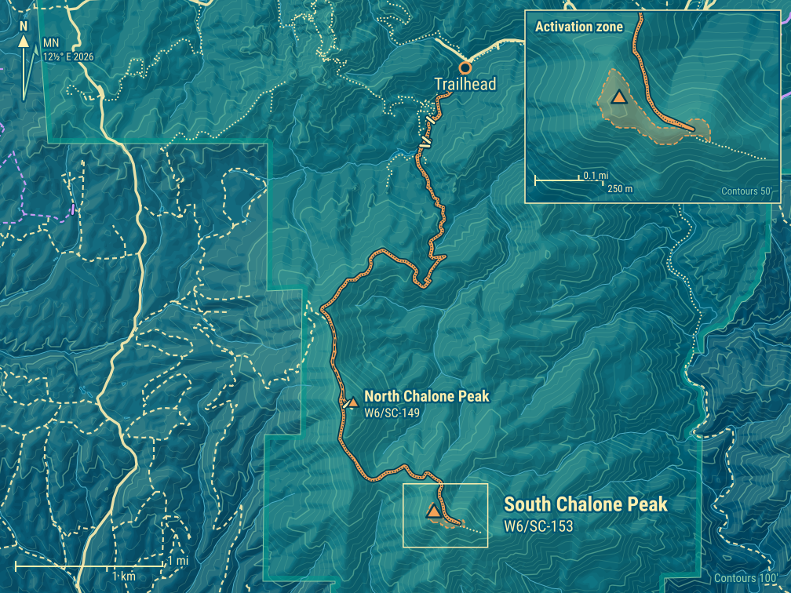
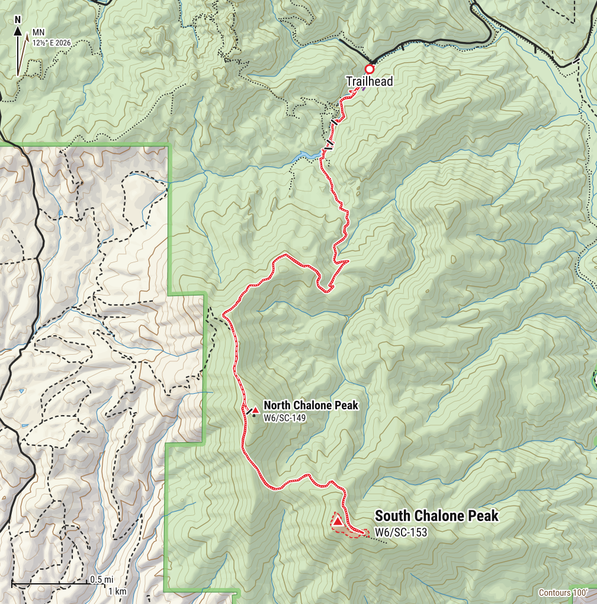
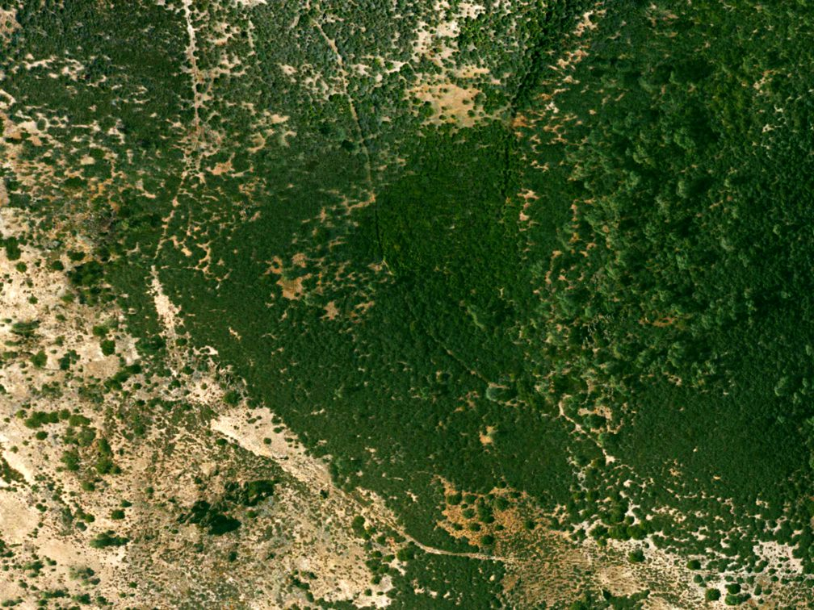
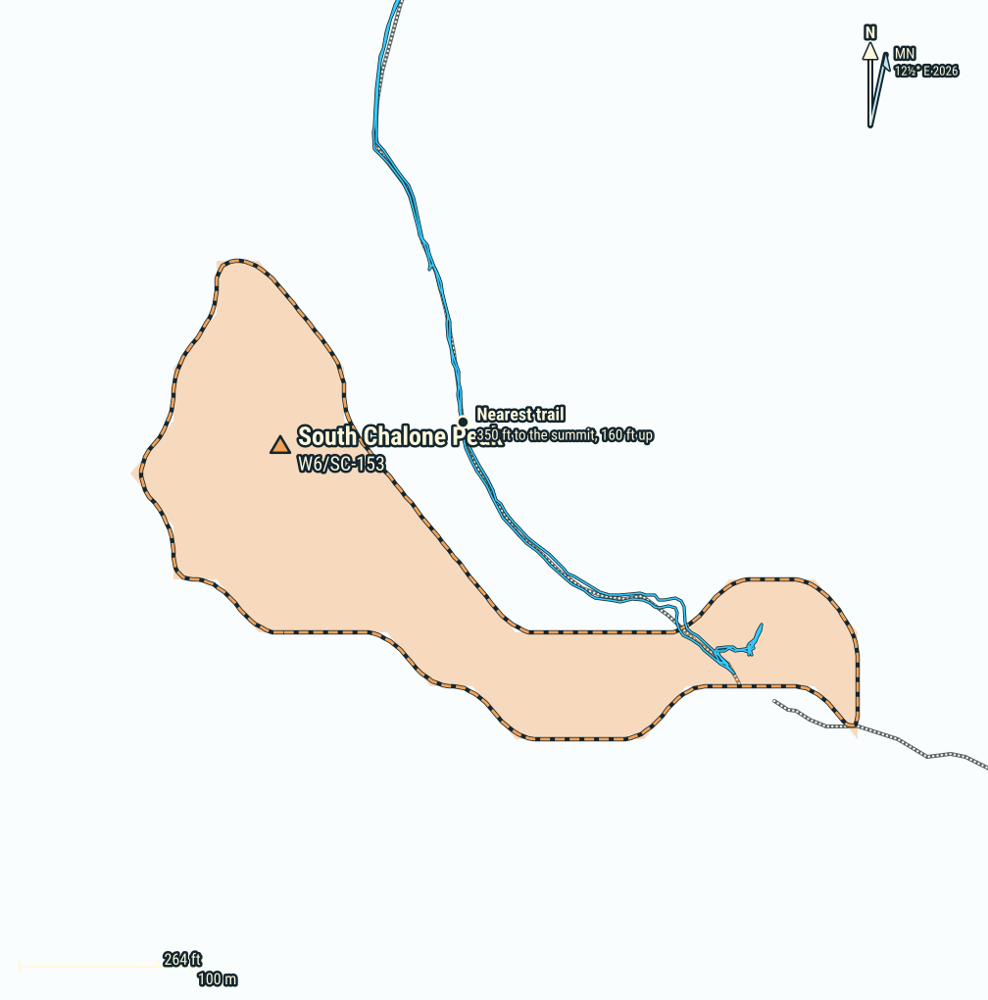
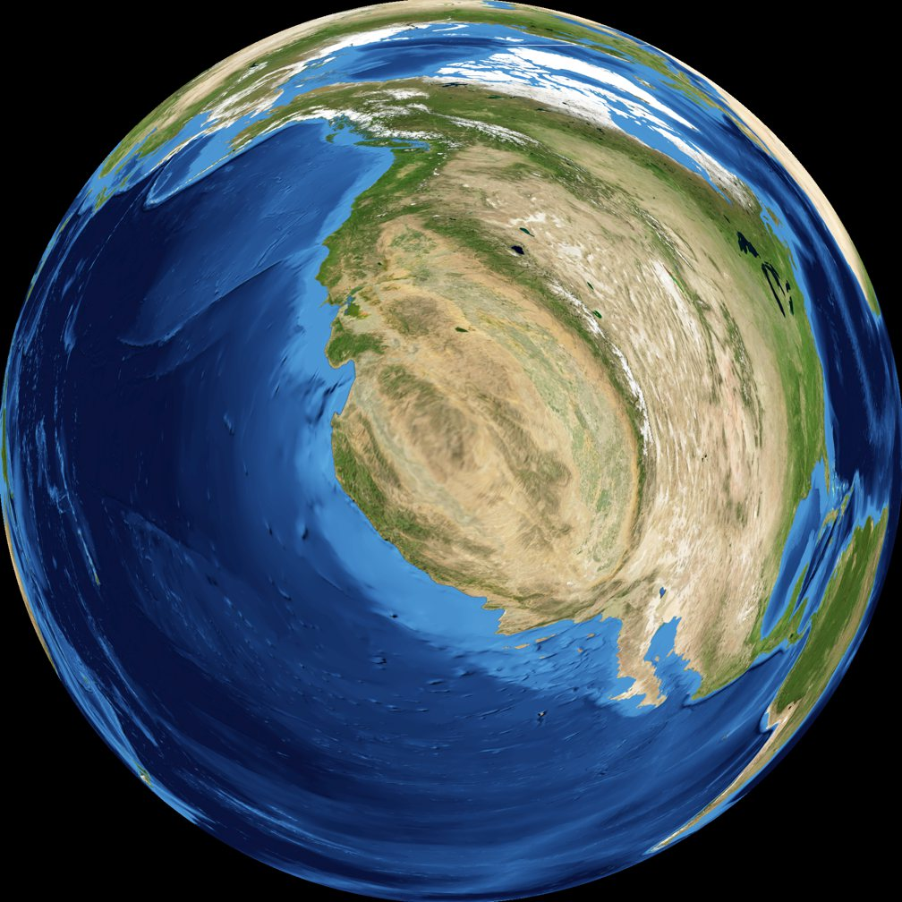
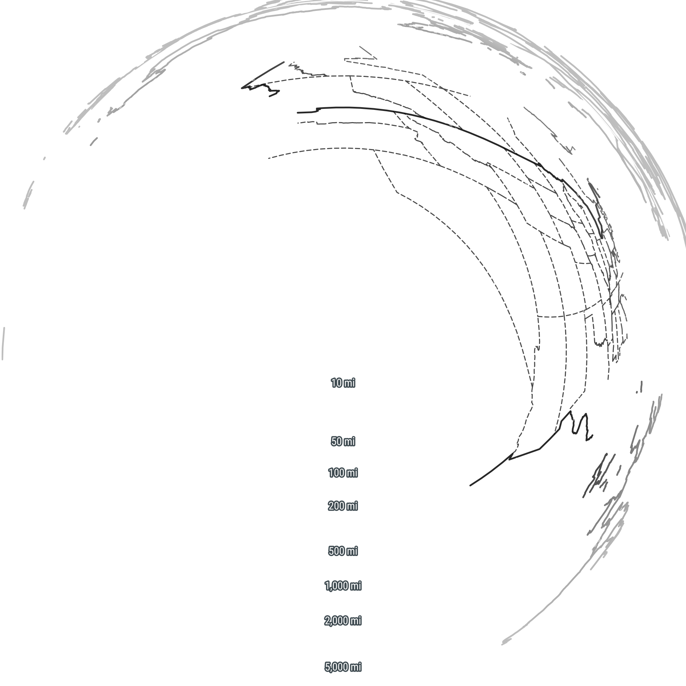
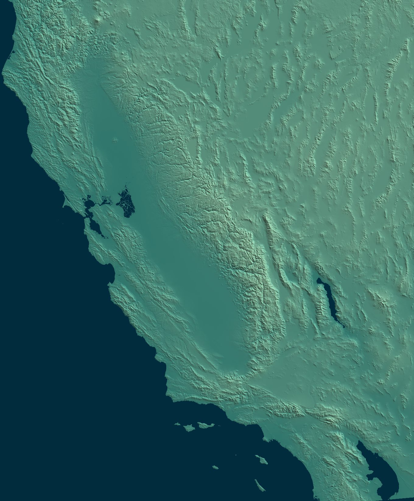
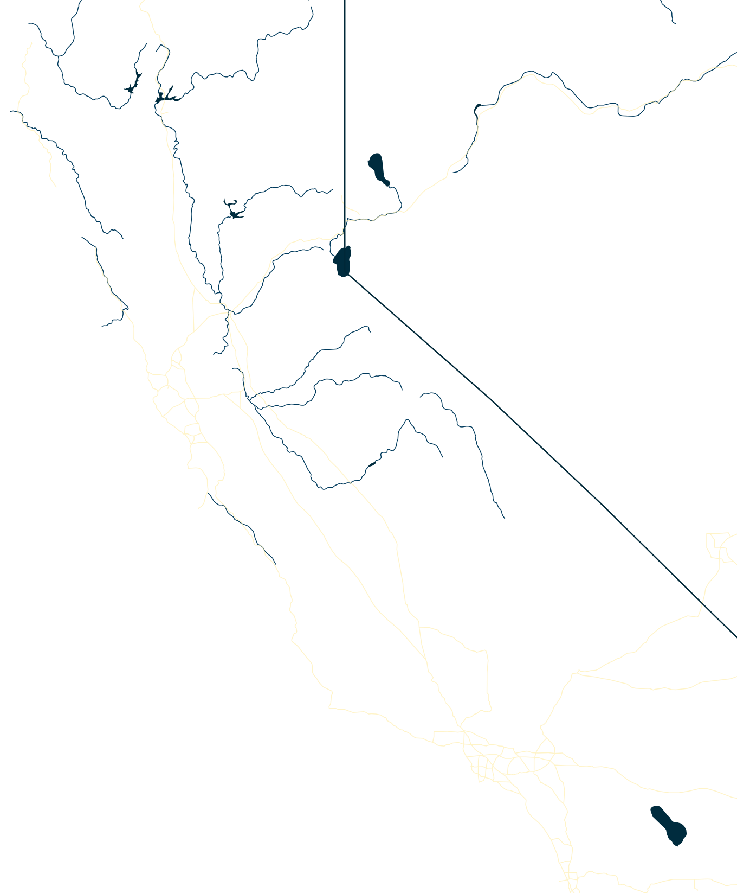
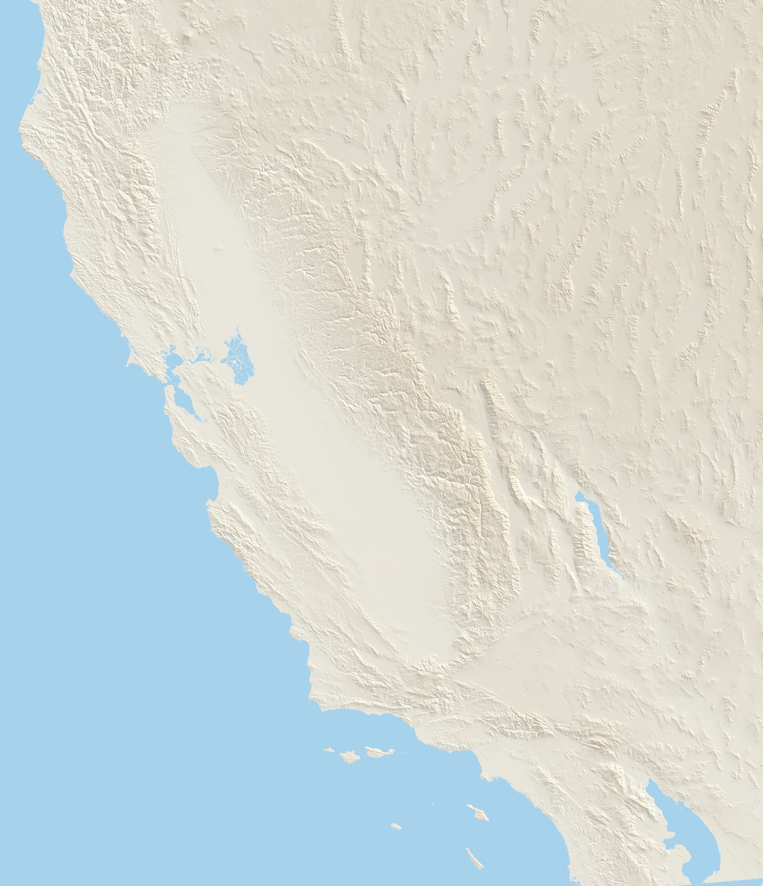
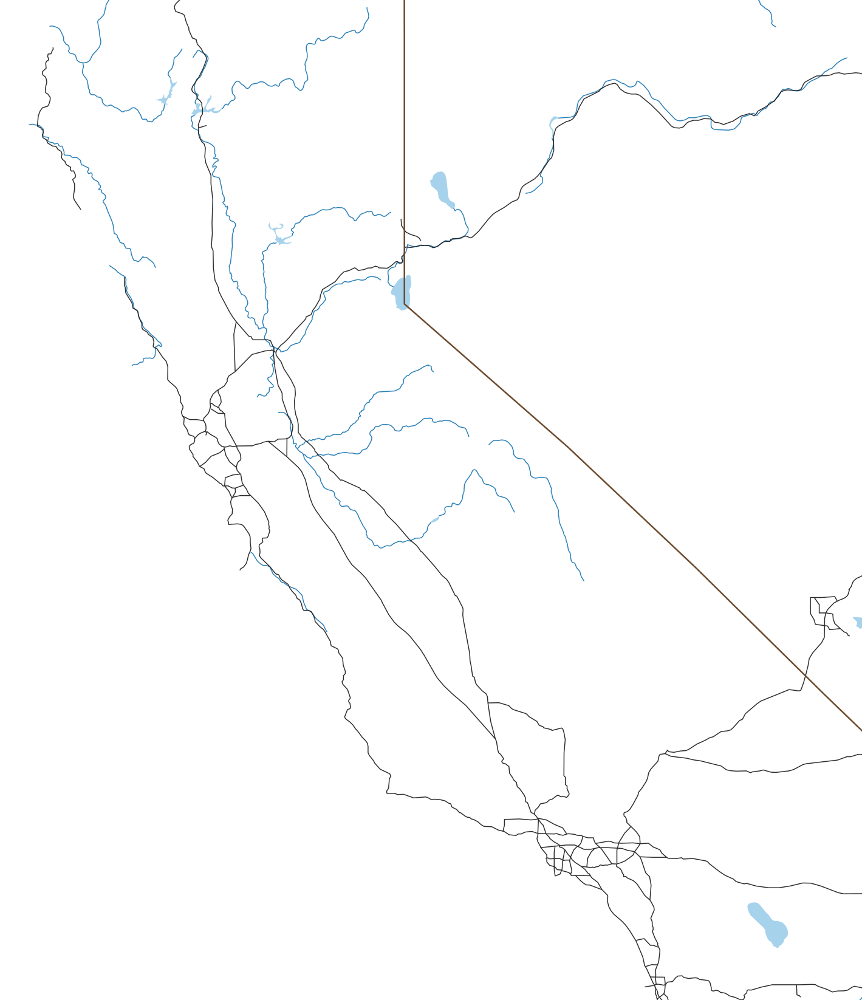

South Chalone Peak W6/SC-153
Summit
- Summit
- W6/SC-153 · Peakbagger
- Points
- 2
- First activation
- KB1KXL, 5 September 2016
- Elevation
- 3,269′ (996 m)
- Prominence
- 651′ (198 m)
- Isolation
- 0.9 mi (1.5 km)
- Region
- Southern Coastal Ranges
- County
- Monterey, California
- Grid
- CM96jk
- Land
- Pinnacles National Park (National Park Service)
- Wilderness
- Hain Wilderness Area
- POTA park
- US-0640 Pinnacles National Park/Hain Wilderness Area
Route and radio
- Trailhead
- Bear Gulch Parking Area, 1,310′ (399 m)
- Access
- Paved road
- Red tape
- National Park Pass or day-use fee
- Round trip
- 11 mi (17.7 km), 11.5 h, with North Chalone Peak
- Elevation gain
- 3,210′ (978 m)
- Transport
- Hiking, Class 1 (Class 2 to the summit)
- Cell service
- Top: T-Mobile, Verizon good · way up: from 2,700′
- Towers, power lines
- None within 2 km
RF nearby: 213 licensed stations within 30 km
What to bring, the cheapest radio that still works here, on the AJ6X RF scale: HF: rung 1 of 4, uSDX or QMX, about $150: anything works. VHF: rung 1 of 4, Baofeng, about $25: anything works.
| Station | Service | Frequency | ERP | Where | Terrain | dBµV/m |
|---|---|---|---|---|---|---|
| KLOK-FM | FM radio | 99.5 MHz | 30 kW | 10.6 km W | in sight | 101 |
| KEXA | FM radio | 93.9 MHz | 5.4 kW | 6.9 km SW | in sight | 97 |
| KMLY | FM radio | 95.1 MHz | 6 kW | 10.5 km W | in sight | 94 |
| KXSM | FM radio | 93.1 MHz | 2.5 kW | 10.5 km W | in sight | 90 |
| KSGZ | FM radio | 98.7 MHz | 2.5 kW | 10.5 km W | in sight | 90 |
| KMBX | AM radio | 700 kHz | 2.5 kW | 10.6 km W | in sight | 88 |
| KMJV | FM radio | 106.3 MHz | 4.7 kW | 19.7 km SW | in sight | 88 |
| KKMC | AM radio | 880 kHz | 10 kW | 26.4 km NW | −8 dB | 84 |
| KNKA587 | cellular | 824–890 MHz | 141 W | 6.9 km SW | in sight | 82 |
| KNKG523 | paging | 931.112 MHz | 1.14 kW | 19.8 km SE | in sight | 82 |
| KNKK802 | paging | 931.737 MHz | 1.45 kW | 22.6 km W | in sight | 81 |
| WPFJ997 | paging | 929.737 MHz | 1 kW | 19.8 km SE | in sight | 81 |
Field strength at the summit from each station's power and distance, less an estimate of the terrain in between. A rough guide, by a rung either way: antenna patterns aren't known, and the noise from a site's equipment is in no licence. Data: FCC licences (2026-10-24), NOAA Weather Radio, OpenStreetMap.
Further down: Map · Aerial photo · QSO map · Summit to summit · Log
Coming from North Chalone Peak, reaching South Chalone means a 700′ descent and a 600′ climb, and the same in reverse on the way back: 1,300′ of extra climbing in all. By now the temperatures are probably climbing. Consider whether there is enough water, food, time and energy to continue.
Getting there
The entrance, the trailhead, the caves and the way up to North Chalone are in North Chalone’s article. The water, heat, lights and snakes notes apply here even more: this is the far end of the hike, with the long way back still ahead.
The way up
From North Chalone, follow the unmaintained trail to South Chalone Peak. It leaves the dirt road on the right, just after the ladder over the locked gate below the North Chalone summit, and is easy to miss when it’s overgrown in spring (Brian AB6D). There’s a small sign, nearly due west of the North Chalone summit, and another at the saddle; the trail is 1.6 miles one way (from Peakbagger). Few people come this way: grass grows on the trail, so use tick repellent. The trail fizzles out near the summit, but within the activation zone. There are a few options:
- Follow the trail, and before reaching its end go off-trail up to the summit: Class 2, steep and brushy. That’s how I went in 2022. Jeffrey AA6XA found the easiest way up: an open, grassy slope on the right, shortly before the trail reaches the ridge. From the trail’s end you can see it: walk back about two minutes and head up west, about five minutes to the summit, with a few cairns along the way (from Peakbagger).
- From the saddle, go up along the western fence. Very steep, and a few years ago the area was full of snakes. You can reach the activation zone this way, but not the summit: dense brush on top. That’s how Marco KM6ELO and I went in 2023: we got into the activation zone, but couldn’t push through the vegetation.
- Follow the trail to its end (another pile of trash), just inside the activation zone. A few steps away there are some rocks, more interesting than the trash: Brian AB6D‘s “secret spot”, with a map of the way there. That’s where the kids and I went in 2026, and that’s the route and the spot for us from now on.
Summit
The trash is what’s left of an abandoned construction project: fencing material spread around the clearing at the trail’s end, and a big black box on the summit that at least makes a nice bench (from Peakbagger).
To the actual summit
In 2022 I followed the trail to its end first, then walked back to the point closest to the summit and went up from there: a steep talus slope, then pushing through dense brush. Class 2, where the trail into the activation zone is Class 1. Others found an open, grassy slope instead (see Jeffrey AA6XA above). I found the summit, flat, brushy, with no views, and decorated with an eclectic collection of trash. There is a summit register too, if you want to sign it. A bit further on there was a little open space, just enough to raise the antenna.

Along the fence
Marco KM6ELO and I went this way in 2023, on a warm June afternoon, in full sun. Steep all the way. We had hiking poles, and they earned their keep: on steep terrain they give you two more points of contact, going up and even more coming down. In snake country, always take them. Tapping the ground ahead and sweeping the grass gives a snake time to notice you and get out of the way, and the pole, not your foot or hand, is the first thing to get close to it.
This one refused to move. We were visiting, and the snake lived there, so we respected its wishes and went around. Snakes are awesome, and useful: they keep the rodents in check. Most of the time they just want to get away from us.
Up there is the one picnic spot with a real view.

Following the trail
With the kids in 2026: the easy way, and the best spot. Just a few steps from the trail’s end, but surprisingly hard to find behind the dense brush, these rocks offer a slightly better view. No dramatic vistas here; vegetation hides most of the view.


Activations
Count on HF here too.
5 February 2022
- Radio
- Icom IC-705
- Antenna
- 40m EFHW
- Activator
- AJ6X
- QSOs
- 18 (3 S2S)
- Bands
- 40m (16), 2m (1), 20m (1)
- Modes
- SSB (17), DV (1)
- On air
- 22:31–23:31 UTC
- Summit to summit
- W6/SC-149
From the actual summit. Marco KM6ELO stayed on North Chalone, so the first contacts were summit-to-summit with him, on 2m digital voice and then on 20m SSB. Then 40m SSB: 15 contacts in half an hour, mostly California, plus Nevada. 18 contacts in all. Then back to North Chalone, and we walked back together.
7 March 2026
- Radio
- Elecraft KX2
- Antenna
- 40m EFHW
- Activators
- AJ6X (16), KO6MFP (7), KO6MFO (7)
- QSOs
- 30 (11 S2S)
- Bands
- 40m (16), 15m (8), 2m (6)
- Modes
- CW (24), FM (6)
- On air
- 22:36–00:26 UTC
The kids and I operated from the rocks near the trail’s end. On the air at 2:36 PM on 40m CW, slow going: 6 contacts in 40 minutes, KO6MFP and KO6MFO working most of them too. Then I tried 15m, and it was wide open to the Pacific: 8 contacts in 13 minutes, including four in Japan (7N1FRE, JA1VVH, JG0AWE and JS1IFK) and ZL1TM in New Zealand. From a summit hidden in the brush! Before heading back, the three of us worked each other on 2m. 7 contacts each for the kids, and 16 for me.
And back again
Happy and tired, heading back home. The sun set on the way back, and the last stretch down to the reservoir was in twilight, then darkness.


Back at the reservoir after 7 PM.

Ready for the long drive home. We’ll be back at the Pinnacles in a week, for Hawkins Peak.
Map


Cell service, 4G, from the carriers' maps: good fair weak
Aerial photo


QSO map


Azimuthal equidistant, log (linear inside 13 km) distance scale, out to 11,745 km, centred on the summit: every QSO is a straight line, true in direction. Chasers at their location on QRZ, to about 5 km; summit-to-summit contacts at the other summit; 6 with those on the summit with us at the centre, under its triangle. Rings: what the skimmers of the Reverse Beacon Network heard of our calls during the activations, each skimmer at the centre of its grid square. Earth: NASA Blue Marble.
Summit to summit on 2 m
1,687 activated summits in reach of South Chalone Peak on 2 m at 5 W, most activated first.
- Two rubber duckies, FM: 111. Mount Pinos W6/CC-002, Cerro Noroeste W6/SC-001, Black Mountain W6/NC-150, El Sereno W6/NC-191
- Two half-waves, FM: 229. Vollmer Peak W6/NC-298, Mount Diablo W6/CC-045, Frazier Mountain W6/CC-003, Mount Umunhum W6/CC-052
- Yagis help, CW: 632. Mount Davidson W6/NC-423, San Gabriel Peak W6/CT-019, Waterman Mountain W6/CT-012, Kratka Ridge W6/CT-014
- Long shots with two yagis, CW, half of the time: 408. Flint Peak W6/CT-225, Table Mountain W6/CT-067, Vetter Mountain W6/CT-021, 4202 W6/CT-150
- Very long shots with two yagis, CW, a tenth of the time: 307. Cerro Negro Benchmark W6/CT-226, Niguel Hill W6/SC-371, Temple Hill W6/SC-369, Workman Hill W6/CT-244




▲ South Chalone Peak
- Two rubber duckies, FM: 111. Mount Pinos W6/CC-002, Cerro Noroeste W6/SC-001, Black Mountain W6/NC-150, El Sereno W6/NC-191
- Two half-waves, FM: 229. Vollmer Peak W6/NC-298, Mount Diablo W6/CC-045, Frazier Mountain W6/CC-003, Mount Umunhum W6/CC-052
- Yagis help, CW: 632. Mount Davidson W6/NC-423, San Gabriel Peak W6/CT-019, Waterman Mountain W6/CT-012, Kratka Ridge W6/CT-014
- Long shots with two yagis, CW, half of the time: 408. Flint Peak W6/CT-225, Table Mountain W6/CT-067, Vetter Mountain W6/CT-021, 4202 W6/CT-150
- Very long shots with two yagis, CW, a tenth of the time: 307. Cerro Negro Benchmark W6/CT-226, Niguel Hill W6/SC-371, Temple Hill W6/SC-369, Workman Hill W6/CT-244
Calculated, not measured, with NTIA's Irregular Terrain Model (ITM, Longley-Rice) point to point over each path's profile: 146 MHz, continental temperate climate, average ground. 5 W, antennas 6.5′ (2 m) up and aimed, RFI left out. A rough guide. Each group is the easiest setup that works 90% of the time. FM needs −119.5 dBm at the receiver (12 dB SINAD), with rubber duckies at about −5.4 dBi each (−3 to −8), upright in the hand and facing the other summit, and half-waves at 2.15; both must still work under a 65′ (20 m) canopy along the path, clear of the tops. Yagis: CW at 0 dB over noise in 500 Hz. Long shots work half of the time, very long shots a tenth, with two yagis. Terrain from USGS 3DEP at 30 m, summits from the SOTA list, rivers, freeways and state lines from Natural Earth.
The path to 20 of them
The ground as a radio sees it, the earth's curve included, from South Chalone Peak on the left. Heights are stretched a lot.
All 1,687
In dB, 90% of the time; 0 or more works. Rubber duckies and two half-waves: margin over a working FM signal, under the canopy. With yagis: CW signal over noise in 500 Hz, half-wave and yagi vertical, two yagis horizontal.
| Summit | Activations | mi | What works | Rubber duckies, FM | Two half-waves, FM | Half-wave, yagi, CW | Two yagis, CW | |
|---|---|---|---|---|---|---|---|---|
| W6/NC-423 Mount Davidson | 925 | 114 | NW | Yagis | −26 | −11 | 20 | 25 |
| W6/NC-298 Vollmer Peak | 638 | 115 | NNW | Half-waves | −9 | 6 | 31 | 36 |
| W6/CT-225 Flint Peak | 546 | 230 | SE | Long shot | −49 | −34 | −8 | −4 |
| W6/CT-226 Cerro Negro Benchmark | 387 | 229 | SE | Very long shot | −56 | −41 | −15 | −11 |
| W6/CT-067 Table Mountain | 329 | 243 | SE | Long shot | −46 | −31 | −6 | −2 |
| W6/CC-045 Mount Diablo | 275 | 108 | NNW | Half-waves | −5 | 11 | 36 | 40 |
| W6/CC-002 Mount Pinos | 256 | 160 | SE | Rubber duckies | 3 | 18 | 43 | 48 |
| W6/CT-019 San Gabriel Peak | 256 | 231 | SE | Yagis | −45 | −30 | −4 | 0 |
| W6/SC-001 Cerro Noroeste | 248 | 157 | SE | Rubber duckies | 0 | 16 | 41 | 45 |
| W6/CT-012 Waterman Mountain | 246 | 234 | SE | Yagis | −41 | −26 | −1 | 3 |
| W6/CT-014 Kratka Ridge | 242 | 235 | SE | Yagis | −45 | −30 | −4 | 0 |
| W6/CT-021 Vetter Mountain | 219 | 231 | SE | Long shot | −47 | −32 | −7 | −2 |
| W6/CC-003 Frazier Mountain | 218 | 169 | SE | Half-waves | −2 | 13 | 39 | 43 |
| W6/CC-072 San Bruno Mountain | 215 | 111 | NW | Yagis | −21 | −6 | 22 | 27 |
| W6/CT-010 Mount Islip | 204 | 237 | SE | Yagis | −38 | −23 | 2 | 7 |
| W6/CT-150 4202 | 196 | 227 | SE | Long shot | −49 | −34 | −8 | −4 |
| W6/CT-005 Throop Peak | 196 | 239 | SE | Yagis | −41 | −26 | −1 | 4 |
| W6/SC-371 Niguel Hill | 190 | 281 | SE | Very long shot | −55 | −40 | −15 | −11 |
| W6/NS-290 Big Hill | 185 | 172 | NNE | Yagis | −29 | −14 | 11 | 15 |
| W6/NC-150 Black Mountain | 184 | 81 | NW | Rubber duckies | 7 | 22 | 48 | 52 |
| W6/CC-052 Mount Umunhum | 180 | 64 | NW | Half-waves | −6 | 9 | 42 | 47 |
| W6/CT-004 Mount Baden-Powell | 180 | 240 | SE | Yagis | −41 | −26 | −1 | 4 |
| W6/CT-025 Josephine Peak | 178 | 226 | SE | Long shot | −44 | −29 | −5 | 0 |
| W6/SC-369 Temple Hill | 176 | 278 | SE | Very long shot | −54 | −39 | −13 | −8 |
| W6/CT-015 Pacifico Mountain | 169 | 227 | SE | Yagis | −41 | −26 | 0 | 4 |
| W6/CT-158 4020 | 168 | 212 | SE | Long shot | −47 | −32 | −7 | −3 |
| W6/NC-191 El Sereno | 167 | 71 | NW | Rubber duckies | 5 | 20 | 45 | 50 |
| W6/CT-086 Strawberry Peak | 165 | 270 | ESE | Long shot | −50 | −35 | −10 | −5 |
| W6/CC-063 Mount Tamalpais | 161 | 129 | NW | Yagis | −25 | −9 | 22 | 27 |
| W6/CT-071 Circle Mountain | 158 | 249 | SE | Long shot | −48 | −33 | −8 | −4 |
| W6/NS-181 Donner Ridge | 157 | 207 | NNE | Yagis | −38 | −23 | 2 | 7 |
| W6/CT-146 Hoyt Mountain | 154 | 226 | SE | Yagis | −44 | −29 | −3 | 1 |
| W6/CT-098 Occidental Peak | 152 | 232 | SE | Long shot | −51 | −36 | −7 | −2 |
| W6/CT-013 Keller Peak | 152 | 280 | ESE | Long shot | −52 | −37 | −12 | −7 |
| W6/NC-432 Chabot 2 Benchmark | 151 | 103 | NNW | Half-waves | −14 | 2 | 27 | 32 |
| W6/NC-209 Sierra Morena | 149 | 91 | NW | Half-waves | −15 | 1 | 26 | 31 |
| W6/ND-037 Lookout Mountain | 147 | 152 | NE | Yagis | −44 | −29 | −3 | 1 |
| W6/NC-399 Coyote Peak | 145 | 63 | NNW | Half-waves | −2 | 13 | 40 | 44 |
| W6/SC-002 San Emigdio Mountain | 143 | 156 | SE | Rubber duckies | 1 | 16 | 41 | 46 |
| W6/CT-274 Saddle Peak | 143 | 217 | SE | Long shot | −49 | −34 | −9 | −5 |
| W6/CT-244 Workman Hill | 143 | 247 | SE | Very long shot | −54 | −39 | −14 | −9 |
| W6/CT-242 1416 | 139 | 250 | SE | Very long shot | −55 | −40 | −15 | −11 |
| W6/SC-219 Triunfo Lookout | 137 | 206 | SE | Yagis | −45 | −30 | −2 | 3 |
| W6/CT-247 Mount Williamson | 137 | 235 | SE | Yagis | −42 | −27 | −2 | 3 |
| W6/CT-018 Strawberry Peak | 136 | 228 | SE | Yagis | −43 | −28 | −3 | 2 |
| W6/CT-017 Mount Gleason | 133 | 221 | SE | Yagis | −39 | −24 | 1 | 5 |
| W6/CT-246 Mount Lewis | 129 | 238 | SE | Yagis | −42 | −27 | −2 | 3 |
| W6/CT-089 Mount Lawlor | 128 | 229 | SE | Yagis | −46 | −30 | −2 | 2 |
| W6/CT-022 Sunset Peak | 127 | 250 | SE | Long shot | −51 | −36 | −11 | −7 |
| W6/SN-039 Leviathan Peak | 126 | 178 | NNE | Yagis | −40 | −25 | 0 | 5 |
| W6/NS-189 Gold Star Peak | 125 | 204 | NNE | Yagis | −43 | −28 | −3 | 2 |
| W6/ND-392 Dry Creek Knoll | 118 | 149 | NE | Yagis | −39 | −24 | 4 | 9 |
| W6/NS-147 Mount Watson | 114 | 200 | NNE | Yagis | −38 | −23 | 2 | 7 |
| W6/CT-044 Onyx Peak | 113 | 296 | ESE | Very long shot | −56 | −41 | −17 | −12 |
| W6/CT-054 Bertha Peak | 112 | 284 | ESE | Long shot | −51 | −36 | −10 | −6 |
| W6/SC-155 Mount Bielawski | 110 | 74 | NW | Rubber duckies | 10 | 25 | 51 | 55 |
| W6/CT-269 Verdugo Mountains (HP) | 108 | 224 | SE | Long shot | −52 | −37 | −12 | −7 |
| W6/CT-037 Cahuenga Peak | 106 | 226 | SE | Very long shot | −54 | −39 | −15 | −10 |
| W6/CC-051 North Peak | 105 | 108 | NNW | Half-waves | −6 | 9 | 34 | 38 |
| W6/NS-195 Grouse Ridge | 103 | 206 | N | Yagis | −38 | −23 | 27 | 32 |
| W6/CT-116 Sierra Pelona | 101 | 211 | SE | Yagis | −36 | −21 | 6 | 10 |
| W6/CT-087 6020 | 101 | 223 | SE | Yagis | −43 | −27 | −2 | 2 |
| W6/NC-407 Richardson East Benchmark | 100 | 122 | NW | Yagis | −28 | −13 | 19 | 23 |
| W6/CT-050 Delamar Mountain | 100 | 281 | ESE | Long shot | −50 | −35 | −10 | −6 |
| W6/SD-442 5380 | 98 | 266 | SE | Long shot | −47 | −32 | −5 | 0 |
| W6/CT-003 Mount San Antonio | 96 | 249 | SE | Yagis | −43 | −28 | −3 | 1 |
| W6/CT-240 1428 | 95 | 253 | SE | Very long shot | −56 | −40 | −16 | −11 |
| W6/NS-397 Tahoe Mountain | 93 | 182 | NNE | Long shot | −50 | −35 | −9 | −5 |
| W6/NS-306 Lowell Hill Ridge | 93 | 201 | N | Yagis | −38 | −23 | 2 | 7 |
| W6/ND-012 Bald Mountain | 92 | 157 | NE | Yagis | −39 | −23 | 2 | 6 |
| W6/CT-218 Temescal Peak | 92 | 219 | SE | Long shot | −54 | −39 | −14 | −9 |
| W6/SC-362 Signal Peak | 92 | 273 | SE | Very long shot | −55 | −40 | −15 | −10 |
| W6/NS-248 7008 | 91 | 182 | NNE | Long shot | −50 | −35 | −10 | −5 |
| W6/NC-371 Briones Hills | 90 | 116 | NNW | Yagis | −21 | −6 | 21 | 25 |
| W7N/TR-027 Captain Pomin Rock | 89 | 196 | NNE | Yagis | −42 | −27 | −2 | 3 |
| W6/NS-138 Mount Pluto | 89 | 202 | NNE | Yagis | −38 | −23 | 2 | 7 |
| W6/NC-268 Rocky Ridge | 88 | 107 | NNW | Yagis | −16 | 0 | 26 | 30 |
| W6/NS-266 Robbs Peak | 88 | 177 | NNE | Yagis | −31 | −15 | 9 | 14 |
| W6/CT-214 Calabasas Peak | 88 | 215 | SE | Long shot | −53 | −38 | −13 | −8 |
| W6/CT-130 Grass Mountain | 87 | 199 | SE | Yagis | −43 | −28 | −3 | 2 |
| W6/CC-056 Sandstone Peak | 86 | 204 | SE | Yagis | −43 | −28 | −2 | 2 |
| W7N/WC-011 Peavine Peak | 86 | 228 | NNE | Long shot | −46 | −31 | −6 | −1 |
| W6/CT-052 Timber Mountain | 86 | 253 | SE | Very long shot | −59 | −44 | −19 | −14 |
| W6/CT-230 San Juan Hill | 86 | 261 | SE | Very long shot | −57 | −41 | −17 | −12 |
| W6/CT-053 Gold Mountain | 86 | 286 | ESE | Very long shot | −52 | −37 | −12 | −7 |
| W7N/WC-003 Tamarack Peak | 85 | 211 | NNE | Yagis | −38 | −23 | 2 | 7 |
| W6/SN-033 Mammoth Mountain | 83 | 145 | NE | Yagis | −19 | −4 | 21 | 25 |
| W6/CT-029 Mount Emma | 82 | 222 | SE | Long shot | −47 | −32 | −7 | −2 |
| W6/CT-228 1821 | 81 | 206 | SE | Long shot | −51 | −36 | −11 | −7 |
| W6/CT-118 Mount McDill | 79 | 209 | SE | Yagis | −43 | −28 | −2 | 2 |
| W6/SC-345 San Pedro Hill | 79 | 246 | SE | Very long shot | −54 | −39 | −14 | −10 |
| W6/CC-075 Mount Caroline Livermore | 78 | 120 | NW | Yagis | −25 | −10 | 23 | 28 |
| W6/CT-170 Kagel Mountain | 78 | 215 | SE | Yagis | −46 | −31 | −4 | 1 |
| W6/NC-516 Maguire Peaks | 77 | 85 | NNW | Yagis | −17 | −2 | 25 | 29 |
| W6/CT-007 Tahquitz Peak | 77 | 315 | SE | Very long shot | −58 | −42 | −18 | −13 |
| W6/CC-071 Point Reyes Hill | 76 | 146 | NW | Yagis | −25 | −10 | 14 | 19 |
| W6/WH-008 10940 | 76 | 179 | ENE | Yagis | −39 | −24 | 2 | 6 |
| W6/NS-204 KU6J Memorial Peak - 7559 | 76 | 202 | NNE | Yagis | −34 | −19 | 6 | 11 |
| W6/CT-109 Jobs Peak | 76 | 264 | ESE | Long shot | −51 | −36 | −11 | −6 |
| W6/CT-259 Bald Mountain | 75 | 181 | SE | Yagis | −37 | −22 | 4 | 9 |
| W6/SC-375 Camarillo Hills | 74 | 193 | SE | Long shot | −54 | −39 | −13 | −9 |
| W6/CT-002 San Jacinto Peak | 71 | 312 | SE | Long shot | −53 | −38 | −13 | −9 |
| W6/NC-151 Mount Vaca | 70 | 145 | NNW | Yagis | −18 | −3 | 22 | 27 |
| W6/SC-004 Tecuya Mountain | 70 | 166 | SE | Half-waves | −5 | 10 | 35 | 40 |
| W6/CT-153 Parker Mountain | 70 | 216 | SE | Long shot | −48 | −33 | −8 | −4 |
| W7N/WC-004 Slide Mountain | 69 | 211 | NNE | Yagis | −38 | −23 | 2 | 6 |
| W6/SC-005 Escapula Peak | 68 | 161 | SE | Half-waves | −2 | 13 | 39 | 43 |
| W6/SC-347 1470 | 68 | 212 | SE | Long shot | −53 | −38 | −14 | −9 |
| W6/NC-338 Brushy Peak | 67 | 96 | NNW | Yagis | −23 | −8 | 26 | 31 |
| W6/CT-006 Cucamonga Peak | 67 | 254 | SE | Long shot | −47 | −32 | −7 | −2 |
| W6/SC-460 906 | 67 | 291 | SE | Very long shot | −56 | −41 | −16 | −12 |
| W6/CC-062 Santa Rosalia Mountain | 64 | 57 | NW | Rubber duckies | 10 | 26 | 54 | 58 |
| W6/ND-041 8126 | 64 | 153 | NE | Long shot | −46 | −31 | −5 | −1 |
| W6/NC-182 Willson Peak | 63 | 48 | NNW | Rubber duckies | 31 | 46 | 71 | 76 |
| W6/CT-009 Butler Peak | 63 | 279 | ESE | Long shot | −52 | −37 | −12 | −7 |
| W6/CT-041 9465 | 63 | 294 | ESE | Long shot | −50 | −35 | −10 | −5 |
| W6/NC-353 Burdell Mountain | 62 | 141 | NNW | Yagis | −30 | −15 | 21 | 25 |
| W6/CT-048 Ontario Peak | 62 | 252 | SE | Long shot | −45 | −30 | −5 | 0 |
| W6/CC-055 Fremont Peak | 61 | 28 | NW | Rubber duckies | 22 | 37 | 76 | 80 |
| W6/NC-180 Mount Allison | 60 | 83 | NNW | Half-waves | −4 | 11 | 43 | 48 |
| W6/CT-207 Simi Peak | 59 | 205 | SE | Long shot | −51 | −35 | −10 | −6 |
| W6/NS-177 7860 | 59 | 216 | NNE | Yagis | −43 | −28 | −2 | 2 |
| W6/CT-030 Mount Lukens | 59 | 224 | SE | Long shot | −47 | −32 | −6 | −2 |
| W6/WH-009 10660 | 58 | 178 | ENE | Yagis | −38 | −23 | 2 | 6 |
| W6/NS-236 Prosser Hill | 58 | 210 | NNE | Long shot | −46 | −31 | −5 | −1 |
| W6/NS-393 7751 | 57 | 205 | NNE | Yagis | −37 | −22 | 6 | 10 |
| W6/NS-264 Boca Hill | 57 | 212 | NNE | Yagis | −44 | −29 | −4 | 1 |
| W7N/WC-111 Rattlesnake Mountain | 57 | 224 | NNE | Very long shot | −57 | −42 | −16 | −12 |
| W6/CT-023 Santiago Peak | 57 | 279 | SE | Long shot | −52 | −37 | −12 | −7 |
| W6/NS-269 6622 | 56 | 176 | NNE | Long shot | −52 | −37 | −12 | −7 |
| W6/CT-255 Magic Mountain | 56 | 214 | SE | Yagis | −43 | −28 | −3 | 2 |
| W6/NC-435 Tiburon Peninsula | 55 | 123 | NW | Yagis | −26 | −11 | 22 | 27 |
| W6/NC-398 1180 | 54 | 108 | NNW | Yagis | −18 | −3 | 24 | 28 |
| W6/CC-005 Reyes Peak | 54 | 164 | SE | Half-waves | −1 | 14 | 39 | 44 |
| W6/CT-263 4020 | 54 | 188 | SE | Long shot | −52 | −37 | −12 | −7 |
| W6/CT-245 San Gorgonio Mountain | 54 | 294 | ESE | Long shot | −51 | −36 | −11 | −6 |
| W6/NC-244 Sunol Peak | 53 | 91 | NNW | Half-waves | −8 | 7 | 33 | 38 |
| W6/CT-046 Telegraph Peak | 53 | 252 | SE | Long shot | −53 | −38 | −12 | −8 |
| W6/NC-542 Point Reyes | 52 | 147 | NW | Yagis | −28 | −13 | 13 | 17 |
| W6/CT-060 7940 | 52 | 280 | ESE | Long shot | −51 | −36 | −11 | −7 |
| W6/NC-178 Ben Lomond Mountain | 51 | 73 | NW | Half-waves | −6 | 9 | 66 | 71 |
| W6/NC-030 Mount Saint Helena | 51 | 173 | NNW | Yagis | −23 | −8 | 17 | 22 |
| W6/CT-140 Jupiter Mountain | 51 | 202 | SE | Yagis | −43 | −28 | −2 | 2 |
| W6/SC-311 1838 | 51 | 208 | SE | Long shot | −53 | −38 | −12 | −8 |
| W6/CT-051 Arctic Point | 51 | 283 | ESE | Long shot | −52 | −37 | −12 | −7 |
| W6/ND-026 Gilbert Peak | 50 | 153 | NE | Long shot | −48 | −32 | −7 | −2 |
| W6/SC-086 La Cumbre Peak | 50 | 158 | SSE | Yagis | −32 | −17 | 9 | 13 |
| W6/CT-095 Liebre Mountain | 50 | 185 | SE | Yagis | −19 | −4 | 21 | 26 |
| W6/CT-076 Constance Peak | 50 | 285 | ESE | Long shot | −46 | −31 | −6 | −1 |
| W6/SC-378 Black Hill | 49 | 77 | SSE | Half-waves | −5 | 10 | 36 | 40 |
| W6/NC-410 San Pedro Mountain | 49 | 130 | NNW | Yagis | −21 | −6 | 22 | 27 |
| W6/NC-350 Loma Alta | 49 | 135 | NW | Yagis | −28 | −13 | 19 | 24 |
| W6/SC-161 Townsend Peak | 48 | 191 | SE | Long shot | −51 | −36 | −10 | −5 |
| W6/ND-144 Dante Benchmark | 48 | 249 | E | Long shot | −52 | −37 | −12 | −8 |
| W6/CT-039 Sugarloaf Mountain | 48 | 291 | ESE | Long shot | −50 | −35 | −10 | −5 |
| W6/NC-379 Taylor Mountain | 47 | 158 | NNW | Yagis | −30 | −15 | 10 | 15 |
| W7N/WC-005 Chickadee Ridge | 47 | 209 | NNE | Yagis | −39 | −24 | 2 | 6 |
| W6/NS-160 Sardine Peak | 47 | 221 | NNE | Yagis | −42 | −27 | −2 | 2 |
| W6/SC-458 Loma Alta | 46 | 39 | WNW | Rubber duckies | 5 | 20 | 46 | 50 |
| W6/NC-190 Marsh Benchmark | 46 | 101 | NNW | Half-waves | −12 | 3 | 29 | 33 |
| W6/CT-093 Burnt Peak | 46 | 190 | SE | Yagis | −34 | −19 | 7 | 12 |
| W6/SC-354 1338 | 46 | 200 | SE | Long shot | −49 | −34 | −9 | −4 |
| W6/CT-082 Bare Mountain | 46 | 228 | SE | Yagis | −45 | −30 | −5 | 0 |
| W6/NC-378 Mount Wittenberg | 45 | 143 | NW | Yagis | −25 | −10 | 18 | 23 |
| W6/NS-179 Signal Peak | 45 | 204 | N | Yagis | −28 | −13 | 26 | 31 |
| W6/SC-285 Ladyface | 45 | 209 | SE | Long shot | −51 | −36 | −10 | −6 |
| W6/CT-020 Palomar Mountain | 45 | 325 | SE | Very long shot | −57 | −42 | −17 | −12 |
| W6/NC-417 Abrott Benchmark | 44 | 120 | NNW | Yagis | −25 | −10 | 17 | 21 |
| W6/CT-136 Burn Benchmark | 44 | 202 | SE | Yagis | −44 | −29 | −3 | 2 |
| W6/NC-367 1502 | 43 | 52 | NNW | Rubber duckies | 12 | 27 | 52 | 57 |
| W6/NC-029 Copernicus Peak | 43 | 67 | NNW | Rubber duckies | 28 | 43 | 67 | 72 |
| W6/ND-393 8185 | 43 | 170 | ENE | Long shot | −49 | −34 | −8 | −4 |
| W6/SC-318 Conejo Mountain | 43 | 199 | SE | Long shot | −47 | −32 | −7 | −2 |
| W6/CT-064 East Twin Peaks | 43 | 235 | SE | Yagis | −43 | −28 | −3 | 2 |
| W6/SD-152 Bell Mountain | 43 | 257 | ESE | Very long shot | −53 | −37 | −13 | −8 |
| W6/SN-047 Bald Mountain | 42 | 172 | N | Half-waves | −11 | 4 | 30 | 34 |
| W6/WH-007 Clem Nelson Peak | 42 | 179 | ENE | Yagis | −39 | −24 | 2 | 6 |
| W6/NS-149 Mount Lincoln | 42 | 202 | NNE | Yagis | −37 | −22 | 3 | 8 |
| W6/NS-296 Clyde Mountain | 42 | 203 | N | Yagis | −37 | −22 | 3 | 8 |
| W6/NS-210 Colorado Hill | 41 | 174 | NNE | Long shot | −46 | −31 | −5 | −1 |
| W6/NS-135 South Maggies Peaks | 41 | 182 | NNE | Long shot | −51 | −36 | −10 | −5 |
| W6/SN-038 Castle Peak | 41 | 207 | NNE | Yagis | −38 | −23 | 2 | 7 |
| W7N/WC-002 Houghton, Mount | 41 | 211 | NNE | Yagis | −39 | −24 | 1 | 6 |
| W6/CT-099 Bailey Peak | 41 | 263 | SE | Long shot | −52 | −37 | −12 | −7 |
| W6/NC-221 China Grade Benchmark | 40 | 78 | NW | Rubber duckies | 26 | 41 | 65 | 70 |
| W6/SC-076 Whitaker Peak | 40 | 189 | SE | Long shot | −50 | −35 | −10 | −6 |
| W6/NS-156 Lacey Benchmark | 40 | 211 | N | Yagis | −40 | −25 | 0 | 4 |
| W7N/WC-001 Rose, Mount | 40 | 212 | NNE | Yagis | −37 | −22 | 3 | 7 |
| W6/SD-186 Catholic Hill | 40 | 258 | ESE | Very long shot | −53 | −38 | −13 | −8 |
| W6/CT-026 Modjeska Peak | 40 | 279 | SE | Long shot | −52 | −37 | −12 | −7 |
| W6/CT-126 Harold Beacon Benchmark | 39 | 215 | SE | Long shot | −47 | −32 | −7 | −2 |
| W6/CT-121 Snow Benchmark | 39 | 216 | SE | Yagis | −42 | −27 | −1 | 3 |
| W6/ND-387 Gaylor Peak | 38 | 147 | NE | Yagis | −24 | −9 | 18 | 22 |
| W6/NC-434 Bay Hill | 38 | 166 | NW | Yagis | −44 | −28 | 4 | 8 |
| W6/ND-029 Banner Ridge | 38 | 168 | ENE | Yagis | −43 | −28 | −3 | 2 |
| W6/NC-400 Bald Hill | 37 | 131 | NW | Yagis | −29 | −14 | 18 | 23 |
| W6/CT-163 Yerba Buena Ridge | 37 | 219 | SE | Long shot | −50 | −35 | −10 | −5 |
| W6/NS-132 Babbitt Peak | 37 | 226 | NNE | Yagis | −41 | −26 | −1 | 3 |
| W6/CT-047 8828 | 37 | 297 | ESE | Very long shot | −53 | −38 | −13 | −8 |
| W6/NC-406 Sulphur Springs Mountain | 36 | 131 | NNW | Yagis | −21 | −5 | 20 | 25 |
| W6/CV-017 968 | 36 | 137 | NNW | Yagis | −24 | −9 | 17 | 21 |
| W6/CC-060 Bald Mountain | 36 | 157 | NNW | Yagis | −25 | −10 | 15 | 20 |
| W6/NS-392 7779 | 36 | 175 | NNE | Long shot | −53 | −37 | −12 | −8 |
| W6/CT-144 4460 | 36 | 220 | SE | Yagis | −45 | −30 | −4 | 0 |
| W6/SC-213 Hawkins Peak | 35 | 4 | N | Rubber duckies | 55 | 70 | 94 | 99 |
| W6/NC-323 Black Point | 35 | 110 | NNW | Yagis | −44 | −29 | 0 | 5 |
| W6/NC-331 Pine Mountain | 35 | 134 | NW | Yagis | −41 | −25 | 6 | 10 |
| W6/NS-139 North Sierra Buttes | 35 | 220 | N | Yagis | −16 | −1 | 25 | 29 |
| W6/SS-285 Bald Mountain | 34 | 166 | E | Long shot | −46 | −31 | −6 | −2 |
| W6/CT-132 Granite Benchmark | 34 | 205 | SE | Yagis | −45 | −30 | −4 | 0 |
| W6/SN-001 Mount Whitney | 33 | 161 | E | Half-waves | −7 | 9 | 34 | 39 |
| W6/CT-032 Oat Mountain | 33 | 206 | SE | Long shot | −49 | −34 | −8 | −4 |
| W6/SD-472 3710 | 33 | 208 | ESE | Long shot | −51 | −36 | −11 | −6 |
| W6/CN-002 Lassen Peak | 33 | 280 | N | Long shot | −51 | −36 | −11 | −6 |
| W6/CT-128 Morton Peak | 33 | 284 | ESE | Very long shot | −54 | −39 | −14 | −9 |
| W6/SC-377 Valley View Benchmark | 32 | 91 | SSE | Half-waves | −15 | 0 | 27 | 32 |
| W6/NS-017 Tioga Peak | 32 | 149 | NE | Yagis | −23 | −8 | 18 | 22 |
| W7N/TR-007 Genoa Peak | 32 | 194 | NNE | Yagis | −39 | −24 | 1 | 6 |
| W6/SN-048 Banner Mountain | 32 | 194 | N | Yagis | −35 | −20 | 5 | 10 |
| W6/CC-035 Mount Konocti | 32 | 195 | NNW | Yagis | −35 | −20 | 5 | 9 |
| W6/CT-168 3784 | 32 | 213 | SE | Long shot | −51 | −36 | −10 | −5 |
| W6/NS-162 Haskell Peak | 32 | 226 | N | Yagis | −41 | −26 | −1 | 3 |
| W6/CT-180 Box Springs Mountains (HP) | 32 | 279 | SE | Very long shot | −60 | −45 | −20 | −16 |
| W6/CT-045 9070 | 32 | 298 | ESE | Very long shot | −56 | −40 | −15 | −10 |
| W6/SC-149 North Chalone Peak | 31 | 1 | NW | Rubber duckies | 66 | 82 | 106 | 111 |
| W6/SN-032 Sonora Peak | 31 | 157 | NNE | Yagis | −21 | −6 | 19 | 23 |
| W7N/WC-028 Scott, Mount | 31 | 211 | NNE | Long shot | −45 | −30 | −5 | 0 |
| W6/NS-193 Sagehen Hills | 31 | 211 | NNE | Yagis | −43 | −28 | −3 | 2 |
| W6/CT-040 Pine Mountain | 31 | 248 | SE | Yagis | −44 | −29 | −4 | 1 |
| W6/NC-174 Wasno Ridge | 30 | 50 | NNW | Rubber duckies | 31 | 46 | 71 | 75 |
| W6/IN-015 Tollhouse Benchmark | 30 | 176 | ENE | Long shot | −47 | −31 | −6 | −2 |
| W6/WH-004 Campito Mountain | 30 | 180 | ENE | Yagis | −38 | −23 | 2 | 6 |
| W6/WH-006 County Line Hill | 30 | 180 | ENE | Yagis | −38 | −23 | 3 | 7 |
| W6/CT-120 Smith Mountain | 30 | 239 | SE | Very long shot | −62 | −47 | −21 | −17 |
| W6/ND-257 Silver Mountain | 30 | 252 | ESE | Very long shot | −53 | −38 | −13 | −9 |
| W6/CT-112 Cleghorn Mountain | 30 | 259 | ESE | Long shot | −52 | −37 | −12 | −7 |
| W6/CT-212 Mount Jurupa | 30 | 269 | SE | Very long shot | −59 | −44 | −19 | −15 |
| W6/CT-268 Elsinore Mountains (HP) | 30 | 291 | SE | Very long shot | −58 | −43 | −17 | −13 |
| W6/NC-387 1272 | 29 | 102 | NNW | Yagis | −23 | −8 | 18 | 22 |
| W6/NS-062 Red Lake Peak | 29 | 170 | NNE | Yagis | −25 | −10 | 15 | 20 |
| W6/NS-108 Ralston Peak | 29 | 176 | NNE | Yagis | −29 | −14 | 11 | 15 |
| W6/ND-224 Government Peak | 29 | 210 | ESE | Long shot | −46 | −31 | −6 | −1 |
| W6/NS-223 Pinoli Ridge | 29 | 214 | N | Yagis | −35 | −20 | 5 | 10 |
| W6/CT-262 4300 | 29 | 221 | SE | Long shot | −46 | −31 | −6 | −1 |
| W6/NS-228 Beckwourth Peak | 29 | 234 | N | Yagis | −44 | −29 | −4 | 1 |
| W6/ND-270 Shadow Mountains (HP) | 29 | 235 | ESE | Long shot | −50 | −35 | −10 | −5 |
| W7N/WC-010 Virginia Peak | 29 | 248 | NNE | Long shot | −50 | −35 | −10 | −5 |
| W6/SS-306 Deer Mountain | 28 | 148 | NE | Long shot | −46 | −31 | −5 | 0 |
| W6/ND-009 Masonic Mountain | 28 | 174 | NE | Yagis | −43 | −28 | −3 | 2 |
| W6/NS-092 Waterhouse Peak | 28 | 175 | NNE | Yagis | −39 | −24 | 2 | 7 |
| W7N/TR-065 Wild Oat Mountain | 28 | 181 | NNE | Long shot | −48 | −33 | −7 | −2 |
| W6/NS-159 8166 | 28 | 212 | N | Yagis | −43 | −28 | −2 | 2 |
| W6/SD-181 3690 | 28 | 258 | ESE | Very long shot | −53 | −38 | −14 | −9 |
| W6/SC-353 Valencia Peak | 27 | 83 | SSE | Rubber duckies | 1 | 16 | 42 | 46 |
| W6/SS-334 Big Baldy | 27 | 129 | E | Half-waves | −5 | 10 | 35 | 39 |
| W6/CC-036 Santa Ynez Peak | 27 | 148 | SSE | Half-waves | −7 | 9 | 34 | 38 |
| W6/CD-005 Mazourka Peak | 27 | 174 | ENE | Yagis | −44 | −29 | −4 | 1 |
| W7N/TR-025 Davidson, Mount | 27 | 215 | NNE | Long shot | −45 | −30 | −5 | −1 |
| W6/ND-323 Lovejoy Buttes | 27 | 226 | ESE | Long shot | −51 | −36 | −10 | −6 |
| W7N/WC-064 6607 | 27 | 240 | NNE | Long shot | −51 | −36 | −10 | −6 |
| W6/CT-097 The Pinnacles | 27 | 267 | ESE | Very long shot | −53 | −38 | −13 | −9 |
| W6/SD-443 Goat Mountain | 27 | 269 | ESE | Very long shot | −55 | −40 | −16 | −11 |
| W6/NC-422 990 | 26 | 133 | NNW | Yagis | −21 | −6 | 20 | 24 |
| W6/SS-284 Earthquake Dome | 26 | 147 | NE | Yagis | −38 | −23 | 4 | 8 |
| W6/SN-020 Mount Dana | 26 | 148 | NE | Half-waves | −4 | 12 | 38 | 42 |
| W6/NS-065 Hawkins Peak | 26 | 175 | NNE | Yagis | −29 | −14 | 11 | 15 |
| W6/NS-422 Quick Benchmark | 26 | 184 | N | Yagis | −36 | −21 | 5 | 9 |
| W6/SN-046 Little Bald Mountain | 26 | 191 | N | Yagis | −34 | −19 | 29 | 34 |
| W6/NS-153 Scott Peak | 26 | 195 | NNE | Yagis | −35 | −20 | 7 | 11 |
| W6/NS-146 Verdi Peak | 26 | 219 | NNE | Yagis | −41 | −26 | −1 | 4 |
| W6/NS-203 7605 | 26 | 225 | N | Long shot | −48 | −33 | −9 | −4 |
| W6/CT-134 Ralston Peak | 26 | 255 | SE | Very long shot | −56 | −41 | −16 | −11 |
| W6/SD-010 Ord Mountain | 26 | 274 | ESE | Very long shot | −55 | −40 | −15 | −10 |
| W6/CT-031 Trabuco Peak | 26 | 282 | SE | Very long shot | −53 | −38 | −13 | −8 |
| W6/CC-028 Figueroa Mountain | 25 | 135 | SSE | Half-waves | −1 | 14 | 39 | 44 |
| W6/NC-304 Big Rock Ridge | 25 | 137 | NW | Yagis | −24 | −9 | 24 | 28 |
| W6/SC-012 San Guillermo Mountain | 25 | 166 | SE | Half-waves | −10 | 6 | 31 | 35 |
| W6/NS-055 Round Top | 25 | 167 | NNE | Half-waves | −11 | 4 | 30 | 34 |
| W6/NC-419 Fitch Mountain | 25 | 176 | NNW | Yagis | −40 | −25 | 1 | 6 |
| W6/ND-378 Sheep Mountain | 25 | 180 | ENE | Yagis | −34 | −18 | 7 | 11 |
| W6/NS-213 Schallenberger Ridge | 25 | 205 | NNE | Long shot | −50 | −34 | −10 | −5 |
| W6/CT-265 3819 | 25 | 219 | SE | Long shot | −48 | −33 | −8 | −3 |
| W6/NS-169 Land Peak | 25 | 222 | NNE | Yagis | −43 | −28 | −3 | 1 |
| W6/CN-006 Dixie Mountain | 25 | 247 | N | Long shot | −45 | −30 | −5 | −1 |
| W6/SD-040 West Ord Mountain | 25 | 271 | ESE | Very long shot | −55 | −40 | −15 | −11 |
| W6/CT-033 Zanja Peak | 25 | 284 | SE | Very long shot | −57 | −42 | −16 | −12 |
| W6/SS-313 Indian Rock | 24 | 129 | NE | Half-waves | −6 | 9 | 35 | 40 |
| W6/NC-430 Little Mountain | 24 | 141 | NW | Yagis | −34 | −19 | 5 | 10 |
| W6/SC-003 Haddock Mountain | 24 | 166 | SE | Half-waves | −2 | 13 | 38 | 42 |
| W6/SN-036 Mount Tallac | 24 | 181 | NNE | Yagis | −30 | −15 | 10 | 14 |
| W6/SS-405 Wyleys Knob | 24 | 181 | ESE | Yagis | −40 | −25 | 0 | 5 |
| W6/NS-420 Colfax Hill | 24 | 185 | N | Yagis | −38 | −23 | 3 | 7 |
| W6/NS-121 Tinker Knob | 24 | 200 | NNE | Yagis | −30 | −15 | 10 | 14 |
| W6/ND-334 Alpine Butte | 24 | 223 | ESE | Long shot | −50 | −35 | −9 | −5 |
| W6/NS-198 Smith Peak | 24 | 240 | N | Yagis | −43 | −28 | −3 | 2 |
| W6/CN-005 Mount Ingalls | 24 | 248 | N | Long shot | −48 | −32 | −7 | −3 |
| W6/SD-053 Feldspar Benchmark | 24 | 267 | ESE | Long shot | −53 | −37 | −13 | −8 |
| W6/SS-276 Reversed Peak | 23 | 149 | NE | Yagis | −43 | −28 | −3 | 1 |
| W6/NC-019 High Glade Benchmark | 23 | 211 | NNW | Yagis | −26 | −11 | 15 | 19 |
| W6/CT-024 Iron Mountain | 23 | 220 | SE | Yagis | −42 | −26 | −1 | 3 |
| W6/CT-065 Tip Top Mountain | 23 | 295 | ESE | Long shot | −52 | −37 | −12 | −7 |
| W6/SC-124 3620 | 22 | 155 | SSE | Yagis | −20 | −5 | 20 | 25 |
| W6/ND-047 Casa Diablo Mountain | 22 | 165 | ENE | Long shot | −49 | −34 | −9 | −4 |
| W6/SN-049 Slate Mountain | 22 | 167 | N | Half-waves | −13 | 2 | 28 | 32 |
| W6/NS-087 Little Round Top | 22 | 171 | NNE | Yagis | −26 | −11 | 14 | 19 |
| W7N/TR-005 Bald Mountain | 22 | 187 | NNE | Yagis | −40 | −25 | 1 | 5 |
| W6/SC-452 1370 | 22 | 199 | SE | Long shot | −48 | −33 | −8 | −3 |
| W6/CT-169 Bee Benchmark | 22 | 203 | SE | Long shot | −51 | −36 | −11 | −6 |
| W6/NS-155 Sand Ridge | 22 | 207 | NNE | Yagis | −37 | −22 | 3 | 7 |
| W6/NS-163 Webber Peak | 22 | 214 | N | Yagis | −38 | −22 | 4 | 8 |
| W6/CT-167 3788 | 22 | 218 | SE | Long shot | −47 | −32 | −7 | −2 |
| W6/NC-037 Elk Mountain | 22 | 219 | NNW | Yagis | −40 | −25 | 0 | 5 |
| W6/NC-023 Horse Mountain | 22 | 221 | NNW | Yagis | −40 | −25 | 0 | 4 |
| W6/NS-207 Crocker Mountain | 22 | 242 | N | Long shot | −46 | −31 | −6 | −2 |
| W6/CT-151 Frankish Peak | 22 | 253 | SE | Very long shot | −59 | −44 | −18 | −14 |
| W6/CC-010 Anthony Peak | 22 | 255 | NNW | Long shot | −49 | −33 | −8 | −4 |
| W6/NS-233 Black Mountain | 22 | 259 | N | Long shot | −48 | −32 | −7 | −2 |
| W6/SD-018 Rodman Mountains (HP) | 22 | 285 | ESE | Very long shot | −55 | −40 | −15 | −11 |
| W6/CT-172 Sitton Peak | 22 | 289 | SE | Very long shot | −53 | −38 | −13 | −8 |
| W6/SC-056 Ranger Peak | 21 | 137 | SSE | Half-waves | −2 | 13 | 38 | 43 |
| W7N/TR-014 Duane Bliss Peak | 21 | 196 | NNE | Yagis | −40 | −25 | 3 | 8 |
| W6/ND-232 El Paso Peaks | 21 | 205 | ESE | Long shot | −49 | −34 | −9 | −4 |
| W6/ND-337 3251 | 21 | 215 | ESE | Very long shot | −56 | −40 | −15 | −11 |
| W6/NS-395 7569 | 21 | 223 | N | Yagis | −41 | −26 | −1 | 3 |
| W7N/WC-014 Pond Peak | 21 | 241 | NNE | Long shot | −52 | −37 | −11 | −7 |
| W6/SD-108 Fairview Mountain | 21 | 262 | ESE | Very long shot | −54 | −39 | −14 | −9 |
| W6/CT-088 Luna Mountain | 21 | 270 | ESE | Long shot | −52 | −37 | −12 | −8 |
| W6/CT-160 Pleasants Peak | 21 | 272 | SE | Long shot | −52 | −36 | −12 | −7 |
| W6/CT-073 Silver Peak | 21 | 286 | ESE | Long shot | −52 | −37 | −12 | −7 |
| W6/NC-499 Windy Point | 20 | 105 | NNW | Yagis | −16 | −1 | 24 | 29 |
| W6/CC-070 Barnabe Mountain | 20 | 138 | NW | Yagis | −37 | −22 | 9 | 14 |
| W6/NC-165 Mount Hood | 20 | 159 | NNW | Yagis | −25 | −10 | 16 | 20 |
| W6/NS-375 Stevens Peak | 20 | 172 | NNE | Yagis | −29 | −14 | 11 | 15 |
| W6/NS-382 Pickett Peak | 20 | 175 | NNE | Yagis | −35 | −20 | 6 | 11 |
| W6/NS-133 Ellis Peak | 20 | 190 | NNE | Yagis | −35 | −20 | 5 | 10 |
| W6/SC-381 Round Mountain | 20 | 198 | SE | Long shot | −51 | −35 | −10 | −5 |
| W6/CT-090 Mountain Home Peak | 20 | 285 | ESE | Very long shot | −52 | −37 | −12 | −7 |
| W6/NC-277 Bills Hill | 19 | 44 | NNW | Rubber duckies | 32 | 47 | 72 | 76 |
| W6/NC-101 Mount Sizer | 19 | 57 | NNW | Rubber duckies | 29 | 45 | 69 | 74 |
| W6/SC-159 Hi Mountain | 19 | 92 | SSE | Rubber duckies | 24 | 39 | 64 | 68 |
| W6/SC-008 Antimony Peak | 19 | 159 | SE | Half-waves | −4 | 11 | 35 | 40 |
| W6/SS-194 Trail Peak | 19 | 167 | E | Yagis | −34 | −18 | 7 | 12 |
| W6/CD-001 White Mountain Peak | 19 | 182 | ENE | Yagis | −26 | −11 | 13 | 18 |
| W7N/TR-042 McTarnahan Hill | 19 | 203 | NNE | Long shot | −46 | −31 | −6 | −1 |
| W6/NS-111 Mount Lola | 19 | 212 | NNE | Yagis | −39 | −24 | 11 | 15 |
| W6/ND-308 Saddleback Butte | 19 | 226 | ESE | Long shot | −52 | −37 | −12 | −7 |
| W6/CC-011 Hull Mountain | 19 | 234 | NNW | Yagis | −39 | −24 | 1 | 6 |
| W6/ND-241 Quartzite Mountain | 19 | 253 | ESE | Long shot | −52 | −37 | −12 | −8 |
| W6/SD-129 4074 | 19 | 258 | ESE | Very long shot | −56 | −41 | −16 | −12 |
| W6/SC-301 Spikes Peak | 18 | 41 | N | Rubber duckies | 8 | 23 | 49 | 53 |
| W6/SC-357 Cerro San Luis Obispo | 18 | 85 | SSE | Half-waves | −4 | 11 | 37 | 41 |
| W6/SS-354 Park Ridge | 18 | 126 | E | Half-waves | −4 | 11 | 36 | 41 |
| W6/NS-122 8930 | 18 | 174 | NNE | Yagis | −40 | −25 | 1 | 6 |
| W6/IN-014 8500 | 18 | 180 | ENE | Long shot | −47 | −32 | −7 | −2 |
| W6/WH-003 Piute Mountain | 18 | 180 | ENE | Yagis | −33 | −18 | 8 | 12 |
| W6/SN-034 Freel Peak | 18 | 181 | NNE | Yagis | −30 | −15 | 10 | 15 |
| W7N/TR-006 Snow Valley Peak | 18 | 201 | NNE | Yagis | −38 | −23 | 2 | 7 |
| W6/SC-237 2450 | 18 | 208 | SE | Long shot | −46 | −31 | −5 | −1 |
| W6/SC-229 2507 | 18 | 210 | SE | Long shot | −47 | −32 | −6 | −2 |
| W6/NS-123 Carpenter Ridge | 18 | 211 | NNE | Yagis | −32 | −17 | 7 | 12 |
| W6/ND-311 Black Butte | 18 | 234 | ESE | Very long shot | −54 | −39 | −14 | −9 |
| W7N/WC-039 Freds Mountain | 18 | 242 | NNE | Long shot | −48 | −33 | −8 | −3 |
| W6/CT-106 Mount Marie Louise | 18 | 267 | ESE | Very long shot | −53 | −38 | −13 | −8 |
| W6/NS-355 Jackson Butte | 17 | 134 | N | Yagis | −17 | −2 | 23 | 27 |
| W6/NS-143 Bloods Ridge | 17 | 155 | NNE | Half-waves | −12 | 3 | 29 | 34 |
| W6/NS-357 Pine Hill | 17 | 158 | N | Yagis | −19 | −3 | 22 | 26 |
| W6/NS-366 Flagstaff Hill | 17 | 161 | N | Yagis | −27 | −12 | 13 | 18 |
| W6/NS-164 8090 | 17 | 174 | NNE | Long shot | −52 | −37 | −12 | −7 |
| W6/ND-067 Blind Spring Hill | 17 | 175 | ENE | Long shot | −55 | −40 | −13 | −8 |
| W6/NS-396 Red Star Ridge | 17 | 195 | NNE | Yagis | −37 | −22 | 3 | 8 |
| W6/CT-145 Tule Ridge | 17 | 198 | SE | Yagis | −44 | −29 | −4 | 1 |
| W7N/TR-075 Prison Hill | 17 | 202 | NNE | Long shot | −53 | −37 | −12 | −8 |
| W6/NC-451 Pinnacle Rock | 17 | 206 | NNW | Yagis | −26 | −11 | 14 | 19 |
| W6/CT-165 3853 | 17 | 209 | SE | Long shot | −51 | −36 | −10 | −6 |
| W6/NS-244 7052 | 17 | 213 | N | Very long shot | −63 | −48 | −22 | −18 |
| W6/ND-281 Quarry Benchmark | 17 | 221 | E | Very long shot | −56 | −41 | −16 | −12 |
| W7N/PC-032 Fairview Peak | 17 | 254 | NE | Long shot | −53 | −38 | −13 | −9 |
| W6/SD-117 4234 | 17 | 258 | ESE | Very long shot | −56 | −41 | −16 | −12 |
| W6/CT-038 Anderson Peak | 17 | 290 | ESE | Long shot | −51 | −36 | −11 | −7 |
| W6/NC-187 Chamisal Mountain | 17 | 291 | NNW | Very long shot | −55 | −40 | −15 | −11 |
| W6/NC-035 Mount Isabel | 16 | 66 | NNW | Rubber duckies | 28 | 43 | 68 | 72 |
| W6/NC-265 Table Mountain | 16 | 75 | NW | Half-waves | −15 | 0 | 28 | 32 |
| W6/SC-207 Tessajera Benchmark | 16 | 78 | SSE | Rubber duckies | 26 | 41 | 65 | 70 |
| W6/SN-045 Miami Mountain | 16 | 105 | NE | Half-waves | −4 | 11 | 37 | 41 |
| W6/NC-300 Kreiger Peak | 16 | 111 | NNW | Yagis | −18 | −3 | 22 | 26 |
| W6/SS-314 Buck Rock | 16 | 131 | E | Half-waves | −7 | 8 | 33 | 38 |
| W6/NS-219 Bailey Ridge | 16 | 147 | NNE | Half-waves | −9 | 6 | 31 | 36 |
| W6/SS-320 Williams Butte | 16 | 153 | NE | Long shot | −50 | −35 | −10 | −5 |
| W6/NS-076 Thimble Peak | 16 | 166 | NNE | Half-waves | −9 | 6 | 32 | 36 |
| W6/NS-125 8910 | 16 | 172 | NNE | Yagis | −36 | −20 | 6 | 10 |
| W6/ND-077 6965 | 16 | 174 | ENE | Very long shot | −54 | −39 | −14 | −10 |
| W6/IN-018 7900 | 16 | 176 | ENE | Long shot | −51 | −36 | −11 | −6 |
| W6/NS-061 Monument Peak | 16 | 186 | NNE | Yagis | −32 | −17 | 9 | 13 |
| W7N/TR-026 7764 | 16 | 188 | NNE | Long shot | −48 | −33 | −8 | −3 |
| W6/SC-292 Clarks Peak | 16 | 205 | SE | Long shot | −45 | −30 | −5 | 0 |
| W6/NS-134 8740 | 16 | 211 | NNE | Yagis | −29 | −14 | 11 | 15 |
| W6/NC-010 Goat Mountain | 16 | 212 | NNW | Yagis | −35 | −20 | 5 | 9 |
| W6/NC-025 French Ridge | 16 | 214 | NNW | Yagis | −36 | −21 | 6 | 11 |
| W6/NS-166 8060 | 16 | 219 | N | Yagis | −38 | −23 | 2 | 6 |
| W6/NC-004 Saint John Mountain | 16 | 223 | NNW | Yagis | −30 | −15 | 10 | 15 |
| W6/NC-042 Pine Mountain | 16 | 225 | NNW | Yagis | −44 | −29 | −2 | 2 |
| W6/CT-187 Estelle Mountain | 16 | 282 | SE | Very long shot | −59 | −44 | −19 | −14 |
| W6/SC-293 Mount Thirst | 16 | 291 | SSE | Yagis | −43 | −27 | −3 | 2 |
| W6/NS-330 Elizabeth Peak | 15 | 124 | NNE | Half-waves | −10 | 5 | 31 | 35 |
| W6/SS-317 Piute Peak | 15 | 171 | ESE | Yagis | −18 | −3 | 22 | 27 |
| W6/NS-413 Scott Hill | 15 | 197 | N | Yagis | −34 | −19 | 6 | 11 |
| W6/SC-337 La Jolla Peak | 15 | 201 | SE | Long shot | −46 | −31 | −6 | −1 |
| W6/NS-389 Buzzard Roost | 15 | 207 | NNE | Yagis | −37 | −22 | 3 | 8 |
| W7N/WC-083 Steamboat Hills | 15 | 216 | NNE | Long shot | −51 | −36 | −11 | −6 |
| W6/NS-211 7481 | 15 | 217 | NNE | Long shot | −50 | −34 | −9 | −4 |
| W6/ND-231 Fremont Peak | 15 | 226 | ESE | Long shot | −50 | −35 | −10 | −5 |
| W6/NC-446 West Log Spring Ridge | 15 | 252 | NNW | Long shot | −51 | −36 | −11 | −6 |
| W6/CT-147 North Lower Lytle Creek Ridge | 15 | 257 | SE | Very long shot | −61 | −46 | −20 | −15 |
| W6/SD-049 Sidewinder Mountain | 15 | 265 | ESE | Very long shot | −56 | −41 | −16 | −11 |
| W6/NE-020 West Prospect Peak | 15 | 287 | N | Very long shot | −53 | −38 | −13 | −9 |
| W6/NC-496 Burra Burra Peak | 14 | 48 | NNW | Rubber duckies | 31 | 46 | 71 | 75 |
| W6/SN-040 Half Dome | 14 | 128 | NE | Half-waves | −4 | 11 | 37 | 41 |
| W6/SC-171 Brush Peak | 14 | 153 | SSE | Yagis | −23 | −8 | 17 | 21 |
| W6/NC-305 Bennett Mountain | 14 | 158 | NNW | Yagis | −38 | −23 | 4 | 8 |
| W6/ND-048 Trafton Mountain | 14 | 174 | NE | Long shot | −52 | −37 | −12 | −7 |
| W6/CC-008 Alamo Mountain | 14 | 175 | SE | Yagis | −39 | −24 | 1 | 6 |
| W6/IN-036 7900 | 14 | 182 | ENE | Long shot | −51 | −35 | −10 | −6 |
| W6/CC-049 Cold Spring Mountain | 14 | 197 | NNW | Yagis | −25 | −10 | 15 | 19 |
| W7N/TR-013 8738 | 14 | 200 | NNE | Yagis | −38 | −23 | 2 | 7 |
| W6/CT-273 Agua Dulce Benchmark | 14 | 211 | SE | Long shot | −47 | −32 | −6 | −1 |
| W6/NS-216 Findley Peak | 14 | 213 | N | Yagis | −35 | −20 | 5 | 9 |
| W6/NS-220 7348 | 14 | 219 | NNE | Yagis | −44 | −28 | −3 | 1 |
| W6/NC-008 Big Signal Peak | 14 | 237 | NNW | Yagis | −43 | −28 | −3 | 2 |
| W7N/WC-026 Dogskin Mountain | 14 | 250 | NNE | Long shot | −49 | −34 | −9 | −4 |
| W6/SD-481 Waterman Hills | 14 | 254 | ESE | Very long shot | −59 | −43 | −18 | −14 |
| W6/SD-141 Dead 2 Benchmark | 14 | 265 | ESE | Very long shot | −53 | −38 | −13 | −8 |
| W6/SC-329 East Peak Benchmark | 14 | 270 | SE | Long shot | −52 | −37 | −11 | −6 |
| W6/CT-068 Palm View Peak | 14 | 322 | SE | Very long shot | −57 | −42 | −16 | −11 |
| W6/SC-339 Bishop Peak | 13 | 83 | SSE | Half-waves | −1 | 14 | 40 | 45 |
| W6/SC-327 1715 | 13 | 86 | SSE | Half-waves | −7 | 8 | 34 | 38 |
| W6/NS-347 Quiggs Mountain | 13 | 128 | NNE | Yagis | −17 | −2 | 23 | 28 |
| W6/NC-204 Sonoma Mountains (HP) | 13 | 152 | NNW | Yagis | −26 | −11 | 15 | 19 |
| W6/ND-052 Antelope Mountain | 13 | 176 | NE | Long shot | −47 | −32 | −6 | −2 |
| W6/NS-321 Ralston Ridge | 13 | 183 | N | Yagis | −30 | −15 | 10 | 15 |
| W6/SC-057 Slide Mountain | 13 | 184 | SE | Long shot | −49 | −34 | −9 | −5 |
| W7N/TR-004 Oreana Peak | 13 | 192 | NNE | Yagis | −42 | −27 | −1 | 3 |
| W7N/TR-003 Siegel, Mount | 13 | 193 | NNE | Yagis | −42 | −27 | −1 | 3 |
| W6/NS-400 Black Mountain | 13 | 199 | N | Half-waves | −14 | 1 | 27 | 31 |
| W6/NS-209 Fall Creek Mountain | 13 | 207 | N | Half-waves | −14 | 1 | 26 | 31 |
| W6/NS-262 6815 | 13 | 227 | NNE | Long shot | −51 | −36 | −11 | −6 |
| W6/CN-011 Mount Hough | 13 | 250 | N | Yagis | −45 | −29 | −4 | 0 |
| W6/SD-089 4530 | 13 | 261 | ESE | Very long shot | −56 | −41 | −16 | −11 |
| W6/SD-013 East Ord Mountain | 13 | 278 | ESE | Very long shot | −55 | −40 | −15 | −10 |
| W6/CN-001 Mount Shasta | 13 | 348 | N | Long shot | −46 | −31 | −6 | −1 |
| W6/SC-373 Cerro Cabrillo | 12 | 78 | SSE | Half-waves | −1 | 14 | 39 | 44 |
| W6/NC-521 Chalk Mountain | 12 | 79 | NW | Rubber duckies | 2 | 18 | 44 | 49 |
| W6/SS-388 Musick Mountain | 12 | 116 | ENE | Half-waves | −1 | 14 | 39 | 44 |
| W6/NS-325 Sawmill Mountain | 12 | 118 | NE | Yagis | −18 | −2 | 25 | 30 |
| W6/SC-028 Peak Mountain | 12 | 130 | SE | Rubber duckies | 7 | 22 | 48 | 53 |
| W6/SN-030 Leavitt Peak | 12 | 153 | NNE | Half-waves | −5 | 11 | 36 | 41 |
| W6/SN-003 Mount Langley | 12 | 164 | E | Yagis | −25 | −10 | 15 | 20 |
| W6/ND-003 Glass Mountain (HP) | 12 | 165 | NE | Yagis | −28 | −12 | 13 | 18 |
| W6/SS-618 Piute Lookout | 12 | 171 | ESE | Yagis | −17 | −1 | 24 | 28 |
| W6/IN-017 7900 | 12 | 183 | ENE | Long shot | −50 | −35 | −10 | −5 |
| W6/SC-315 El Montaon | 12 | 190 | SSE | Yagis | −33 | −18 | 7 | 11 |
| W6/NS-115 Granite Chief | 12 | 197 | NNE | Yagis | −35 | −20 | 5 | 9 |
| W7N/TR-028 Bismark Peak | 12 | 203 | NNE | Yagis | −43 | −27 | −2 | 2 |
| W6/NS-130 8812 | 12 | 210 | NNE | Yagis | −40 | −25 | 0 | 5 |
| W6/NC-228 2305 | 12 | 216 | NW | Yagis | −65 | −50 | −1 | 4 |
| W6/NC-487 2580 | 12 | 225 | NNW | Yagis | −44 | −29 | −3 | 2 |
| W6/CD-003 Telescope Peak | 12 | 229 | E | Yagis | −42 | −27 | −3 | 2 |
| W6/SD-463 3996 | 12 | 236 | ESE | Long shot | −51 | −36 | −11 | −6 |
| W6/NE-302 Beckwourth Pass Benchmark | 12 | 238 | NNE | Long shot | −53 | −38 | −12 | −8 |
| W7N/WC-030 Spanish Springs Peak | 12 | 239 | NNE | Long shot | −50 | −35 | −9 | −5 |
| W6/CT-056 Iron Mountain | 12 | 246 | SE | Long shot | −49 | −34 | −9 | −4 |
| W6/SD-093 4490 | 12 | 255 | ESE | Very long shot | −55 | −40 | −16 | −11 |
| W6/SD-162 Turtle Mountain | 12 | 257 | ESE | Very long shot | −55 | −40 | −15 | −11 |
| W6/NS-183 Thompson Peak | 12 | 266 | N | Long shot | −51 | −36 | −10 | −6 |
| W6/SD-101 White Horse Mountain | 12 | 271 | ESE | Very long shot | −53 | −38 | −12 | −8 |
| W6/SC-040 Chews Ridge | 11 | 23 | WSW | Rubber duckies | 38 | 54 | 78 | 83 |
| W6/NC-537 McAbee Mountain | 11 | 77 | NW | Half-waves | −13 | 3 | 29 | 33 |
| W6/SS-471 Bullion Benchmark | 11 | 99 | NE | Half-waves | −4 | 12 | 37 | 41 |
| W6/SS-066 Mount Gould | 11 | 158 | E | Half-waves | −9 | 6 | 32 | 37 |
| W6/ND-391 9060 | 11 | 166 | NE | Yagis | −37 | −22 | 4 | 8 |
| W6/NS-267 6669 | 11 | 172 | NNE | Long shot | −53 | −38 | −13 | −8 |
| W6/ND-001 Mount Patterson | 11 | 172 | NE | Yagis | −31 | −16 | 10 | 15 |
| W6/NS-127 Echo Peak | 11 | 178 | NNE | Yagis | −31 | −16 | 12 | 17 |
| W6/SC-200 Sulphur Mountain | 11 | 179 | SE | Long shot | −49 | −34 | −9 | −4 |
| W6/WH-005 Blanco Mountain | 11 | 181 | ENE | Yagis | −39 | −24 | 1 | 6 |
| W6/NS-047 Jobs Peak | 11 | 182 | NNE | Yagis | −30 | −15 | 9 | 14 |
| W6/NS-128 East Twin Peaks | 11 | 192 | NNE | Yagis | −35 | −20 | 5 | 10 |
| W6/CT-271 Burn Benchmark | 11 | 206 | SE | Yagis | −45 | −30 | −4 | 1 |
| W6/NC-235 Gualala Mountain | 11 | 210 | NW | Yagis | −40 | −25 | 5 | 10 |
| W6/NC-073 Cow Mountain Ridge | 11 | 213 | NNW | Yagis | −42 | −27 | −2 | 3 |
| W6/ND-169 Red Mountain | 11 | 215 | ESE | Long shot | −45 | −30 | −5 | −1 |
| W6/CT-027 Condor Peak | 11 | 222 | SE | Yagis | −43 | −28 | −3 | 2 |
| W7N/WC-093 Granite Hills | 11 | 232 | NNE | Very long shot | −56 | −41 | −15 | −10 |
| W7N/WC-084 Spanish Benchmark | 11 | 235 | NNE | Very long shot | −55 | −40 | −15 | −10 |
| W6/NS-278 6420 | 11 | 237 | NNE | Very long shot | −57 | −42 | −18 | −13 |
| W7N/WC-092 Coyote Ridge | 11 | 239 | NNE | Very long shot | −55 | −39 | −14 | −10 |
| W6/CC-006 Black Butte | 11 | 245 | NNW | Long shot | −46 | −30 | −6 | −1 |
| W6/NS-271 Johnson Hill | 11 | 257 | N | Long shot | −48 | −33 | −7 | −2 |
| W6/NW-100 Buck Rock | 11 | 258 | NNW | Very long shot | −54 | −39 | −14 | −9 |
| W6/SD-218 Watkins Benchmark | 11 | 259 | ESE | Very long shot | −56 | −41 | −16 | −12 |
| W6/NS-249 6998 | 11 | 263 | N | Very long shot | −53 | −38 | −13 | −8 |
| W6/CC-066 Mount Orizaba | 11 | 263 | SE | Long shot | −48 | −33 | −9 | −4 |
| W6/NS-270 6621 | 11 | 265 | N | Very long shot | −54 | −39 | −14 | −9 |
| W6/SD-140 Cougar Buttes | 11 | 281 | ESE | Very long shot | −55 | −40 | −15 | −10 |
| W6/NC-376 El Toro | 10 | 54 | NNW | Rubber duckies | 9 | 24 | 49 | 54 |
| W6/CC-046 Loma Prieta | 10 | 59 | NW | Rubber duckies | 9 | 24 | 56 | 60 |
| W6/NC-241 Pine Mountain | 10 | 76 | NW | Half-waves | −7 | 8 | 38 | 43 |
| W6/SC-081 Long Benchmark | 10 | 134 | SE | Half-waves | −7 | 9 | 34 | 38 |
| W6/SS-093 Mount Starr | 10 | 150 | ENE | Yagis | −18 | −3 | 23 | 28 |
| W6/ND-388 Mean Benchmark | 10 | 163 | NNE | Yagis | −37 | −22 | 4 | 8 |
| W6/SS-085 Cirque Peak | 10 | 164 | E | Yagis | −25 | −10 | 15 | 19 |
| W6/ND-005 Potato Peak | 10 | 169 | NE | Yagis | −36 | −21 | 4 | 9 |
| W6/CC-030 Nordhoff Peak | 10 | 173 | SE | Yagis | −43 | −28 | −2 | 2 |
| W6/CC-047 Boggs Mountain | 10 | 184 | NNW | Yagis | −27 | −12 | 13 | 18 |
| W6/NS-107 9269 | 10 | 185 | NNE | Yagis | −39 | −24 | 2 | 6 |
| W6/CT-117 Sawtooth Mountain | 10 | 192 | SE | Yagis | −44 | −28 | −2 | 3 |
| W7N/EM-021 Bald Mountain | 10 | 207 | NE | Yagis | −43 | −28 | −3 | 2 |
| W6/CT-156 4054 | 10 | 214 | SE | Yagis | −43 | −28 | −2 | 2 |
| W6/NS-316 McElroy Hill | 10 | 230 | N | Long shot | −53 | −38 | −13 | −8 |
| W6/CT-028 Monrovia Peak | 10 | 238 | SE | Long shot | −48 | −33 | −8 | −3 |
| W6/NE-111 Late Benchmark | 10 | 239 | NNE | Long shot | −47 | −32 | −7 | −2 |
| W6/NC-003 Brushy Mountain | 10 | 241 | NNW | Yagis | −45 | −30 | 9 | 14 |
| W6/SD-060 Stoddard Mountain | 10 | 258 | ESE | Very long shot | −55 | −40 | −16 | −11 |
| W6/SD-061 Stoddard Ridge | 10 | 262 | ESE | Very long shot | −56 | −40 | −16 | −11 |
| W6/NS-235 Clarks Peak | 10 | 263 | N | Very long shot | −52 | −37 | −12 | −8 |
| W6/NS-297 6002 | 10 | 265 | N | Very long shot | −61 | −46 | −19 | −14 |
| W6/CT-074 Shay Mountain | 10 | 274 | ESE | Long shot | −53 | −37 | −13 | −8 |
| W6/SC-405 Sugarloaf | 10 | 285 | SE | Long shot | −47 | −32 | −6 | −1 |
| W6/CT-175 Margarita Peak | 10 | 298 | SE | Very long shot | −54 | −39 | −14 | −10 |
| W6/SC-261 Pinyon Peak | 9 | 34 | W | Rubber duckies | 15 | 30 | 55 | 60 |
| W6/SS-421 Pilot Peak | 9 | 115 | NE | Half-waves | −5 | 11 | 36 | 40 |
| W6/SS-257 Clouds Rest | 9 | 131 | NE | Half-waves | −4 | 12 | 38 | 42 |
| W6/NC-269 2031 | 9 | 150 | NNW | Yagis | −23 | −8 | 18 | 22 |
| W6/NS-113 9115 | 9 | 158 | NNE | Half-waves | −13 | 2 | 28 | 32 |
| W6/NS-378 9795 | 9 | 166 | NNE | Yagis | −26 | −11 | 14 | 18 |
| W6/NS-084 9647 | 9 | 179 | NNE | Yagis | −37 | −22 | 4 | 8 |
| W7N/EM-002 Trail Canyon Peak | 9 | 185 | ENE | Yagis | −37 | −22 | 4 | 8 |
| W6/IN-010 Cerro Gordo Peak | 9 | 189 | E | Long shot | −46 | −30 | −5 | −1 |
| W6/ND-050 Chocolate Mountain | 9 | 192 | ENE | Long shot | −47 | −32 | −7 | −2 |
| W7N/TR-053 6460 | 9 | 199 | NNE | Long shot | −52 | −37 | −12 | −8 |
| W6/ND-341 Castle Butte | 9 | 207 | ESE | Long shot | −49 | −34 | −8 | −4 |
| W6/CT-036 Chatsworth Peak | 9 | 208 | SE | Long shot | −51 | −36 | −11 | −6 |
| W6/NC-216 Eureka Hill | 9 | 213 | NW | Yagis | −36 | −21 | 4 | 8 |
| W6/NS-265 Saddleback Mountain | 9 | 222 | N | Yagis | −39 | −24 | 1 | 6 |
| W6/CT-254 Fox Benchmark | 9 | 223 | SE | Yagis | −44 | −29 | 1 | 5 |
| W6/ND-340 Piute Butte | 9 | 224 | ESE | Long shot | −54 | −38 | −13 | −9 |
| W6/NS-215 Eureka Peak | 9 | 230 | N | Yagis | −37 | −21 | 3 | 8 |
| W6/CT-058 Pallett Benchmark | 9 | 232 | SE | Yagis | −41 | −26 | −1 | 3 |
| W6/NS-276 6460 | 9 | 238 | N | Long shot | −49 | −34 | −8 | −4 |
| W6/NS-185 Grizzly Mountain | 9 | 247 | N | Yagis | −45 | −30 | −4 | 0 |
| W6/NS-196 Grizzly Peak | 9 | 248 | N | Long shot | −46 | −31 | −6 | −1 |
| W6/NS-257 Delunga Peak | 9 | 252 | N | Long shot | −51 | −36 | −11 | −7 |
| W6/ND-238 Lane Mountain | 9 | 256 | ESE | Very long shot | −56 | −41 | −16 | −12 |
| W6/SD-497 Lead Mountain | 9 | 260 | ESE | Long shot | −50 | −35 | −10 | −6 |
| W6/SD-059 4900 | 9 | 267 | ESE | Very long shot | −55 | −40 | −15 | −10 |
| W6/CN-016 Shaffer Mountain | 9 | 281 | N | Very long shot | −53 | −38 | −13 | −9 |
| W6/NE-040 Antelope Mountain | 9 | 288 | N | Very long shot | −54 | −39 | −14 | −10 |
| W6/NW-388 2197 | 9 | 297 | NNW | Long shot | −53 | −38 | −11 | −6 |
| W7N/CK-004 Bonanza Peak | 9 | 302 | E | Very long shot | −56 | −41 | −16 | −12 |
| W7N/CK-001 Charleston Peak | 9 | 306 | E | Long shot | −54 | −39 | −14 | −9 |
| W6/CT-102 Gordon Point | 9 | 322 | SE | Very long shot | −57 | −42 | −17 | −12 |
| W6/CC-001 Mount Eddy | 9 | 344 | N | Very long shot | −51 | −36 | −11 | −6 |
| W6/SC-108 Black Mountain | 8 | 19 | ESE | Rubber duckies | 30 | 45 | 80 | 84 |
| W6/NC-477 Nesbit Ridge | 8 | 52 | NNW | Rubber duckies | 19 | 34 | 70 | 75 |
| W6/NC-317 Wiedemann Hill | 8 | 100 | NNW | Half-waves | −14 | 1 | 28 | 33 |
| W6/SC-272 Bald Mountain | 8 | 102 | SSE | Half-waves | −5 | 10 | 36 | 40 |
| W6/ND-380 False White Mountain | 8 | 147 | NE | Half-waves | −5 | 10 | 36 | 41 |
| W6/SS-252 White Wing Mountain | 8 | 148 | NE | Yagis | −42 | −27 | −1 | 3 |
| W6/NC-343 Wragg Ridge | 8 | 149 | NNW | Yagis | −27 | −11 | 14 | 18 |
| W6/ND-028 8580 | 8 | 165 | NE | Yagis | −44 | −29 | −4 | 1 |
| W6/ND-016 Mount Biedeman - West | 8 | 165 | NE | Long shot | −45 | −30 | −5 | −1 |
| W6/NS-380 9374 | 8 | 167 | NNE | Yagis | −24 | −9 | 16 | 21 |
| W6/ND-019 Cowtrack Mountain | 8 | 169 | NE | Yagis | −42 | −27 | −2 | 3 |
| W6/ND-015 9060 | 8 | 170 | NE | Yagis | −44 | −29 | −4 | 1 |
| W6/SC-031 Chief Peak | 8 | 175 | SE | Yagis | −44 | −29 | −3 | 1 |
| W7N/EM-037 Aurora Peak | 8 | 180 | NE | Long shot | −49 | −34 | −8 | −3 |
| W6/NS-291 Wallace Peak | 8 | 185 | NNE | Yagis | −32 | −17 | 8 | 13 |
| W7N/TR-051 6530 | 8 | 185 | NNE | Long shot | −48 | −33 | −8 | −3 |
| W6/WH-010 Station Peak | 8 | 185 | ENE | Yagis | −38 | −23 | 4 | 8 |
| W7N/TR-036 7074 | 8 | 189 | NNE | Yagis | −43 | −28 | −3 | 2 |
| W6/CT-159 Warm Springs Mountain | 8 | 194 | SE | Yagis | −42 | −27 | −2 | 3 |
| W6/SC-428 2307 | 8 | 195 | SE | Very long shot | −54 | −39 | −14 | −9 |
| W6/ND-328 Willow Springs Butte | 8 | 195 | ESE | Long shot | −54 | −39 | −14 | −9 |
| W7N/TR-070 Hot Springs Mountain | 8 | 198 | NNE | Long shot | −49 | −34 | −9 | −4 |
| W6/NS-239 7100 | 8 | 217 | N | Yagis | −41 | −26 | 1 | 5 |
| W6/NS-312 Sugarloaf | 8 | 219 | N | Yagis | −39 | −24 | 1 | 5 |
| W7N/TR-068 5990 | 8 | 227 | NNE | Long shot | −52 | −37 | −12 | −7 |
| W6/NS-182 Mount Elwell | 8 | 228 | N | Yagis | −46 | −31 | −4 | 1 |
| W6/ND-014 Wildrose Peak | 8 | 229 | E | Long shot | −45 | −30 | −5 | −1 |
| W7N/WC-090 Juniper Ridge | 8 | 238 | NNE | Very long shot | −56 | −40 | −15 | −10 |
| W6/NS-275 Sally Benchmark | 8 | 240 | N | Long shot | −49 | −34 | −9 | −4 |
| W6/ND-284 Opal Mountain | 8 | 241 | ESE | Very long shot | −56 | −41 | −16 | −11 |
| W7N/WC-018 Petersen Mountain | 8 | 241 | NNE | Long shot | −48 | −33 | −8 | −3 |
| W6/NS-403 6540 | 8 | 242 | N | Long shot | −49 | −34 | −9 | −4 |
| W6/NS-258 6831 | 8 | 243 | N | Long shot | −48 | −33 | −8 | −4 |
| W6/CC-068 Silver Peak | 8 | 254 | SE | Long shot | −48 | −33 | −8 | −4 |
| W6/CT-281 1236 | 8 | 259 | SE | Long shot | −50 | −35 | −10 | −5 |
| W6/SD-068 4813 | 8 | 268 | ESE | Very long shot | −54 | −39 | −14 | −9 |
| W6/SD-080 4633 | 8 | 277 | ESE | Long shot | −52 | −37 | −11 | −7 |
| W6/CT-066 East Granite Peaks | 8 | 291 | ESE | Long shot | −52 | −37 | −12 | −7 |
| W6/NC-078 North Slide Peak | 8 | 306 | NNW | Very long shot | −56 | −41 | −16 | −11 |
| W6/SC-043 Black Butte | 7 | 23 | WSW | Rubber duckies | 38 | 54 | 78 | 83 |
| W6/SC-224 2577 | 7 | 29 | S | Rubber duckies | 36 | 51 | 76 | 80 |
| W6/NC-054 Discovery Peak | 7 | 80 | NNW | Rubber duckies | 1 | 16 | 42 | 47 |
| W6/NC-288 Scarper Peak | 7 | 102 | NW | Yagis | −15 | 0 | 25 | 30 |
| W6/SS-461 Thornberry Mountain | 7 | 105 | NE | Half-waves | −4 | 11 | 37 | 41 |
| W6/SS-457 Goat Mountain | 7 | 107 | NE | Half-waves | −4 | 11 | 36 | 41 |
| W6/SC-220 2649 | 7 | 109 | SSE | Half-waves | −7 | 8 | 35 | 39 |
| W6/NS-344 Bear Mountain | 7 | 114 | NNE | Half-waves | −2 | 13 | 39 | 43 |
| W6/NS-406 Crocker Ridge | 7 | 118 | NE | Half-waves | −6 | 9 | 35 | 40 |
| W6/NS-348 2750 | 7 | 119 | NNE | Half-waves | −2 | 13 | 38 | 43 |
| W6/SC-069 Zaca Peak | 7 | 133 | SSE | Half-waves | 0 | 15 | 40 | 45 |
| W6/NC-380 1380 | 7 | 136 | NW | Yagis | −24 | −9 | 20 | 24 |
| W6/SS-258 Sherman Peak | 7 | 159 | E | Half-waves | −14 | 1 | 26 | 31 |
| W6/SS-277 9470 | 7 | 161 | E | Yagis | −31 | −16 | 10 | 15 |
| W6/NS-078 Folger Peak | 7 | 161 | NNE | Yagis | −23 | −8 | 17 | 21 |
| W6/NS-102 The Nipple | 7 | 167 | NNE | Yagis | −24 | −9 | 16 | 20 |
| W6/SS-224 11100 | 7 | 170 | E | Yagis | −39 | −24 | 2 | 7 |
| W6/NS-387 8330 | 7 | 170 | NNE | Yagis | −28 | −13 | 12 | 17 |
| W6/CT-122 Lebec B-9 Benchmark | 7 | 173 | SE | Yagis | −40 | −25 | 1 | 6 |
| W6/SS-361 Mace Benchmark | 7 | 176 | ESE | Yagis | −36 | −21 | 6 | 11 |
| W6/NS-272 Johnnys Hill | 7 | 183 | NNE | Yagis | −30 | −14 | 10 | 15 |
| W6/NS-255 Red Mountain | 7 | 183 | NNE | Yagis | −32 | −17 | 8 | 12 |
| W6/SS-371 Morris Peak | 7 | 186 | ESE | Yagis | −41 | −26 | −1 | 4 |
| W6/NS-175 McKinstry Peak | 7 | 186 | NNE | Yagis | −33 | −18 | 12 | 17 |
| W6/SS-451 Five Fingers | 7 | 190 | ESE | Very long shot | −62 | −47 | −22 | −18 |
| W6/ND-326 Rosamond Hills | 7 | 196 | ESE | Very long shot | −55 | −40 | −15 | −10 |
| W6/CT-260 4501 | 7 | 197 | SE | Yagis | −45 | −30 | −4 | 1 |
| W6/CT-270 3110 | 7 | 200 | ESE | Long shot | −55 | −40 | −15 | −10 |
| W7N/TR-019 Mineral Peak | 7 | 202 | NNE | Yagis | −43 | −28 | −3 | 2 |
| W7N/WC-008 Herlan Peak | 7 | 203 | NNE | Yagis | −38 | −23 | 2 | 7 |
| W6/NS-273 6522 | 7 | 211 | N | Yagis | −37 | −22 | 2 | 7 |
| W6/NS-151 English Mountain | 7 | 211 | N | Yagis | −37 | −22 | 3 | 7 |
| W6/NC-381 1380 | 7 | 211 | NW | Yagis | −38 | −23 | 3 | 7 |
| W6/SD-496 2859 | 7 | 217 | ESE | Very long shot | −57 | −42 | −17 | −12 |
| W7N/WC-087 6075 | 7 | 224 | NNE | Long shot | −51 | −36 | −11 | −6 |
| W6/ND-142 Mount Perry | 7 | 248 | E | Long shot | −51 | −36 | −11 | −6 |
| W6/NS-288 North Coyote Hills | 7 | 249 | N | Very long shot | −55 | −40 | −14 | −10 |
| W6/CC-038 Cahto Peak | 7 | 260 | NNW | Long shot | −50 | −35 | −10 | −5 |
| W6/NS-229 Wildcat Ridge | 7 | 266 | N | Long shot | −52 | −37 | −11 | −7 |
| W7N/CK-005 Sisters South, The | 7 | 306 | E | Very long shot | −54 | −39 | −14 | −9 |
| W6/CT-124 Agua Tibia Mountain | 7 | 317 | SE | Very long shot | −57 | −42 | −17 | −13 |
| W6/CC-022 Santa Rita Peak | 6 | 33 | E | Rubber duckies | 19 | 35 | 62 | 67 |
| W6/SC-123 Black Mountain | 6 | 86 | SSE | Rubber duckies | 25 | 40 | 64 | 69 |
| W6/SC-425 Brown Mountain | 6 | 109 | SSE | Yagis | −16 | −1 | 24 | 29 |
| W6/SS-399 Mount Stevenson | 6 | 113 | ENE | Half-waves | −2 | 13 | 39 | 43 |
| W6/NS-331 Mount Provo | 6 | 121 | NNE | Half-waves | −10 | 6 | 31 | 36 |
| W6/NS-075 Polly Dome | 6 | 137 | NE | Half-waves | −6 | 9 | 35 | 40 |
| W6/NC-354 1575 | 6 | 140 | NW | Yagis | −21 | −6 | 22 | 27 |
| W6/SS-601 9717 | 6 | 142 | NE | Yagis | −19 | −4 | 21 | 25 |
| W6/SS-198 San Joaquin Mountain | 6 | 145 | NE | Yagis | −22 | −7 | 19 | 24 |
| W6/SS-156 Pilot Knob | 6 | 146 | ENE | Half-waves | −5 | 11 | 36 | 41 |
| W6/SS-101 Mount Gibbs | 6 | 147 | NE | Half-waves | −4 | 11 | 37 | 42 |
| W6/SN-028 North Peak | 6 | 148 | NE | Half-waves | −5 | 10 | 36 | 41 |
| W6/NS-008 Tioga Crest | 6 | 151 | NE | Yagis | −21 | −6 | 21 | 25 |
| W6/ND-389 Crater Mountain | 6 | 156 | NE | Yagis | −43 | −28 | −2 | 2 |
| W6/ND-394 Hunewill Hills | 6 | 159 | NE | Very long shot | −63 | −48 | −22 | −18 |
| W6/ND-025 8662 | 6 | 162 | NE | Long shot | −48 | −32 | −7 | −3 |
| W6/SS-298 9060 | 6 | 163 | E | Yagis | −38 | −23 | 3 | 8 |
| W6/SC-016 Lockwood Peak | 6 | 168 | SE | Long shot | −46 | −31 | −6 | −1 |
| W6/NC-372 Koerber Benchmark | 6 | 170 | NW | Yagis | −39 | −23 | 8 | 13 |
| W6/NS-067 Pyramid Peak | 6 | 176 | NNE | Half-waves | −10 | 5 | 30 | 35 |
| W6/IN-008 Andrews Mountain | 6 | 177 | ENE | Long shot | −46 | −31 | −5 | −1 |
| W6/NC-242 Pole Mountain | 6 | 178 | NW | Yagis | −39 | −24 | 7 | 12 |
| W6/IN-011 8980 | 6 | 179 | ENE | Long shot | −48 | −33 | −7 | −3 |
| W6/NS-390 7860 | 6 | 187 | NNE | Yagis | −44 | −29 | −3 | 1 |
| W7N/TR-033 7242 | 6 | 189 | NNE | Yagis | −43 | −28 | −3 | 1 |
| W6/ND-126 Darwin Benchmark | 6 | 200 | E | Long shot | −52 | −37 | −12 | −7 |
| W6/SS-643 Terese Benchmark | 6 | 202 | ESE | Long shot | −52 | −36 | −11 | −7 |
| W6/ND-114 6140 | 6 | 225 | E | Long shot | −47 | −32 | −7 | −2 |
| W6/NS-401 6847 | 6 | 226 | NNE | Long shot | −46 | −31 | −6 | −2 |
| W6/NS-311 Big Hill | 6 | 236 | N | Very long shot | −58 | −43 | −18 | −13 |
| W6/NS-259 6826 | 6 | 238 | N | Long shot | −46 | −31 | −5 | −1 |
| W7N/WC-095 Hungry Mountain | 6 | 241 | NNE | Very long shot | −56 | −41 | −16 | −11 |
| W6/NS-202 Reconnaissance Peak | 6 | 242 | N | Yagis | −44 | −29 | −4 | 1 |
| W6/CT-091 Rattlesnake Peak | 6 | 243 | SE | Very long shot | −56 | −41 | −15 | −11 |
| W6/NC-401 1140 | 6 | 245 | NNW | Long shot | −48 | −33 | −6 | −1 |
| W6/ND-343 East Iron Mountain | 6 | 247 | ESE | Very long shot | −56 | −41 | −16 | −11 |
| W6/NS-405 Kessler Peak | 6 | 255 | N | Very long shot | −53 | −38 | −13 | −8 |
| W6/CD-017 Calico Peak | 6 | 263 | ESE | Very long shot | −57 | −42 | −17 | −12 |
| W6/NE-153 Stover Mountain | 6 | 266 | N | Very long shot | −53 | −38 | −12 | −8 |
| W6/SD-116 Su Casa Benchmark | 6 | 268 | ESE | Very long shot | −57 | −42 | −17 | −13 |
| W6/CN-003 Brokeoff Mountain | 6 | 278 | N | Yagis | −41 | −26 | −1 | 3 |
| W6/SD-449 Fry Mountains (HP) | 6 | 283 | ESE | Very long shot | −59 | −44 | −18 | −14 |
| W6/CT-275 2729 | 6 | 283 | SE | Very long shot | −59 | −44 | −19 | −14 |
| W6/CC-041 King Peak | 6 | 302 | NNW | Very long shot | −55 | −40 | −15 | −10 |
| W6/CN-009 Burney Mountain | 6 | 303 | N | Very long shot | −55 | −40 | −14 | −10 |
| W7N/EL-105 Prometheus, Mount | 6 | 309 | NE | Very long shot | −58 | −43 | −17 | −13 |
| W6/CC-021 San Benito Mountain | 5 | 30 | E | Rubber duckies | 36 | 51 | 75 | 80 |
| W6/CC-023 Cone Peak | 5 | 32 | SSW | Rubber duckies | 11 | 27 | 52 | 56 |
| W6/SC-205 Williams Hill | 5 | 35 | SSE | Rubber duckies | 34 | 50 | 74 | 79 |
| W6/NC-335 1740 | 5 | 54 | NW | Rubber duckies | 4 | 19 | 51 | 55 |
| W6/SC-144 Porter Peak | 5 | 113 | SSE | Half-waves | −4 | 11 | 37 | 41 |
| W6/NS-305 Duckwall Mountain | 5 | 121 | NNE | Half-waves | −7 | 8 | 33 | 38 |
| W6/NS-317 South Kibbie Ridge | 5 | 128 | NNE | Yagis | −20 | −5 | 22 | 27 |
| W6/NS-035 Mount Hoffmann | 5 | 134 | NE | Half-waves | −1 | 14 | 40 | 44 |
| W6/NC-340 1686 | 5 | 138 | NNW | Yagis | −22 | −7 | 19 | 23 |
| W6/NS-106 9300 | 5 | 142 | NNE | Yagis | −17 | −2 | 34 | 39 |
| W6/SS-090 Parker Peak | 5 | 146 | NE | Yagis | −20 | −5 | 20 | 25 |
| W6/CC-018 Cuyama Peak | 5 | 151 | SE | Yagis | −19 | −4 | 21 | 26 |
| W6/ND-381 Patricia Peak | 5 | 152 | ENE | Yagis | −39 | −24 | 3 | 8 |
| W6/NC-279 1972 | 5 | 153 | NNW | Yagis | −29 | −14 | 11 | 16 |
| W6/IN-029 Hurd Peak | 5 | 153 | ENE | Yagis | −41 | −26 | 1 | 6 |
| W6/SS-032 Cloudripper | 5 | 155 | ENE | Yagis | −21 | −6 | 19 | 23 |
| W6/NS-023 Stanislaus Peak | 5 | 158 | NNE | Yagis | −24 | −8 | 16 | 21 |
| W6/NS-077 Hiram Peak | 5 | 160 | NNE | Yagis | −28 | −13 | 15 | 20 |
| W6/SS-287 9348 | 5 | 161 | E | Yagis | −27 | −12 | 13 | 18 |
| W6/NC-136 Three Peaks | 5 | 167 | NNW | Yagis | −21 | −6 | 20 | 24 |
| W6/NS-096 Markleeville Peak | 5 | 169 | NNE | Yagis | −28 | −13 | 12 | 16 |
| W6/NS-192 7730 | 5 | 171 | NNE | Long shot | −46 | −31 | −6 | −1 |
| W6/SC-007 Thorn Point | 5 | 171 | SE | Half-waves | −9 | 6 | 32 | 36 |
| W6/SS-348 7895 | 5 | 173 | ESE | Yagis | −35 | −20 | 8 | 13 |
| W6/WH-014 Dan Benchmark | 5 | 175 | ENE | Long shot | −45 | −30 | −5 | 0 |
| W6/NS-377 Mount Price | 5 | 177 | NNE | Half-waves | −11 | 4 | 30 | 34 |
| W6/SS-434 5521 | 5 | 179 | ESE | Yagis | −16 | −1 | 24 | 29 |
| W6/NS-068 Dicks Peak | 5 | 179 | NNE | Yagis | −29 | −14 | 12 | 17 |
| W6/IN-012 Juniper Benchmark | 5 | 182 | ENE | Yagis | −45 | −30 | −5 | 0 |
| W6/SS-318 Owens Peak | 5 | 184 | ESE | Yagis | −36 | −21 | 4 | 9 |
| W6/NS-188 Guide Peak | 5 | 186 | NNE | Yagis | −33 | −18 | 7 | 11 |
| W6/NS-154 Lost Corner Mountain | 5 | 186 | NNE | Yagis | −39 | −24 | 1 | 6 |
| W7N/EM-005 Mustang Mountain | 5 | 188 | ENE | Yagis | −39 | −24 | 2 | 7 |
| W6/CD-007 Malpais Mesa | 5 | 191 | E | Long shot | −47 | −32 | −7 | −2 |
| W7N/EM-004 Cory Peak | 5 | 192 | NE | Yagis | −40 | −25 | 0 | 5 |
| W6/CT-162 Red Mountain | 5 | 197 | SE | Yagis | −42 | −26 | −1 | 3 |
| W6/SS-641 4264 | 5 | 201 | ESE | Long shot | −50 | −35 | −10 | −6 |
| W7N/EM-124 Candelaria Mountain | 5 | 207 | NE | Yagis | −43 | −28 | −2 | 3 |
| W6/NS-327 Cherry Hill | 5 | 207 | N | Yagis | −36 | −21 | 4 | 9 |
| W6/CC-057 Castro Peak | 5 | 211 | SE | Long shot | −46 | −31 | −6 | −2 |
| W7N/WC-096 5950 | 5 | 229 | NNE | Long shot | −52 | −37 | −12 | −7 |
| W6/NS-238 Haskell Peak | 5 | 234 | NNE | Long shot | −52 | −37 | −11 | −7 |
| W6/NC-012 Summit Springs Hill | 5 | 235 | NNW | Yagis | −42 | −26 | −1 | 3 |
| W6/NS-328 5180 | 5 | 239 | N | Very long shot | −56 | −41 | −14 | −10 |
| W6/ND-285 3951 | 5 | 241 | ESE | Very long shot | −56 | −41 | −16 | −11 |
| W6/NS-284 6332 | 5 | 242 | NNE | Long shot | −49 | −34 | −10 | −5 |
| W7N/WC-089 Warm Springs Mountain | 5 | 245 | NNE | Very long shot | −58 | −43 | −17 | −13 |
| W6/NS-222 Taylor Rock | 5 | 247 | N | Long shot | −45 | −30 | −5 | −1 |
| W6/ND-272 4097 | 5 | 248 | ESE | Very long shot | −56 | −41 | −16 | −12 |
| W6/NS-180 Kettle Benchmark | 5 | 258 | N | Long shot | −48 | −33 | −8 | −4 |
| W6/SD-128 Daggett Ridge | 5 | 265 | ESE | Very long shot | −56 | −40 | −16 | −11 |
| W6/CN-007 Mount Harkness | 5 | 276 | N | Long shot | −50 | −35 | −11 | −6 |
| W6/NE-047 Roop Mountain | 5 | 279 | N | Very long shot | −54 | −39 | −15 | −10 |
| W6/SD-107 Fry Benchmark | 5 | 285 | ESE | Very long shot | −59 | −44 | −18 | −14 |
| W6/NE-119 Cal Mountain | 5 | 292 | N | Very long shot | −57 | −42 | −16 | −12 |
| W6/CN-008 Fredonyer Peak | 5 | 295 | N | Very long shot | −57 | −42 | −17 | −12 |
| W6/NE-051 Shinn Mountain | 5 | 299 | N | Very long shot | −56 | −41 | −16 | −12 |
| W6/CC-033 Bohemotash Mountain | 5 | 308 | NNW | Long shot | −50 | −34 | −10 | −5 |
| W6/SC-262 2236 | 4 | 6 | N | Rubber duckies | 50 | 65 | 90 | 95 |
| W6/SC-215 Panoche Hills | 4 | 27 | NE | Rubber duckies | 19 | 34 | 59 | 64 |
| W6/NC-356 West Twin Peaks | 4 | 53 | NNW | Rubber duckies | 4 | 19 | 46 | 50 |
| W6/NC-197 Mount Misery | 4 | 65 | NNW | Rubber duckies | 11 | 26 | 51 | 56 |
| W6/NC-065 Cedar Mountain | 4 | 81 | NNW | Rubber duckies | 7 | 22 | 49 | 53 |
| W6/CV-016 Smith Mountain | 4 | 103 | E | Yagis | −17 | −2 | 24 | 28 |
| W6/SC-243 2403 | 4 | 105 | SSE | Half-waves | −12 | 3 | 29 | 34 |
| W6/SS-481 Smith Peak | 4 | 112 | NNE | Half-waves | −7 | 8 | 33 | 38 |
| W6/SN-044 Trumbull Peak | 4 | 113 | NE | Half-waves | −7 | 8 | 33 | 38 |
| W6/SC-100 Treplett Mountain | 4 | 116 | SSE | Half-waves | −1 | 14 | 40 | 44 |
| W6/NS-323 Bear Mountain | 4 | 121 | NE | Yagis | −26 | −11 | 15 | 20 |
| W6/NS-310 Duckwall Ridge | 4 | 122 | NNE | Half-waves | −10 | 5 | 31 | 36 |
| W6/NS-412 5380 | 4 | 128 | NE | Yagis | −17 | −2 | 33 | 37 |
| W6/NS-225 7290 | 4 | 135 | NNE | Half-waves | −11 | 4 | 30 | 34 |
| W6/NS-173 Bell Mountain | 4 | 137 | NNE | Half-waves | −11 | 5 | 30 | 35 |
| W6/SS-219 Echo Ridge | 4 | 138 | NE | Half-waves | −4 | 11 | 37 | 42 |
| W6/SC-054 Cachuma Mountain | 4 | 139 | SSE | Half-waves | −1 | 14 | 39 | 44 |
| W6/SS-243 Mitchell Peak | 4 | 139 | E | Half-waves | −7 | 8 | 33 | 38 |
| W6/SS-146 Mount Lewis | 4 | 147 | NE | Yagis | −33 | −17 | 10 | 14 |
| W6/SS-120 Treasure Benchmark | 4 | 148 | ENE | Yagis | −31 | −16 | 13 | 18 |
| W6/ND-383 Lee Vining Peak | 4 | 152 | NE | Yagis | −23 | −8 | 17 | 22 |
| W6/ND-382 Black Mountain | 4 | 152 | NE | Yagis | −34 | −19 | 8 | 12 |
| W6/SN-023 Kearsarge Peak | 4 | 159 | E | Yagis | −35 | −20 | 7 | 12 |
| W6/SN-002 Mount Williamson | 4 | 160 | E | Yagis | −23 | −8 | 17 | 21 |
| W6/SN-052 Breckenridge Mountain | 4 | 161 | ESE | Yagis | −25 | −10 | 26 | 31 |
| W6/SS-272 Blackrock Mountain | 4 | 163 | E | Yagis | −27 | −11 | 14 | 19 |
| W6/SS-274 Smith Mountain | 4 | 166 | E | Yagis | −28 | −13 | 13 | 17 |
| W6/NC-319 1820 | 4 | 167 | NNW | Yagis | −35 | −20 | 5 | 10 |
| W6/SS-290 Jackass Peak | 4 | 167 | E | Yagis | −34 | −19 | 6 | 11 |
| W6/NC-402 1140 | 4 | 167 | NNW | Yagis | −36 | −20 | 5 | 9 |
| W6/SS-227 Muah Mountain | 4 | 170 | E | Yagis | −36 | −21 | 4 | 9 |
| W6/SS-623 Kennedy Peak | 4 | 174 | E | Long shot | −46 | −31 | −6 | −1 |
| W6/SS-621 7540 | 4 | 177 | E | Long shot | −46 | −31 | −6 | −1 |
| W6/SS-356 Sorrell Peak | 4 | 177 | ESE | Yagis | −42 | −27 | −2 | 3 |
| W6/NS-094 Little Pyramid | 4 | 178 | NNE | Half-waves | −10 | 5 | 30 | 35 |
| W6/SN-042 Skinner Peak | 4 | 181 | ESE | Yagis | −35 | −20 | 5 | 9 |
| W6/NC-022 Cobb Mountain | 4 | 185 | NNW | Yagis | −26 | −11 | 14 | 19 |
| W6/SS-423 Butterbredt Peak | 4 | 185 | ESE | Long shot | −47 | −32 | −7 | −2 |
| W6/ND-073 7055 | 4 | 193 | ENE | Long shot | −48 | −33 | −8 | −3 |
| W6/ND-217 Garlock Benchmark | 4 | 199 | ESE | Long shot | −45 | −30 | −5 | 0 |
| W6/IN-054 Eureka Dunes | 4 | 200 | ENE | Long shot | −54 | −39 | −14 | −10 |
| W6/ND-252 4290 | 4 | 201 | ESE | Long shot | −50 | −35 | −10 | −5 |
| W6/NS-197 Devils Peak | 4 | 201 | NNE | Yagis | −34 | −19 | 8 | 12 |
| W6/NS-170 Black Buttes | 4 | 207 | N | Yagis | −38 | −23 | 2 | 6 |
| W6/NS-218 Bowman Mountain | 4 | 209 | N | Yagis | −34 | −18 | 6 | 11 |
| W6/NS-339 Pike County Peak | 4 | 210 | N | Yagis | −34 | −19 | 6 | 11 |
| W6/NC-456 Cow Mountain | 4 | 214 | NNW | Yagis | −40 | −25 | 0 | 5 |
| W6/NS-394 7580 | 4 | 231 | NNE | Yagis | −45 | −30 | −2 | 2 |
| W6/NS-200 7654 | 4 | 231 | NNE | Long shot | −49 | −34 | −8 | −4 |
| W6/NS-214 Pilot Peak | 4 | 232 | N | Yagis | −40 | −25 | 0 | 4 |
| W6/NS-279 Sugar Loaf | 4 | 240 | N | Long shot | −48 | −33 | −8 | −3 |
| W7N/WC-091 Hungry Ridge North | 4 | 242 | NNE | Long shot | −53 | −38 | −13 | −9 |
| W6/NS-398 Bald Rock | 4 | 242 | NNE | Long shot | −47 | −32 | −7 | −3 |
| W6/NS-230 Horton Ridge | 4 | 245 | N | Long shot | −48 | −33 | −8 | −3 |
| W6/CT-176 Johnstone Peak | 4 | 247 | SE | Very long shot | −57 | −42 | −17 | −12 |
| W6/NS-252 Meadow View Peak | 4 | 255 | NNE | Very long shot | −54 | −39 | −14 | −9 |
| W6/NS-241 McKesick Peak | 4 | 258 | N | Long shot | −50 | −35 | −9 | −5 |
| W6/ND-299 3780 | 4 | 258 | ESE | Long shot | −53 | −37 | −11 | −7 |
| W6/NE-092 Turner Mountain | 4 | 268 | N | Yagis | −43 | −28 | −2 | 2 |
| W6/NE-200 Bald Mountain | 4 | 272 | N | Very long shot | −56 | −41 | −16 | −11 |
| W6/CT-166 3808 | 4 | 274 | SE | Very long shot | −57 | −42 | −17 | −13 |
| W6/CN-013 Pegleg Mountain | 4 | 275 | N | Very long shot | −53 | −38 | −13 | −8 |
| W6/SD-056 4980 | 4 | 279 | ESE | Very long shot | −56 | −40 | −16 | −11 |
| W6/NE-197 5252 | 4 | 279 | N | Very long shot | −57 | −42 | −17 | −12 |
| W6/CT-107 Pisgah Peak | 4 | 291 | ESE | Very long shot | −55 | −40 | −15 | −11 |
| W6/CT-085 Meeks Benchmark | 4 | 298 | ESE | Very long shot | −57 | −42 | −16 | −11 |
| W6/CC-017 Black Lassic | 4 | 298 | NNW | Very long shot | −53 | −38 | −13 | −9 |
| W6/NW-132 Shasta Bally | 4 | 299 | NNW | Long shot | −44 | −29 | −5 | 0 |
| W6/NE-044 Spanish Springs Peak | 4 | 302 | N | Very long shot | −56 | −41 | −16 | −12 |
| W6/CC-029 Laguna Mountain | 3 | 22 | ESE | Rubber duckies | 39 | 54 | 78 | 83 |
| W6/SC-246 2389 | 3 | 29 | ENE | Rubber duckies | 14 | 29 | 55 | 60 |
| W6/NC-226 Kickham Peak | 3 | 44 | NNW | Rubber duckies | 32 | 47 | 72 | 76 |
| W6/NC-517 1679 | 3 | 49 | N | Rubber duckies | 9 | 24 | 51 | 56 |
| W6/SS-472 Burrough Mountain | 3 | 108 | ENE | Half-waves | −4 | 11 | 37 | 41 |
| W6/SS-323 Shuteye Peak | 3 | 116 | ENE | Half-waves | −1 | 14 | 39 | 44 |
| W6/SS-341 8044 | 3 | 116 | NE | Half-waves | −3 | 12 | 38 | 42 |
| W6/NS-335 4025 | 3 | 118 | NNE | Half-waves | −12 | 3 | 29 | 33 |
| W6/SS-353 7860 | 3 | 119 | NE | Half-waves | −3 | 12 | 37 | 42 |
| W6/SS-245 Kaiser Peak | 3 | 125 | ENE | Half-waves | −2 | 13 | 38 | 43 |
| W6/SC-037 Caliente Mountain | 3 | 126 | SE | Rubber duckies | 6 | 21 | 46 | 51 |
| W6/SS-240 East Three Sisters | 3 | 127 | ENE | Half-waves | −4 | 12 | 37 | 41 |
| W6/SS-377 Liberty Cap | 3 | 128 | NE | Yagis | −40 | −25 | 1 | 5 |
| W6/SS-293 9222 | 3 | 128 | NE | Half-waves | −6 | 9 | 35 | 39 |
| W6/SS-269 9691 | 3 | 128 | ENE | Half-waves | −1 | 14 | 39 | 44 |
| W6/SS-244 Eagle Peak | 3 | 128 | ENE | Half-waves | −1 | 14 | 40 | 45 |
| W6/NS-320 Crandall Peak | 3 | 132 | NNE | Half-waves | −13 | 3 | 28 | 33 |
| W6/NC-425 916 | 3 | 142 | NNW | Yagis | −31 | −15 | 10 | 15 |
| W6/NC-386 Black Mountain | 3 | 143 | NW | Yagis | −39 | −24 | 8 | 12 |
| W6/NS-057 Granite Dome | 3 | 146 | NNE | Half-waves | −4 | 11 | 37 | 41 |
| W6/SS-186 Laurel Mountain | 3 | 149 | ENE | Yagis | −27 | −12 | 15 | 20 |
| W6/NS-001 Excelsior Mountain | 3 | 151 | NE | Yagis | −21 | −6 | 37 | 42 |
| W6/SS-458 Brushy Hell Benchmark | 3 | 152 | ESE | Yagis | −17 | −1 | 24 | 28 |
| W6/SS-329 Sunday Peak | 3 | 152 | ESE | Half-waves | −12 | 3 | 29 | 34 |
| W6/NS-039 10827 | 3 | 153 | NE | Long shot | −51 | −36 | −9 | −5 |
| W6/SS-019 Mount Tom | 3 | 153 | ENE | Half-waves | −3 | 12 | 38 | 42 |
| W6/NS-002 Dunderberg Peak | 3 | 154 | NE | Yagis | −23 | −8 | 16 | 21 |
| W6/SS-185 Mount Bago | 3 | 154 | E | Half-waves | −10 | 5 | 31 | 35 |
| W6/SS-207 Red Mountain | 3 | 155 | ENE | Long shot | −46 | −31 | −6 | −1 |
| W6/SS-188 Wheeler Crest | 3 | 156 | ENE | Yagis | −31 | −16 | 11 | 15 |
| W6/IN-026 12362 | 3 | 157 | ENE | Yagis | −40 | −25 | 1 | 5 |
| W6/SN-004 Mount Tyndall | 3 | 159 | E | Yagis | −22 | −7 | 18 | 22 |
| W6/SS-597 10755 | 3 | 160 | E | Yagis | −37 | −22 | 3 | 8 |
| W6/NS-079 Peep Sight Peak | 3 | 160 | NNE | Half-waves | −13 | 2 | 28 | 32 |
| W6/NS-088 Lookout Peak | 3 | 160 | NNE | Half-waves | −14 | 2 | 27 | 32 |
| W6/SS-226 Sugarloaf | 3 | 161 | ENE | Long shot | −46 | −31 | −6 | −1 |
| W6/SS-218 Round Mountain | 3 | 161 | ENE | Yagis | −42 | −27 | −2 | 3 |
| W6/SN-037 Cannell Peak | 3 | 162 | ESE | Half-waves | −15 | 1 | 26 | 30 |
| W6/NC-118 Berryessa Peak | 3 | 163 | NNW | Yagis | −20 | −5 | 20 | 24 |
| W6/SN-043 Cook Peak | 3 | 164 | ESE | Yagis | −41 | −26 | −1 | 4 |
| W6/SS-616 8443 | 3 | 164 | ESE | Yagis | −27 | −12 | 14 | 18 |
| W6/ND-390 9060 | 3 | 164 | NE | Yagis | −38 | −23 | 2 | 7 |
| W6/NS-426 Pilot Hill | 3 | 165 | N | Yagis | −19 | −4 | 21 | 25 |
| W6/NS-073 Deadwood Peak | 3 | 165 | NNE | Half-waves | −11 | 4 | 30 | 34 |
| W6/SS-092 12837 | 3 | 166 | E | Yagis | −31 | −16 | 12 | 17 |
| W6/SC-027 Ortega Peak | 3 | 166 | SE | Yagis | −26 | −11 | 14 | 18 |
| W6/SS-283 Monache Mountain | 3 | 167 | E | Yagis | −31 | −16 | 10 | 14 |
| W6/SS-336 8108 | 3 | 168 | ESE | Yagis | −36 | −21 | 6 | 10 |
| W6/ND-018 Granite Mountain | 3 | 168 | NE | Yagis | −42 | −27 | −1 | 3 |
| W6/SC-376 San Miguel Island | 3 | 172 | SSE | Yagis | −32 | −17 | 8 | 12 |
| W6/CT-101 Black Mountain | 3 | 173 | ESE | Yagis | −33 | −18 | 9 | 13 |
| W6/ND-002 South Sister | 3 | 175 | NE | Yagis | −32 | −17 | 9 | 13 |
| W6/SC-009 Cobblestone Mountain | 3 | 181 | SE | Yagis | −42 | −27 | −2 | 3 |
| W6/SS-425 5924 | 3 | 182 | ESE | Yagis | −44 | −29 | −4 | 1 |
| W6/SC-336 Santa Rosa Island | 3 | 182 | SSE | Yagis | −30 | −15 | 10 | 14 |
| W6/SS-630 6244 | 3 | 183 | ESE | Yagis | −39 | −24 | 1 | 5 |
| W6/NS-086 9614 | 3 | 185 | NNE | Long shot | −51 | −36 | −10 | −6 |
| W6/IN-019 7848 | 3 | 186 | ENE | Long shot | −51 | −35 | −10 | −6 |
| W7N/TR-041 Chet Benchmark | 3 | 186 | NE | Long shot | −47 | −32 | −6 | −2 |
| W6/IN-007 Pleasant Point | 3 | 188 | E | Long shot | −46 | −31 | −6 | −1 |
| W7N/TR-016 8550 | 3 | 188 | NE | Long shot | −50 | −35 | −10 | −6 |
| W6/SS-393 Russell Peak | 3 | 188 | ESE | Yagis | −42 | −27 | 0 | 4 |
| W6/ND-191 5020 | 3 | 189 | ENE | Very long shot | −61 | −46 | −20 | −16 |
| W6/SC-254 South Mountain | 3 | 190 | SE | Long shot | −49 | −34 | −9 | −5 |
| W6/SS-454 Chuckwalla Mountain | 3 | 191 | ESE | Long shot | −45 | −30 | −5 | 0 |
| W6/SS-475 Sugarloaf | 3 | 191 | ESE | Long shot | −50 | −35 | −10 | −5 |
| W6/NC-368 1500 | 3 | 191 | NW | Yagis | −39 | −24 | 6 | 11 |
| W6/NS-385 8385 | 3 | 192 | NNE | Yagis | −34 | −19 | 6 | 11 |
| W6/SC-321 1768 | 3 | 192 | SE | Very long shot | −60 | −45 | −20 | −15 |
| W6/ND-093 Sugarloaf Mountain | 3 | 194 | ENE | Long shot | −56 | −40 | −15 | −10 |
| W6/NS-141 8535 | 3 | 195 | NNE | Yagis | −36 | −21 | 4 | 8 |
| W6/ND-317 3425 | 3 | 196 | ESE | Long shot | −52 | −37 | −12 | −7 |
| W6/ND-171 Black Mountain | 3 | 198 | ESE | Long shot | −47 | −32 | −6 | −2 |
| W6/ND-122 Ophir Mountain | 3 | 200 | E | Very long shot | −56 | −41 | −14 | −10 |
| W7N/EM-180 6090 | 3 | 200 | ENE | Very long shot | −59 | −44 | −19 | −15 |
| W6/ND-180 5121 | 3 | 200 | ESE | Yagis | −45 | −30 | −4 | 0 |
| W6/NS-227 7260 | 3 | 201 | N | Yagis | −34 | −19 | 6 | 10 |
| W6/CD-014 Ubehebe Peak | 3 | 201 | E | Long shot | −50 | −35 | −10 | −6 |
| W6/NS-300 Brady Mountain | 3 | 204 | N | Yagis | −43 | −28 | −2 | 2 |
| W6/NS-417 Mount Hope | 3 | 213 | N | Yagis | −43 | −28 | −3 | 1 |
| W6/NS-268 6631 | 3 | 216 | N | Yagis | −41 | −26 | −1 | 3 |
| W6/NC-164 Cold Spring Mountain | 3 | 220 | NW | Yagis | −41 | −26 | 4 | 8 |
| W6/NS-251 Bunker Hill | 3 | 224 | N | Yagis | −38 | −23 | 2 | 6 |
| W6/NS-404 Deadwood Peak | 3 | 224 | N | Yagis | −39 | −24 | 1 | 6 |
| W6/NS-194 Mount Fillmore | 3 | 228 | N | Yagis | −39 | −24 | 1 | 5 |
| W6/CC-016 Kneecap | 3 | 234 | NNW | Yagis | −40 | −25 | 0 | 5 |
| W6/CT-083 6340 | 3 | 236 | SE | Very long shot | −63 | −48 | −20 | −16 |
| W6/SC-379 Signal Peak | 3 | 238 | SSE | Yagis | −40 | −25 | 0 | 5 |
| W6/NC-414 Mathison Peak | 3 | 239 | NW | Yagis | −45 | −30 | 2 | 7 |
| W6/NS-158 Adams Peak | 3 | 247 | NNE | Long shot | −48 | −32 | −7 | −3 |
| W7N/NS-117 Booker Mountain | 3 | 248 | ENE | Very long shot | −59 | −44 | −19 | −15 |
| W7N/WC-088 Seven Lakes Mountain | 3 | 250 | NNE | Long shot | −52 | −37 | −12 | −7 |
| W7N/PC-193 Rainbow Mountain | 3 | 251 | NE | Long shot | −51 | −36 | −10 | −6 |
| W6/NS-293 6112 | 3 | 258 | N | Long shot | −52 | −37 | −12 | −7 |
| W6/NS-212 Dyer Mountain | 3 | 263 | N | Long shot | −50 | −35 | −10 | −5 |
| W6/ND-302 3695 | 3 | 266 | ESE | Very long shot | −58 | −43 | −18 | −13 |
| W6/NE-276 Inskip Hill | 3 | 273 | N | Very long shot | −51 | −36 | −12 | −7 |
| W6/NE-124 Chaparral Hill | 3 | 273 | N | Very long shot | −57 | −42 | −16 | −12 |
| W6/NE-127 Fredonyer Butte | 3 | 273 | N | Very long shot | −58 | −43 | −17 | −12 |
| W6/NE-007 Reading Peak | 3 | 279 | N | Long shot | −52 | −37 | −12 | −7 |
| W6/SD-051 Camp Benchmark | 3 | 280 | ESE | Very long shot | −57 | −42 | −17 | −13 |
| W6/NE-087 Whaleback Mountain | 3 | 290 | N | Very long shot | −57 | −42 | −17 | −12 |
| W7N/CK-018 Horse Benchmark | 3 | 296 | E | Very long shot | −57 | −42 | −17 | −13 |
| W6/CN-010 Harvey Mountain | 3 | 297 | N | Very long shot | −56 | −40 | −15 | −10 |
| W6/CC-069 San Onofre Mountain | 3 | 298 | SE | Very long shot | −56 | −41 | −16 | −11 |
| W6/CT-055 West Three Sisters Peaks | 3 | 301 | ESE | Very long shot | −58 | −43 | −17 | −13 |
| W6/NW-391 1913 | 3 | 302 | NNW | Very long shot | −52 | −37 | −12 | −8 |
| W6/SD-006 Mescal Range (HP) | 3 | 323 | E | Very long shot | −59 | −44 | −19 | −15 |
| W6/NW-107 6617 | 3 | 337 | N | Very long shot | −52 | −37 | −12 | −7 |
| W6/SC-423 2540 | 2 | 6 | NW | Rubber duckies | 28 | 44 | 72 | 76 |
| W6/SC-417 Harris Benchmark | 2 | 8 | NNW | Rubber duckies | 47 | 63 | 87 | 92 |
| W6/SC-063 Hepsedam Peak | 2 | 22 | ESE | Rubber duckies | 39 | 54 | 79 | 83 |
| W6/SC-025 Junipero Serra Peak | 2 | 24 | SSW | Rubber duckies | 38 | 53 | 78 | 82 |
| W6/SC-055 The Picachos | 2 | 28 | ESE | Rubber duckies | 37 | 52 | 76 | 81 |
| W6/SC-389 4820 | 2 | 30 | SW | Rubber duckies | 36 | 51 | 76 | 80 |
| W6/SC-079 4092 | 2 | 31 | SW | Rubber duckies | 36 | 51 | 75 | 80 |
| W6/SC-047 4850 | 2 | 33 | E | Rubber duckies | 20 | 35 | 74 | 79 |
| W6/SC-114 Pico Blanco | 2 | 36 | WSW | Rubber duckies | 10 | 25 | 51 | 55 |
| W6/SC-077 Joaquin Ridge | 2 | 41 | E | Rubber duckies | 10 | 25 | 50 | 55 |
| W6/NC-090 North San Felipe Hills | 2 | 64 | NNW | Rubber duckies | 15 | 30 | 68 | 72 |
| W6/NC-373 1475 | 2 | 65 | NW | Rubber duckies | 15 | 30 | 67 | 72 |
| W6/CV-014 La Cima | 2 | 70 | ESE | Half-waves | −7 | 8 | 34 | 39 |
| W6/NC-092 Poverty Ridge | 2 | 74 | NNW | Rubber duckies | 9 | 24 | 50 | 54 |
| W6/NC-249 2153 | 2 | 89 | NNW | Half-waves | −14 | 1 | 27 | 32 |
| W6/NC-318 Walpert Ridge | 2 | 93 | NNW | Yagis | −19 | −4 | 22 | 26 |
| W6/SC-165 West Garcia Mountain | 2 | 95 | SSE | Rubber duckies | 23 | 38 | 63 | 68 |
| W6/SC-320 Loma Pelona | 2 | 101 | SSE | Half-waves | −13 | 2 | 29 | 33 |
| W6/SS-644 Wagner Ridge | 2 | 109 | NNE | Half-waves | −7 | 8 | 33 | 38 |
| W6/SS-381 Devil Peak | 2 | 110 | NE | Half-waves | 0 | 15 | 40 | 45 |
| W6/NS-359 Peoria Mountain | 2 | 110 | NNE | Half-waves | −8 | 7 | 32 | 37 |
| W6/SS-633 Sivels Mountain | 2 | 111 | NE | Half-waves | −4 | 11 | 37 | 41 |
| W6/SS-428 Mount Savage | 2 | 113 | NE | Yagis | −34 | −18 | 9 | 14 |
| W6/SS-372 Speckerman Mountain | 2 | 113 | NE | Half-waves | −2 | 13 | 38 | 43 |
| W6/SS-422 Flume Peak | 2 | 114 | ENE | Half-waves | −4 | 12 | 37 | 42 |
| W6/SC-197 Buckhorn Ridge | 2 | 117 | SSE | Half-waves | −10 | 5 | 31 | 35 |
| W6/SS-444 Pine Ridge | 2 | 117 | ENE | Half-waves | −3 | 12 | 37 | 42 |
| W6/NS-324 Ascension Mountain | 2 | 120 | NE | Yagis | −27 | −11 | 15 | 19 |
| W6/SS-335 Patterson Mountain | 2 | 124 | ENE | Half-waves | −3 | 12 | 36 | 41 |
| W6/SC-118 Midway Peak | 2 | 124 | SE | Yagis | −23 | −8 | 18 | 22 |
| W6/SS-316 Boundary Hill | 2 | 126 | NE | Half-waves | −4 | 11 | 37 | 42 |
| W6/NS-187 Smith Peak | 2 | 130 | NE | Half-waves | −9 | 7 | 32 | 37 |
| W6/SS-429 Blue Ridge | 2 | 131 | E | Half-waves | −10 | 5 | 30 | 35 |
| W6/NS-186 7761 | 2 | 134 | NNE | Half-waves | −5 | 10 | 36 | 41 |
| W6/NS-174 Cherry Ridge | 2 | 136 | NNE | Half-waves | −6 | 10 | 35 | 40 |
| W6/NS-388 Kibbie Ridge | 2 | 136 | NNE | Half-waves | −5 | 10 | 36 | 41 |
| W6/SS-253 Kettle Peak | 2 | 137 | E | Half-waves | −7 | 8 | 33 | 38 |
| W6/SS-299 Panther Peak | 2 | 138 | E | Half-waves | −8 | 7 | 32 | 37 |
| W6/SC-035 5147 | 2 | 138 | SE | Yagis | −16 | −1 | 25 | 30 |
| W6/NS-161 8126 | 2 | 138 | NNE | Half-waves | −7 | 8 | 34 | 39 |
| W6/SS-217 Mount Silliman | 2 | 139 | E | Half-waves | −6 | 9 | 34 | 39 |
| W6/SS-223 11105 | 2 | 139 | NE | Half-waves | −4 | 11 | 37 | 41 |
| W6/NC-362 Hicks Mountain | 2 | 144 | NW | Yagis | −29 | −14 | 18 | 22 |
| W6/SS-067 Kuna Peak | 2 | 145 | NE | Yagis | −18 | −3 | 22 | 26 |
| W6/SC-191 2856 | 2 | 145 | SSE | Half-waves | −11 | 4 | 29 | 34 |
| W6/NS-085 Castle Rock | 2 | 145 | NNE | Half-waves | −8 | 7 | 32 | 37 |
| W6/SS-292 9236 | 2 | 145 | E | Half-waves | −11 | 5 | 30 | 34 |
| W6/SC-030 5687 | 2 | 146 | SE | Rubber duckies | 5 | 20 | 45 | 50 |
| W6/SS-175 12076 | 2 | 146 | ENE | Half-waves | −5 | 10 | 35 | 40 |
| W6/NS-101 Eagle Peak | 2 | 147 | NNE | Half-waves | −11 | 4 | 29 | 34 |
| W6/SS-047 Royce Peak | 2 | 147 | ENE | Half-waves | −2 | 13 | 39 | 44 |
| W6/NS-056 Black Hawk Mountain | 2 | 147 | NNE | Half-waves | −4 | 11 | 37 | 41 |
| W6/SS-126 Spire Peak | 2 | 147 | ENE | Long shot | −52 | −37 | −10 | −5 |
| W6/SN-008 Mount Darwin | 2 | 148 | ENE | Rubber duckies | 0 | 16 | 41 | 46 |
| W6/SS-108 Mount George Davis | 2 | 150 | ENE | Yagis | −40 | −25 | 3 | 8 |
| W6/SN-006 Mount Humphreys | 2 | 150 | ENE | Half-waves | −4 | 11 | 37 | 41 |
| W6/SC-026 5860 | 2 | 151 | SE | Yagis | −18 | −3 | 22 | 26 |
| W6/SN-014 Mount Emerson | 2 | 151 | ENE | Half-waves | −5 | 10 | 36 | 41 |
| W6/IN-027 12260 | 2 | 152 | ENE | Yagis | −24 | −9 | 16 | 20 |
| W6/NS-014 Camiaca Peak | 2 | 152 | NE | Yagis | −22 | −7 | 18 | 23 |
| W6/SS-068 Mount Morgan | 2 | 152 | ENE | Yagis | −21 | −6 | 19 | 24 |
| W6/NS-003 Mount Warren | 2 | 152 | NE | Yagis | −20 | −5 | 20 | 24 |
| W6/NS-126 The Dardanelles West | 2 | 152 | NNE | Half-waves | −13 | 2 | 28 | 32 |
| W6/SN-018 Mount Goode | 2 | 152 | ENE | Yagis | −28 | −13 | 13 | 18 |
| W6/SC-392 4580 | 2 | 153 | SE | Yagis | −22 | −7 | 19 | 23 |
| W6/SS-375 7140 | 2 | 155 | ESE | Yagis | −16 | −1 | 24 | 29 |
| W6/SS-364 Black Mountain | 2 | 156 | ESE | Yagis | −16 | −1 | 24 | 28 |
| W6/SC-022 Eagle Rest Peak | 2 | 156 | SE | Half-waves | −3 | 12 | 38 | 42 |
| W6/SC-039 Hildreth Peak | 2 | 157 | SE | Yagis | −33 | −18 | 8 | 12 |
| W6/SS-132 Snow Crown | 2 | 158 | E | Half-waves | −10 | 5 | 31 | 36 |
| W6/SS-176 Mount Anna Mills | 2 | 158 | E | Yagis | −25 | −10 | 16 | 21 |
| W6/NS-093 Bull Run Peak | 2 | 158 | NNE | Half-waves | −13 | 2 | 28 | 32 |
| W6/ND-395 Mount Emma | 2 | 158 | NE | Yagis | −32 | −17 | 8 | 12 |
| W6/SS-024 University Peak | 2 | 158 | E | Half-waves | −6 | 9 | 35 | 39 |
| W6/NS-070 Airola Peak | 2 | 159 | NNE | Half-waves | −13 | 2 | 27 | 32 |
| W6/SS-210 Johnson Peak | 2 | 159 | E | Yagis | −33 | −18 | 8 | 12 |
| W6/SS-619 8180 | 2 | 159 | ESE | Yagis | −27 | −12 | 14 | 18 |
| W6/SC-053 Pleito Hills | 2 | 159 | SE | Half-waves | −11 | 4 | 29 | 34 |
| W6/NC-220 Cedar Roughs | 2 | 159 | NNW | Yagis | −28 | −13 | 12 | 17 |
| W6/SS-400 Lightner Peak | 2 | 159 | ESE | Yagis | −18 | −3 | 22 | 27 |
| W6/SN-025 Mount Tinemaha | 2 | 160 | ENE | Yagis | −31 | −16 | 12 | 17 |
| W6/SS-200 11557 | 2 | 160 | E | Yagis | −36 | −21 | 5 | 9 |
| W6/NS-063 Arnot Peak | 2 | 161 | NNE | Yagis | −24 | −9 | 16 | 21 |
| W6/SC-210 2740 | 2 | 161 | SE | Yagis | −42 | −27 | −2 | 2 |
| W6/SS-324 Corral Benchmark | 2 | 161 | ESE | Yagis | −26 | −11 | 15 | 20 |
| W6/SN-031 Kern Peak | 2 | 161 | E | Yagis | −25 | −10 | 15 | 20 |
| W6/NS-165 Pickle Benchmark | 2 | 162 | NE | Yagis | −41 | −26 | −1 | 3 |
| W6/SS-255 9980 | 2 | 163 | ESE | Yagis | −15 | 0 | 25 | 29 |
| W6/SN-035 Tryon Peak | 2 | 163 | NNE | Yagis | −25 | −10 | 15 | 19 |
| W6/NS-109 9205 | 2 | 163 | NNE | Yagis | −24 | −9 | 16 | 21 |
| W6/NS-060 10082 | 2 | 163 | NNE | Half-waves | −15 | 0 | 26 | 30 |
| W6/NS-098 9401 | 2 | 164 | NE | Yagis | −37 | −22 | 4 | 8 |
| W6/SC-032 Old Man Mountain | 2 | 165 | SE | Yagis | −37 | −22 | 12 | 17 |
| W6/SS-249 10137 | 2 | 165 | E | Yagis | −39 | −24 | 2 | 7 |
| W6/SS-327 Cannel Benchmark | 2 | 165 | ESE | Yagis | −28 | −13 | 13 | 17 |
| W6/NS-081 Reynolds Peak | 2 | 165 | NNE | Yagis | −26 | −11 | 15 | 19 |
| W6/SS-305 Taylor Dome | 2 | 166 | ESE | Yagis | −39 | −24 | 2 | 6 |
| W6/CT-070 Bear Mountain | 2 | 166 | ESE | Half-waves | −9 | 6 | 31 | 36 |
| W6/NS-066 Raymond Peak | 2 | 167 | NNE | Yagis | −26 | −11 | 26 | 31 |
| W6/CT-114 Black Spring Benchmark | 2 | 167 | ESE | Yagis | −16 | −1 | 25 | 29 |
| W6/SS-254 Brown Mountain | 2 | 168 | E | Yagis | −28 | −12 | 13 | 18 |
| W6/SC-059 4552 | 2 | 168 | SE | Very long shot | −65 | −50 | −24 | −20 |
| W6/CT-113 Flannagan Benchmark | 2 | 168 | ESE | Yagis | −27 | −12 | 25 | 30 |
| W6/NS-381 9361 | 2 | 168 | NNE | Yagis | −43 | −28 | −2 | 2 |
| W6/SS-608 9156 | 2 | 168 | E | Yagis | −34 | −19 | 6 | 10 |
| W6/NC-284 1965 | 2 | 169 | NNW | Yagis | −32 | −17 | 9 | 14 |
| W6/NC-123 Sugarloaf Mountain | 2 | 169 | NNW | Yagis | −24 | −9 | 19 | 24 |
| W6/NC-131 2943 | 2 | 169 | NNW | Yagis | −25 | −9 | 16 | 21 |
| W6/NS-136 Thornburg Peak | 2 | 170 | NNE | Yagis | −31 | −16 | 10 | 15 |
| W6/SS-294 9220 | 2 | 170 | E | Yagis | −37 | −22 | 5 | 9 |
| W6/SS-328 Pine Mountain | 2 | 170 | E | Yagis | −44 | −29 | −3 | 1 |
| W6/SN-029 Olancha Peak | 2 | 171 | E | Yagis | −26 | −11 | 14 | 19 |
| W6/NS-168 8041 | 2 | 172 | NNE | Long shot | −49 | −33 | −8 | −4 |
| W6/WH-012 Black Mountain | 2 | 173 | ENE | Yagis | −43 | −28 | −3 | 2 |
| W6/IN-033 9207 | 2 | 174 | ENE | Long shot | −46 | −31 | −6 | −1 |
| W6/ND-022 8740 | 2 | 177 | NE | Yagis | −44 | −29 | −3 | 1 |
| W6/SC-393 4211 | 2 | 177 | SE | Very long shot | −58 | −43 | −17 | −13 |
| W6/SC-271 Red Mountain | 2 | 178 | SE | Yagis | −43 | −28 | −3 | 1 |
| W6/WH-011 10140 | 2 | 178 | ENE | Yagis | −41 | −26 | −1 | 3 |
| W6/SC-010 Hines Peak | 2 | 178 | SE | Yagis | −31 | −16 | 10 | 14 |
| W6/SS-407 6352 | 2 | 179 | ESE | Long shot | −48 | −33 | −8 | −3 |
| W6/SC-015 Snowy Peak | 2 | 179 | SE | Yagis | −39 | −24 | 2 | 6 |
| W6/IN-002 Mount Inyo | 2 | 179 | E | Yagis | −42 | −27 | −2 | 3 |
| W6/CT-059 Tehachapi Mountain | 2 | 179 | ESE | Half-waves | −13 | 2 | 27 | 32 |
| W6/NS-100 9390 | 2 | 179 | NNE | Yagis | −32 | −17 | 9 | 13 |
| W6/SC-018 Black Mountain | 2 | 180 | SE | Yagis | −41 | −25 | 0 | 5 |
| W6/SS-345 Chimney Peak | 2 | 180 | ESE | Long shot | −46 | −31 | −6 | −1 |
| W6/IN-001 Keynot Peak | 2 | 180 | E | Yagis | −40 | −24 | 1 | 5 |
| W6/SS-418 Mayan Peak | 2 | 180 | ESE | Long shot | −45 | −30 | −5 | 0 |
| W6/IN-004 New York Butte | 2 | 181 | E | Yagis | −43 | −28 | −3 | 2 |
| W6/SC-017 White Mountain | 2 | 181 | SE | Yagis | −38 | −23 | 2 | 7 |
| W7N/TR-021 Nevada Hill | 2 | 181 | NNE | Long shot | −49 | −33 | −8 | −4 |
| W6/SS-362 7475 | 2 | 182 | ESE | Yagis | −43 | −28 | −2 | 2 |
| W6/SS-410 Walbrecht Peak | 2 | 182 | ESE | Long shot | −46 | −31 | −6 | −1 |
| W6/SS-358 Lamont Benchmark | 2 | 182 | ESE | Yagis | −42 | −27 | −2 | 3 |
| W7N/EM-016 Hicks, Mount | 2 | 182 | NE | Yagis | −43 | −28 | −3 | 2 |
| W6/SS-414 Pinyon Mountain | 2 | 182 | ESE | Yagis | −44 | −28 | −3 | 1 |
| W6/SS-360 Bales Benchmark | 2 | 183 | ESE | Long shot | −49 | −33 | −8 | −4 |
| W6/SS-342 Sawtooth Peak | 2 | 183 | ESE | Yagis | −43 | −27 | −2 | 2 |
| W6/ND-128 Haiwee Ridge | 2 | 183 | E | Very long shot | −56 | −41 | −16 | −11 |
| W7N/EM-042 8552 | 2 | 184 | NE | Yagis | −43 | −28 | −2 | 2 |
| W7N/TR-002 Bald Mountain | 2 | 184 | NE | Yagis | −41 | −26 | −1 | 3 |
| W6/IN-016 8060 | 2 | 184 | ENE | Long shot | −50 | −35 | −10 | −5 |
| W6/NC-082 Geyser Peak | 2 | 185 | NNW | Yagis | −32 | −17 | 9 | 13 |
| W6/SS-347 Mount Jenkins | 2 | 185 | ESE | Yagis | −39 | −23 | 2 | 6 |
| W6/SS-443 5352 | 2 | 187 | ESE | Long shot | −48 | −33 | −8 | −3 |
| W7N/TR-037 7066 | 2 | 187 | NE | Yagis | −45 | −30 | −4 | 0 |
| W6/NC-062 Seigler Mountain | 2 | 188 | NNW | Yagis | −31 | −16 | 9 | 14 |
| W7N/TR-010 Eagle Mountain | 2 | 189 | NNE | Yagis | −41 | −26 | −1 | 4 |
| W6/ND-101 Brass Benchmark | 2 | 189 | ENE | Long shot | −47 | −32 | −6 | −2 |
| W6/ND-253 4285 | 2 | 192 | ENE | Very long shot | −56 | −41 | −16 | −12 |
| W6/NS-414 4210 | 2 | 192 | N | Yagis | −38 | −23 | 4 | 9 |
| W6/NS-142 Mildred Ridge | 2 | 194 | NNE | Yagis | −28 | −13 | 12 | 16 |
| W6/CT-278 2361 | 2 | 196 | SE | Long shot | −54 | −39 | −14 | −10 |
| W6/ND-111 6173 | 2 | 197 | ENE | Long shot | −49 | −34 | −9 | −4 |
| W6/NS-362 Daugherty Hill | 2 | 198 | N | Yagis | −37 | −22 | 4 | 8 |
| W6/ND-134 5862 | 2 | 199 | ENE | Long shot | −51 | −36 | −11 | −6 |
| W7N/EM-013 Piper Peak | 2 | 201 | ENE | Long shot | −47 | −32 | −7 | −3 |
| W6/NS-363 Donovan Hill | 2 | 201 | N | Yagis | −38 | −23 | 2 | 7 |
| W7N/TR-008 Como, Mount | 2 | 202 | NNE | Yagis | −42 | −26 | −1 | 3 |
| W6/NS-340 Oregon Peak | 2 | 204 | N | Yagis | −34 | −19 | 6 | 10 |
| W6/CT-161 East Portal Ridge | 2 | 205 | SE | Long shot | −46 | −31 | −6 | −1 |
| W7N/EM-035 Moho Mountain | 2 | 205 | NE | Yagis | −43 | −28 | −3 | 2 |
| W7N/EM-041 8562 | 2 | 206 | NE | Yagis | −45 | −30 | −4 | 0 |
| W6/NS-346 Chitterden Ridge | 2 | 206 | N | Yagis | −36 | −21 | 4 | 9 |
| W7N/TR-012 Lyon Peak | 2 | 208 | NNE | Yagis | −43 | −28 | −3 | 2 |
| W7N/EM-114 Emigrant Peak | 2 | 209 | ENE | Long shot | −53 | −38 | −13 | −9 |
| W6/NS-246 Quartz Hill | 2 | 212 | N | Yagis | −43 | −28 | −1 | 3 |
| W7N/EM-167 Candelaria Hills | 2 | 212 | NE | Long shot | −52 | −37 | −11 | −7 |
| W6/NS-408 5850 | 2 | 213 | N | Yagis | −43 | −28 | −3 | 1 |
| W7N/TR-054 Emma Peak | 2 | 216 | NNE | Long shot | −50 | −35 | −10 | −5 |
| W6/ND-196 Dome Mountain | 2 | 217 | ESE | Long shot | −49 | −34 | −9 | −5 |
| W7N/TR-081 5088 | 2 | 219 | NNE | Long shot | −50 | −34 | −9 | −5 |
| W7N/TR-078 5295 | 2 | 219 | NNE | Very long shot | −59 | −44 | −18 | −14 |
| W6/NC-099 Black Diamond Ridge | 2 | 220 | NNW | Long shot | −45 | −30 | −5 | 0 |
| W6/NS-226 7282 | 2 | 223 | NNE | Long shot | −47 | −32 | −7 | −2 |
| W6/NC-009 Crockett Peak | 2 | 224 | NNW | Very long shot | −56 | −41 | −15 | −11 |
| W6/NS-232 Rattlesnake Peak | 2 | 225 | N | Yagis | −41 | −26 | −1 | 4 |
| W7N/TR-064 Churchill Butte | 2 | 226 | NNE | Long shot | −50 | −35 | −10 | −5 |
| W6/NC-377 1420 | 2 | 226 | NNW | Long shot | −49 | −34 | −9 | −5 |
| W6/NC-345 1634 | 2 | 226 | NW | Yagis | −47 | −32 | 0 | 4 |
| W6/NC-007 Sheetiron Mountain | 2 | 227 | NNW | Yagis | −30 | −15 | 10 | 14 |
| W6/NS-286 Grass Valley Bald Mountain | 2 | 230 | N | Yagis | −45 | −30 | −1 | 3 |
| W6/NS-307 5780 | 2 | 232 | N | Long shot | −51 | −36 | −11 | −7 |
| W6/NS-167 Mount Ina Coolbrith | 2 | 233 | NNE | Long shot | −45 | −30 | −6 | −1 |
| W6/ND-137 Corkscrew Peak | 2 | 233 | E | Long shot | −52 | −37 | −12 | −7 |
| W7N/TR-084 Arm Benchmark | 2 | 235 | NNE | Very long shot | −54 | −39 | −14 | −9 |
| W6/NC-441 Bear Wallow Ridge | 2 | 237 | NNW | Long shot | −51 | −36 | −10 | −5 |
| W6/NS-298 5978 | 2 | 238 | N | Long shot | −49 | −34 | −7 | −2 |
| W6/NS-250 Claremont | 2 | 239 | N | Long shot | −45 | −30 | −5 | 0 |
| W6/SD-465 Black Mountain | 2 | 239 | ESE | Very long shot | −55 | −39 | −14 | −9 |
| W6/NC-460 Doe Peak | 2 | 240 | NNW | Long shot | −47 | −32 | −7 | −3 |
| W6/NC-005 Bald Mountain | 2 | 241 | NNW | Yagis | −45 | −30 | −4 | 0 |
| W6/NC-069 Red Mountain | 2 | 241 | NNW | Yagis | −43 | −27 | −3 | 2 |
| W7N/PC-192 Wheat Peak | 2 | 243 | NE | Long shot | −51 | −36 | −11 | −6 |
| W6/NC-013 Etsel Ridge | 2 | 246 | NNW | Long shot | −47 | −32 | −6 | −2 |
| W7N/NS-217 Burton Mountain | 2 | 246 | E | Very long shot | −57 | −42 | −17 | −12 |
| W6/ND-268 Mesa Benchmark | 2 | 246 | ESE | Very long shot | −57 | −42 | −17 | −12 |
| W6/NC-327 Ramsey Ridge | 2 | 247 | NNW | Very long shot | −53 | −38 | −12 | −8 |
| W6/NS-280 6374 | 2 | 248 | N | Long shot | −48 | −33 | −7 | −3 |
| W6/NS-282 Red Hill | 2 | 249 | N | Yagis | −45 | −30 | −5 | 0 |
| W6/ND-352 Mount General | 2 | 250 | ESE | Very long shot | −59 | −44 | −19 | −14 |
| W6/ND-289 Wells Benchmark | 2 | 250 | ESE | Very long shot | −58 | −43 | −17 | −13 |
| W6/NS-190 7740 | 2 | 251 | N | Long shot | −50 | −35 | −10 | −5 |
| W6/NE-069 7121 | 2 | 256 | NNE | Long shot | −48 | −32 | −7 | −3 |
| W7N/WC-015 State Line Peak | 2 | 257 | NNE | Long shot | −47 | −31 | −6 | −2 |
| W7N/WC-009 Tule Peak | 2 | 257 | NNE | Long shot | −48 | −33 | −8 | −3 |
| W6/NS-402 6618 | 2 | 257 | N | Very long shot | −58 | −43 | −17 | −12 |
| W6/CC-013 Ball Rock | 2 | 258 | NNW | Yagis | −41 | −26 | −1 | 3 |
| W6/ND-298 3780 | 2 | 259 | ESE | Long shot | −49 | −34 | −8 | −3 |
| W6/NC-006 Snake Ridge | 2 | 260 | NNW | Long shot | −48 | −33 | −9 | −4 |
| W7N/PC-187 5226 | 2 | 260 | NE | Very long shot | −55 | −40 | −15 | −10 |
| W6/ND-215 4801 | 2 | 260 | ESE | Very long shot | −58 | −43 | −18 | −14 |
| W6/NS-176 Butt Mountain | 2 | 261 | N | Long shot | −49 | −34 | −9 | −4 |
| W6/NW-018 South Yolla Bolly | 2 | 265 | NNW | Yagis | −44 | −29 | −4 | 1 |
| W6/NS-201 Coyote Peak | 2 | 267 | N | Very long shot | −53 | −38 | −13 | −8 |
| W6/NE-152 Goodrich Mountain | 2 | 269 | N | Very long shot | −57 | −42 | −16 | −12 |
| W6/SD-064 4835 | 2 | 275 | ESE | Very long shot | −53 | −38 | −13 | −8 |
| W6/CT-125 Harrison Mountain | 2 | 276 | ESE | Long shot | −51 | −36 | −11 | −6 |
| W6/CC-004 North Yolla Bolly | 2 | 277 | NNW | Long shot | −51 | −36 | −11 | −7 |
| W6/NW-034 Black Rock Mountain | 2 | 278 | NNW | Long shot | −49 | −34 | −9 | −4 |
| W6/NE-034 North Caribou | 2 | 279 | N | Very long shot | −53 | −38 | −13 | −8 |
| W6/NE-061 Crater Butte | 2 | 280 | N | Very long shot | −53 | −38 | −13 | −8 |
| W6/NE-013 Red Cinder | 2 | 280 | N | Very long shot | −52 | −37 | −12 | −7 |
| W6/SD-145 3938 | 2 | 281 | ESE | Very long shot | −58 | −43 | −18 | −13 |
| W6/SD-097 4438 | 2 | 283 | ESE | Very long shot | −57 | −41 | −16 | −11 |
| W6/NE-024 Black Butte | 2 | 284 | N | Very long shot | −53 | −38 | −13 | −9 |
| W6/NE-068 Badger Mountain | 2 | 286 | N | Very long shot | −53 | −38 | −13 | −8 |
| W6/SC-457 1130 | 2 | 287 | SE | Very long shot | −56 | −41 | −16 | −11 |
| W7N/NS-040 Stirling, Mount | 2 | 290 | E | Very long shot | −57 | −42 | −17 | −12 |
| W6/NE-054 Crater Mountain | 2 | 290 | N | Very long shot | −55 | −40 | −15 | −10 |
| W6/CT-222 1981 | 2 | 291 | SE | Very long shot | −60 | −44 | −17 | −13 |
| W6/CT-043 Little San Gorgonio Peak | 2 | 293 | ESE | Long shot | −51 | −36 | −11 | −6 |
| W6/NW-386 Mule Mountain | 2 | 293 | NNW | Long shot | −50 | −35 | −10 | −5 |
| W6/NW-178 Coffee Pot | 2 | 294 | NNW | Very long shot | −53 | −38 | −13 | −8 |
| W6/CT-042 9340 | 2 | 294 | ESE | Very long shot | −54 | −39 | −13 | −9 |
| W6/CN-004 Crater Peak | 2 | 295 | N | Very long shot | −55 | −40 | −15 | −10 |
| W6/CC-009 Bully Choop Mountain | 2 | 297 | NNW | Long shot | −45 | −30 | −5 | 0 |
| W7N/CK-014 Wheeler Benchmark | 2 | 299 | E | Very long shot | −57 | −41 | −17 | −12 |
| W7N/CK-007 Macks Peak | 2 | 305 | E | Very long shot | −54 | −39 | −14 | −9 |
| W7N/CK-002 Mummy Mountain | 2 | 308 | E | Very long shot | −55 | −40 | −15 | −11 |
| W7N/CK-008 Harris Mountain | 2 | 311 | E | Very long shot | −58 | −43 | −17 | −12 |
| W6/NW-288 4308 | 2 | 316 | NNW | Long shot | −51 | −36 | −11 | −6 |
| W6/NW-054 Weaver Bally | 2 | 318 | NNW | Very long shot | −56 | −41 | −16 | −12 |
| W6/CD-006 Clark Mountain | 2 | 319 | E | Very long shot | −61 | −46 | −21 | −16 |
| W6/NE-205 Girard Ridge | 2 | 330 | N | Very long shot | −56 | −41 | −16 | −12 |
| W6/NW-075 Bonanza King | 2 | 331 | NNW | Long shot | −50 | −35 | −10 | −5 |
| W6/NE-010 The Whaleback | 2 | 355 | N | Very long shot | −56 | −41 | −16 | −11 |
| W6/SC-408 Paraiso Benchmark | 1 | 14 | SW | Rubber duckies | 43 | 58 | 83 | 87 |
| W6/SC-085 Big Mountain | 1 | 14 | NE | Rubber duckies | 43 | 58 | 83 | 87 |
| W6/SC-451 1390 | 1 | 22 | SW | Rubber duckies | 5 | 20 | 46 | 50 |
| W6/SC-239 2430 | 1 | 22 | N | Rubber duckies | 39 | 54 | 78 | 83 |
| W6/SC-157 Griswold Hills | 1 | 22 | ENE | Rubber duckies | 23 | 38 | 63 | 68 |
| W6/SC-209 Buckeye Ridge | 1 | 24 | W | Rubber duckies | 14 | 29 | 55 | 60 |
| W6/SC-129 Mount Toro | 1 | 24 | WNW | Rubber duckies | 38 | 53 | 78 | 82 |
| W6/SC-185 2900 | 1 | 25 | NNW | Rubber duckies | 21 | 37 | 63 | 67 |
| W6/SC-041 South Ventana Cone | 1 | 27 | WSW | Rubber duckies | 22 | 37 | 63 | 68 |
| W6/NC-539 3494 | 1 | 28 | NNE | Rubber duckies | 21 | 36 | 61 | 66 |
| W6/SC-416 Blue Rock Ridge | 1 | 29 | W | Rubber duckies | 10 | 25 | 50 | 55 |
| W6/SC-078 Anderson Peak | 1 | 31 | SW | Rubber duckies | 23 | 38 | 64 | 68 |
| W6/SC-387 Condon Peak | 1 | 33 | ESE | Rubber duckies | 35 | 50 | 75 | 79 |
| W6/SC-065 Mount Carmel | 1 | 34 | W | Rubber duckies | 18 | 33 | 58 | 63 |
| W6/SC-121 Chalk Peak | 1 | 34 | SSW | Rubber duckies | 16 | 32 | 57 | 61 |
| W6/SC-130 Cabezo Prieto | 1 | 34 | WSW | Half-waves | 0 | 15 | 40 | 45 |
| W6/SC-363 Sharp Benchmark | 1 | 38 | NNE | Rubber duckies | 8 | 23 | 49 | 53 |
| W6/SC-109 Alder Peak | 1 | 40 | SSW | Rubber duckies | 33 | 48 | 73 | 78 |
| W6/SC-328 Basalt Hill | 1 | 41 | N | Rubber duckies | 13 | 28 | 55 | 60 |
| W6/CC-042 Flag Peak | 1 | 41 | ESE | Rubber duckies | 17 | 32 | 57 | 62 |
| W6/CC-061 Mount Mars | 1 | 44 | SSW | Rubber duckies | 11 | 26 | 51 | 56 |
| W6/NC-384 1331 | 1 | 46 | N | Rubber duckies | 9 | 24 | 49 | 54 |
| W6/NC-333 1750 | 1 | 47 | NW | Half-waves | −3 | 12 | 43 | 47 |
| W6/NC-212 Red Hill | 1 | 48 | N | Rubber duckies | 10 | 25 | 50 | 55 |
| W6/SC-226 Curry Mountain | 1 | 48 | ESE | Rubber duckies | 14 | 29 | 55 | 60 |
| W6/NC-531 1190 | 1 | 50 | NNW | Rubber duckies | 8 | 24 | 49 | 54 |
| W6/NC-366 1509 | 1 | 54 | NNW | Rubber duckies | 3 | 19 | 44 | 49 |
| W6/SC-269 2178 | 1 | 55 | SSE | Rubber duckies | 30 | 45 | 69 | 74 |
| W6/NC-181 Robison Mountain | 1 | 58 | N | Rubber duckies | 29 | 44 | 69 | 73 |
| W6/SC-255 2323 | 1 | 59 | SSE | Rubber duckies | 29 | 44 | 69 | 73 |
| W6/NC-057 Mount Stakes | 1 | 62 | NNW | Rubber duckies | 12 | 27 | 68 | 73 |
| W6/SC-312 Rusty Peak | 1 | 70 | SSE | Rubber duckies | 7 | 22 | 47 | 52 |
| W6/SC-238 Frog Pond Mountain | 1 | 73 | SSE | Rubber duckies | 26 | 41 | 66 | 71 |
| W6/SC-356 Cerro Romualdo | 1 | 82 | SSE | Half-waves | −5 | 10 | 36 | 40 |
| W6/SC-447 Coon Peak | 1 | 85 | SSE | Rubber duckies | 4 | 19 | 44 | 48 |
| W6/SC-189 Lopez Mountain | 1 | 86 | SSE | Rubber duckies | 25 | 40 | 64 | 69 |
| W6/SC-444 1740 | 1 | 93 | SSE | Half-waves | −12 | 3 | 31 | 36 |
| W6/SS-556 Lilley Mountain | 1 | 93 | NE | Half-waves | −5 | 10 | 36 | 40 |
| W6/SC-370 989 | 1 | 93 | SSE | Half-waves | −9 | 6 | 32 | 36 |
| W6/SC-104 Pine Mountain | 1 | 93 | SE | Rubber duckies | 24 | 39 | 63 | 68 |
| W6/SC-082 Machesna Mountain | 1 | 96 | SE | Rubber duckies | 23 | 38 | 63 | 68 |
| W6/SS-505 Williams Peak | 1 | 98 | NE | Half-waves | −2 | 13 | 38 | 43 |
| W6/SC-158 Pine Ridge | 1 | 99 | SSE | Rubber duckies | 1 | 16 | 45 | 49 |
| W6/CV-006 Campbell Mountain | 1 | 100 | E | Half-waves | −8 | 7 | 33 | 38 |
| W6/SS-562 Red Hills | 1 | 105 | NNE | Half-waves | −10 | 5 | 30 | 35 |
| W6/SC-186 2896 | 1 | 106 | SE | Rubber duckies | 3 | 18 | 44 | 48 |
| W6/SS-462 Sweetwater Point | 1 | 106 | NE | Half-waves | −4 | 11 | 37 | 41 |
| W6/SS-642 Feliciana Mountain | 1 | 106 | NE | Half-waves | −6 | 10 | 35 | 40 |
| W6/SC-105 Branch Mountain | 1 | 106 | SE | Rubber duckies | 16 | 31 | 56 | 61 |
| W6/SC-132 3518 | 1 | 110 | SE | Half-waves | −14 | 1 | 28 | 32 |
| W6/SS-396 Hogan Mountain | 1 | 111 | NE | Half-waves | −2 | 13 | 39 | 43 |
| W6/SC-070 McKittrick Summit | 1 | 112 | SE | Half-waves | −8 | 7 | 43 | 48 |
| W6/SS-450 Big Grizzly Mountain | 1 | 114 | NE | Half-waves | −6 | 9 | 35 | 39 |
| W6/NC-524 Mulligan Hill | 1 | 114 | NNW | Yagis | −34 | −19 | 6 | 11 |
| W6/SS-322 Little Shuteye Peak | 1 | 116 | NE | Half-waves | −1 | 14 | 40 | 44 |
| W6/SC-228 2509 | 1 | 117 | SSE | Half-waves | −9 | 6 | 31 | 36 |
| W6/SS-295 9158 | 1 | 118 | NE | Half-waves | −1 | 14 | 39 | 44 |
| W6/SS-297 9083 | 1 | 119 | NE | Half-waves | −2 | 13 | 39 | 43 |
| W6/SS-300 Quartz Mountain | 1 | 122 | NE | Yagis | −17 | −2 | 26 | 30 |
| W6/NS-341 American Camp Lookout | 1 | 122 | NNE | Half-waves | −9 | 7 | 32 | 36 |
| W6/SS-603 Horse Ridge | 1 | 122 | NE | Half-waves | −3 | 12 | 37 | 42 |
| W6/NS-418 3380 | 1 | 124 | NNE | Yagis | −30 | −15 | 12 | 16 |
| W6/SS-242 Madera Peak | 1 | 126 | NE | Half-waves | −3 | 12 | 37 | 42 |
| W6/SS-235 Gale Peak | 1 | 126 | NE | Half-waves | −3 | 12 | 37 | 42 |
| W6/SS-380 Redwood Mountain | 1 | 127 | E | Half-waves | −5 | 10 | 35 | 40 |
| W6/SS-370 Converse Mountain | 1 | 127 | ENE | Half-waves | −5 | 10 | 35 | 40 |
| W6/SC-394 4175 | 1 | 127 | SE | Rubber duckies | 2 | 17 | 42 | 47 |
| W6/NS-356 Golden Gate Hill | 1 | 127 | N | Half-waves | −7 | 8 | 34 | 38 |
| W6/SS-265 Black Peak | 1 | 129 | ENE | Yagis | −17 | −2 | 24 | 29 |
| W6/SC-127 3575 | 1 | 130 | SE | Yagis | −29 | −14 | 15 | 20 |
| W6/SS-237 Mount Givens | 1 | 131 | ENE | Half-waves | −1 | 14 | 40 | 44 |
| W6/SC-072 Hurricane Deck | 1 | 134 | SSE | Half-waves | −7 | 8 | 33 | 38 |
| W6/SC-355 Santa Rita Hills | 1 | 134 | SSE | Yagis | −15 | 0 | 25 | 30 |
| W6/NS-049 10542 | 1 | 136 | NE | Half-waves | −4 | 11 | 37 | 41 |
| W6/SC-401 3685 | 1 | 136 | SSE | Half-waves | −12 | 4 | 30 | 34 |
| W6/SS-648 Oat Mountain | 1 | 136 | ESE | Yagis | −19 | −4 | 21 | 26 |
| W6/SS-270 Mount Maddox | 1 | 137 | E | Half-waves | −8 | 8 | 33 | 37 |
| W6/SS-204 Vogelsang Peak | 1 | 137 | NE | Half-waves | −2 | 13 | 39 | 43 |
| W6/SS-610 Amphitheater Dome | 1 | 138 | E | Half-waves | −7 | 9 | 34 | 38 |
| W6/SS-230 Cathedral Peak | 1 | 138 | NE | Half-waves | −4 | 11 | 37 | 42 |
| W6/NS-140 Andrews Peak | 1 | 138 | NE | Half-waves | −10 | 5 | 31 | 35 |
| W6/SS-286 Paradise Peak | 1 | 138 | E | Half-waves | −6 | 9 | 34 | 39 |
| W6/SS-168 Parsons Peak | 1 | 139 | NE | Yagis | −18 | −3 | 22 | 26 |
| W6/SS-615 Lookout Peak | 1 | 139 | E | Yagis | −22 | −7 | 21 | 26 |
| W6/NS-295 Blue Mountain | 1 | 139 | NNE | Half-waves | −7 | 8 | 34 | 38 |
| W6/SS-267 Fairview Dome | 1 | 139 | NE | Yagis | −29 | −14 | 14 | 18 |
| W6/SN-051 Mount Ritter | 1 | 140 | NE | Half-waves | −2 | 13 | 39 | 43 |
| W6/NS-110 Daff Dome | 1 | 140 | NE | Yagis | −35 | −20 | 7 | 11 |
| W6/SS-140 Mount Hooper | 1 | 140 | ENE | Half-waves | −2 | 13 | 39 | 44 |
| W6/NS-152 8292 | 1 | 140 | NNE | Half-waves | −6 | 9 | 35 | 40 |
| W6/SS-212 Winter Alta | 1 | 141 | E | Half-waves | −6 | 9 | 34 | 39 |
| W6/SC-013 San Rafael Mountain | 1 | 142 | SSE | Rubber duckies | 2 | 18 | 43 | 47 |
| W6/SC-034 Fox Mountain | 1 | 143 | SE | Yagis | −17 | −2 | 23 | 27 |
| W6/NS-083 Chittenden Peak | 1 | 144 | NE | Half-waves | −9 | 6 | 32 | 36 |
| W6/SS-195 Big Bird Peak | 1 | 144 | E | Half-waves | −5 | 10 | 36 | 40 |
| W6/SS-191 11712 | 1 | 144 | ENE | Half-waves | −5 | 10 | 36 | 40 |
| W6/SC-386 Santa Cruz Peak | 1 | 144 | SSE | Yagis | −32 | −17 | 10 | 14 |
| W6/SS-220 Virginia Pass Crag | 1 | 145 | ENE | Yagis | −29 | −14 | 12 | 16 |
| W6/SS-180 Vandever Mountain | 1 | 145 | E | Rubber duckies | 1 | 16 | 41 | 46 |
| W6/SS-098 12780 | 1 | 146 | ENE | Half-waves | −3 | 12 | 38 | 42 |
| W6/SS-142 Sawtooth Peak | 1 | 146 | E | Half-waves | −3 | 12 | 37 | 42 |
| W6/NS-199 7656 | 1 | 146 | NNE | Half-waves | −12 | 3 | 29 | 33 |
| W6/NC-254 Junior Benchmark | 1 | 147 | NNW | Yagis | −26 | −11 | 14 | 18 |
| W6/SS-326 Onion Meadow Peak | 1 | 147 | E | Half-waves | −12 | 3 | 28 | 32 |
| W6/SN-017 Merriam Peak | 1 | 147 | ENE | Half-waves | −2 | 13 | 39 | 44 |
| W6/NC-403 1140 | 1 | 147 | NW | Yagis | −39 | −24 | 9 | 13 |
| W6/SN-024 Mount Conness | 1 | 147 | NE | Half-waves | −4 | 11 | 37 | 41 |
| W6/SS-289 Slate Mountain | 1 | 147 | E | Half-waves | −12 | 3 | 28 | 32 |
| W6/SS-208 11446 | 1 | 147 | ENE | Yagis | −32 | −17 | 10 | 15 |
| W6/SN-011 Mount Mendel | 1 | 148 | ENE | Rubber duckies | 1 | 16 | 42 | 46 |
| W6/SS-059 Red Slate Mountain | 1 | 148 | ENE | Half-waves | −1 | 14 | 40 | 44 |
| W6/SS-122 Bloody Mountain | 1 | 148 | ENE | Half-waves | −5 | 10 | 36 | 41 |
| W6/CC-012 Big Pine Mountain | 1 | 148 | SE | Rubber duckies | 2 | 17 | 43 | 47 |
| W6/SS-014 Bear Creek Spire | 1 | 148 | ENE | Half-waves | −2 | 14 | 39 | 44 |
| W6/SS-038 13464 | 1 | 149 | ENE | Half-waves | 0 | 15 | 41 | 45 |
| W6/NS-178 Whittakers Dardanelles | 1 | 149 | NNE | Half-waves | −12 | 3 | 28 | 33 |
| W6/NS-028 Slide Mountain | 1 | 149 | NE | Yagis | −19 | −4 | 31 | 35 |
| W6/NS-054 10434 | 1 | 149 | NE | Yagis | −24 | −9 | 18 | 23 |
| W6/SS-113 Mount Baldwin | 1 | 149 | ENE | Yagis | −21 | −5 | 19 | 24 |
| W6/SS-311 Fish Benchmark | 1 | 149 | E | Yagis | −33 | −18 | 9 | 13 |
| W6/NS-007 East Shepherd Crest | 1 | 150 | NE | Yagis | −22 | −6 | 18 | 23 |
| W6/SN-026 12352 | 1 | 150 | ENE | Yagis | −18 | −3 | 22 | 27 |
| W6/NS-026 Hawksbeak Peak | 1 | 150 | NE | Half-waves | −9 | 6 | 32 | 36 |
| W6/SC-014 Madulce Peak | 1 | 150 | SE | Rubber duckies | 6 | 21 | 47 | 52 |
| W6/NS-021 Center Mountain | 1 | 150 | NE | Half-waves | −9 | 6 | 31 | 36 |
| W6/SS-011 Mount Kaweah | 1 | 151 | E | Half-waves | −7 | 8 | 34 | 38 |
| W6/SC-062 Little Pine Mountain | 1 | 151 | SSE | Yagis | −43 | −28 | −2 | 2 |
| W6/SS-134 Mount Huntington | 1 | 151 | ENE | Yagis | −21 | −6 | 19 | 23 |
| W6/SS-331 Eye Benchmark | 1 | 151 | E | Half-waves | −14 | 1 | 26 | 31 |
| W6/NC-172 Mount Veeder | 1 | 151 | NNW | Yagis | −33 | −18 | 18 | 22 |
| W6/SS-012 Mount Morgan | 1 | 151 | ENE | Yagis | −19 | −4 | 22 | 27 |
| W6/NC-176 Atlas Peak | 1 | 151 | NNW | Yagis | −24 | −9 | 20 | 24 |
| W6/SS-330 Tobias Peak | 1 | 151 | ESE | Half-waves | −14 | 1 | 26 | 31 |
| W6/SN-027 Matterhorn Peak | 1 | 151 | NE | Half-waves | −8 | 7 | 32 | 37 |
| W6/SS-125 Hilton Peak | 1 | 151 | ENE | Yagis | −22 | −7 | 23 | 27 |
| W6/SS-424 Capitol Rock | 1 | 152 | E | Long shot | −47 | −32 | −6 | −2 |
| W6/SC-240 Sage Hill | 1 | 152 | SSE | Yagis | −28 | −13 | 12 | 16 |
| W6/SS-089 Mount Johnson | 1 | 152 | ENE | Yagis | −27 | −12 | 14 | 19 |
| W6/SC-138 3460 | 1 | 153 | SE | Half-waves | −13 | 2 | 28 | 32 |
| W6/SS-436 5620 | 1 | 154 | ESE | Yagis | −16 | −1 | 24 | 29 |
| W6/NS-091 Dardanelles Cone | 1 | 154 | NNE | Half-waves | −12 | 3 | 28 | 33 |
| W6/SS-346 Baker Peak | 1 | 154 | ESE | Yagis | −27 | −12 | 15 | 19 |
| W6/NS-012 Monument Ridge | 1 | 154 | NE | Yagis | −31 | −16 | 11 | 16 |
| W6/SS-048 Picture Puzzle | 1 | 154 | ENE | Yagis | −26 | −11 | 16 | 20 |
| W6/SS-386 Oak Ridge | 1 | 154 | ESE | Yagis | −16 | 0 | 25 | 29 |
| W6/SS-008 Mount Agassiz | 1 | 154 | ENE | Yagis | −20 | −5 | 19 | 24 |
| W6/SC-051 4738 | 1 | 154 | SE | Yagis | −33 | −18 | 10 | 15 |
| W6/SS-083 Mount Clarence King | 1 | 154 | E | Half-waves | −6 | 9 | 34 | 39 |
| W6/SN-022 Mount Cotter | 1 | 154 | E | Half-waves | −5 | 10 | 35 | 40 |
| W6/IN-030 11980 | 1 | 155 | ENE | Yagis | −39 | −24 | 1 | 6 |
| W6/SS-001 North Palisade | 1 | 155 | ENE | Half-waves | −3 | 12 | 38 | 43 |
| W6/SS-119 12565 | 1 | 155 | E | Half-waves | −7 | 8 | 34 | 38 |
| W6/NS-010 Eagle Peak | 1 | 155 | NE | Yagis | −20 | −5 | 30 | 35 |
| W6/SC-163 Camuesa Peak | 1 | 155 | SSE | Long shot | −48 | −33 | −7 | −3 |
| W6/SN-007 Mount Stanford | 1 | 156 | E | Half-waves | −7 | 8 | 33 | 38 |
| W6/IN-025 Sky Haven | 1 | 156 | ENE | Yagis | −28 | −13 | 16 | 20 |
| W6/SS-087 Mount Rixford | 1 | 156 | E | Half-waves | −8 | 7 | 33 | 37 |
| W6/SS-312 Hockett Peak | 1 | 157 | E | Yagis | −29 | −14 | 12 | 17 |
| W6/SS-004 Middle Palisade | 1 | 157 | ENE | Half-waves | −3 | 12 | 38 | 43 |
| W6/NS-103 Mokelumne Peak | 1 | 157 | NNE | Half-waves | −9 | 6 | 32 | 37 |
| W6/SS-091 Buck Mountain | 1 | 157 | ENE | Yagis | −33 | −18 | 9 | 14 |
| W6/SS-602 9611 | 1 | 157 | E | Half-waves | −15 | 0 | 26 | 30 |
| W6/NC-321 Greeg Mountain | 1 | 157 | NNW | Yagis | −36 | −21 | 6 | 10 |
| W6/SS-036 Mount Bolton Brown | 1 | 158 | ENE | Yagis | −24 | −9 | 16 | 20 |
| W6/SS-049 Black Mountain | 1 | 158 | E | Half-waves | −7 | 8 | 34 | 38 |
| W6/SS-043 The Thumb | 1 | 158 | ENE | Yagis | −41 | −26 | 1 | 6 |
| W6/SS-025 Ed Lane Peak | 1 | 158 | ENE | Yagis | −23 | −8 | 38 | 43 |
| W6/SS-003 Split Mountain | 1 | 158 | ENE | Half-waves | −1 | 14 | 40 | 44 |
| W6/SS-578 Striped Mountain | 1 | 158 | ENE | Yagis | −22 | −7 | 18 | 23 |
| W6/SS-062 13104 | 1 | 158 | ENE | Yagis | −36 | −21 | 6 | 11 |
| W6/SS-005 Mount Keith | 1 | 159 | E | Yagis | −20 | −5 | 20 | 24 |
| W6/SS-266 Lookout Mountain | 1 | 159 | E | Yagis | −26 | −11 | 15 | 19 |
| W6/NS-104 Lightning Mountain | 1 | 159 | NNE | Yagis | −23 | −8 | 17 | 21 |
| W6/SS-581 Polychrome Peak | 1 | 159 | E | Yagis | −31 | −16 | 10 | 14 |
| W6/SS-023 Birch Mountain | 1 | 159 | ENE | Yagis | −24 | −9 | 15 | 20 |
| W6/SN-005 Mount Barnard | 1 | 160 | E | Yagis | −23 | −8 | 17 | 22 |
| W6/NS-019 White Mountain | 1 | 160 | NNE | Yagis | −27 | −12 | 16 | 21 |
| W6/NS-064 Disaster Peak | 1 | 160 | NNE | Yagis | −23 | −8 | 17 | 21 |
| W6/SS-474 Flume Benchmark | 1 | 160 | ESE | Very long shot | −53 | −38 | −13 | −8 |
| W6/SS-037 Mount Pickering | 1 | 161 | E | Yagis | −30 | −15 | 10 | 15 |
| W6/SS-467 Hooper Hill | 1 | 161 | ESE | Yagis | −40 | −24 | 1 | 6 |
| W6/SS-002 Mount Russell | 1 | 161 | E | Half-waves | −7 | 8 | 34 | 39 |
| W6/NS-099 Boulder Peak | 1 | 161 | NNE | Yagis | −32 | −17 | 9 | 14 |
| W6/NS-037 Wells Peak | 1 | 161 | NNE | Yagis | −39 | −24 | 3 | 7 |
| W6/SC-382 Matilija Wilderness HP | 1 | 162 | SE | Yagis | −24 | −9 | 16 | 20 |
| W6/ND-006 10220 | 1 | 162 | NE | Yagis | −32 | −17 | 8 | 13 |
| W6/SC-021 Monte Arido | 1 | 163 | SE | Yagis | −27 | −12 | 14 | 18 |
| W6/NS-027 Lost Cannon Peak | 1 | 163 | NNE | Yagis | −33 | −18 | 8 | 13 |
| W6/ND-010 9180 | 1 | 163 | NE | Yagis | −36 | −21 | 4 | 9 |
| W6/SC-384 5780 | 1 | 164 | SE | Yagis | −26 | −11 | 14 | 19 |
| W6/NS-069 9960 | 1 | 165 | NNE | Yagis | −27 | −12 | 15 | 20 |
| W6/NS-116 9002 | 1 | 165 | NE | Long shot | −49 | −34 | −8 | −4 |
| W6/NC-388 1262 | 1 | 165 | NNW | Yagis | −38 | −23 | 3 | 8 |
| W6/NS-033 Highland Peak | 1 | 165 | NNE | Half-waves | −14 | 1 | 27 | 31 |
| W6/NS-080 9711 | 1 | 166 | NNE | Yagis | −38 | −23 | 2 | 6 |
| W6/SS-256 Templeton Mountain | 1 | 166 | E | Yagis | −40 | −24 | 1 | 6 |
| W6/NS-059 Antelope Peak | 1 | 167 | NNE | Yagis | −37 | −22 | 4 | 9 |
| W6/SC-006 6955 | 1 | 167 | SE | Half-waves | −8 | 7 | 33 | 37 |
| W6/NS-040 Silver Peak | 1 | 167 | NNE | Yagis | −26 | −11 | 14 | 18 |
| W6/SS-599 Sharknose Ridge | 1 | 167 | E | Yagis | −37 | −22 | 4 | 8 |
| W6/SC-045 Santa Ynez Mountains (HP) | 1 | 167 | SE | Yagis | −37 | −22 | 4 | 8 |
| W6/NS-114 Da-ek Dow Go-et Mountain | 1 | 168 | NNE | Yagis | −29 | −14 | 12 | 17 |
| W6/NS-120 Mineral Mountain | 1 | 168 | NNE | Yagis | −37 | −22 | 4 | 9 |
| W6/NS-150 8376 | 1 | 168 | NNE | Long shot | −49 | −34 | −8 | −4 |
| W6/NS-145 IXL Benchmark | 1 | 169 | NNE | Yagis | −38 | −23 | 1 | 6 |
| W6/SS-232 10860 | 1 | 169 | E | Yagis | −37 | −22 | 3 | 8 |
| W6/NS-205 7540 | 1 | 169 | NNE | Very long shot | −56 | −41 | −15 | −11 |
| W6/NS-131 8802 | 1 | 171 | NNE | Yagis | −42 | −27 | −2 | 3 |
| W6/NC-129 2954 | 1 | 172 | NNW | Yagis | −26 | −11 | 15 | 20 |
| W6/ND-043 8056 | 1 | 172 | NE | Long shot | −46 | −31 | −6 | −1 |
| W6/SC-020 6084 | 1 | 172 | SE | Yagis | −37 | −22 | 4 | 8 |
| W6/SS-365 7420 | 1 | 173 | E | Very long shot | −59 | −44 | −18 | −14 |
| W6/SS-340 8060 | 1 | 173 | E | Yagis | −38 | −22 | 3 | 8 |
| W6/NS-172 7973 | 1 | 174 | NNE | Long shot | −46 | −31 | −6 | −1 |
| W6/NC-159 McGuire Peak | 1 | 174 | NNW | Yagis | −29 | −14 | 13 | 17 |
| W6/WH-013 8860 | 1 | 175 | ENE | Yagis | −43 | −28 | −3 | 2 |
| W6/NC-464 3431 | 1 | 175 | NNW | Very long shot | −61 | −46 | −19 | −14 |
| W6/SC-011 San Rafael Peak | 1 | 175 | SE | Yagis | −35 | −20 | 5 | 10 |
| W7N/EM-028 Beauty Peak | 1 | 176 | NE | Yagis | −44 | −29 | −4 | 1 |
| W6/ND-034 Cedar Hill | 1 | 176 | NE | Yagis | −45 | −30 | −4 | 0 |
| W6/IN-009 9380 | 1 | 177 | ENE | Yagis | −44 | −29 | −4 | 1 |
| W7N/EM-011 West Braly Peak | 1 | 177 | NE | Yagis | −43 | −28 | −3 | 2 |
| W6/ND-004 Middle Sister | 1 | 177 | NE | Yagis | −33 | −18 | 7 | 12 |
| W7N/EM-038 8740 | 1 | 177 | NE | Long shot | −46 | −31 | −5 | −1 |
| W7N/TR-001 East Sister | 1 | 178 | NE | Yagis | −35 | −20 | 5 | 10 |
| W6/NC-120 Blue Ridge | 1 | 178 | NNW | Yagis | −31 | −16 | 8 | 13 |
| W6/NC-286 Queens Peak | 1 | 178 | NNW | Yagis | −33 | −18 | 8 | 13 |
| W6/SS-620 8137 | 1 | 178 | E | Yagis | −44 | −29 | −4 | 1 |
| W6/IN-006 10088 | 1 | 178 | E | Yagis | −41 | −26 | −1 | 4 |
| W6/IN-003 10961 | 1 | 178 | ENE | Yagis | −39 | −24 | 1 | 6 |
| W6/IN-013 8940 | 1 | 178 | ENE | Long shot | −45 | −30 | −5 | 0 |
| W6/NC-154 2798 | 1 | 179 | NNW | Yagis | −34 | −19 | 6 | 11 |
| W6/SS-401 6406 | 1 | 179 | ESE | Yagis | −39 | −24 | 1 | 6 |
| W6/ND-396 Adobe Hills | 1 | 179 | NE | Yagis | −45 | −29 | −4 | 0 |
| W6/NS-095 9420 | 1 | 179 | NNE | Half-waves | −8 | 7 | 33 | 37 |
| W6/IN-032 10460 | 1 | 180 | E | Long shot | −45 | −30 | −5 | 0 |
| W6/CD-004 Wünüpü Peak | 1 | 181 | ENE | Yagis | −39 | −24 | 1 | 6 |
| W6/CD-002 Waucoba Mountain | 1 | 181 | ENE | Yagis | −40 | −25 | 0 | 5 |
| W7N/EM-075 Aurora Crater | 1 | 181 | NE | Yagis | −43 | −28 | −2 | 2 |
| W6/SC-067 4346 | 1 | 182 | SE | Very long shot | −57 | −42 | −17 | −12 |
| W6/SS-624 7125 | 1 | 182 | ESE | Long shot | −46 | −31 | −5 | 0 |
| W7N/TR-009 Desert Creek Peak | 1 | 182 | NNE | Yagis | −40 | −25 | 1 | 5 |
| W7N/TR-085 Wellington Hills | 1 | 182 | NNE | Long shot | −46 | −31 | −5 | −1 |
| W6/WH-001 Mount Dubois | 1 | 182 | ENE | Yagis | −28 | −13 | 12 | 17 |
| W6/SC-295 1957 | 1 | 182 | SE | Long shot | −47 | −32 | −7 | −2 |
| W6/NC-122 Grizzly Peak | 1 | 183 | NNW | Yagis | −29 | −14 | 11 | 15 |
| W6/WH-002 Montgomery Peak | 1 | 183 | ENE | Yagis | −31 | −15 | 10 | 15 |
| W7N/EM-034 8826 | 1 | 183 | NE | Long shot | −46 | −30 | −5 | −1 |
| W6/CT-251 6362 | 1 | 184 | ESE | Very long shot | −57 | −42 | −17 | −12 |
| W6/NS-105 9310 | 1 | 184 | NNE | Yagis | −33 | −18 | 8 | 12 |
| W6/SC-234 Santa Cruz Island | 1 | 184 | SSE | Yagis | −27 | −12 | 13 | 17 |
| W6/SS-411 6273 | 1 | 184 | ESE | Yagis | −42 | −27 | 0 | 5 |
| W6/SC-042 Santa Paula Peak | 1 | 184 | SE | Long shot | −49 | −34 | −8 | −4 |
| W6/ND-118 Whitecap Mountain | 1 | 185 | E | Long shot | −51 | −36 | −11 | −6 |
| W6/SS-406 6370 | 1 | 185 | ESE | Very long shot | −60 | −45 | −19 | −14 |
| W6/SS-368 Scodie Mountains (HP) | 1 | 185 | ESE | Yagis | −40 | −24 | 1 | 5 |
| W7N/TR-022 Wiley Benchmark | 1 | 185 | NE | Long shot | −51 | −36 | −11 | −7 |
| W7N/EM-026 Anchor Benchmark | 1 | 185 | NE | Yagis | −44 | −29 | −3 | 1 |
| W6/SS-435 5620 | 1 | 186 | ESE | Long shot | −54 | −39 | −14 | −9 |
| W6/IN-020 Mount Nunn | 1 | 186 | ENE | Long shot | −48 | −32 | −7 | −3 |
| W6/ND-090 6586 | 1 | 186 | ENE | Very long shot | −60 | −45 | −20 | −16 |
| W7N/EM-008 9820 | 1 | 186 | ENE | Very long shot | −65 | −50 | −24 | −20 |
| W6/CT-110 Limestone Benchmark | 1 | 186 | ESE | Long shot | −52 | −37 | −11 | −6 |
| W6/SC-343 Sierra Blanca | 1 | 186 | SSE | Yagis | −40 | −25 | 1 | 6 |
| W6/SS-433 5660 | 1 | 187 | ESE | Long shot | −53 | −38 | −13 | −8 |
| W6/ND-105 6310 | 1 | 187 | ENE | Very long shot | −66 | −51 | −26 | −21 |
| W7N/EM-024 9147 | 1 | 187 | NE | Yagis | −44 | −29 | −3 | 1 |
| W7N/EM-015 Davis Mountain | 1 | 187 | ENE | Very long shot | −67 | −51 | −26 | −22 |
| W6/SS-408 6345 | 1 | 187 | ESE | Yagis | −34 | −19 | 7 | 11 |
| W6/IN-021 7045 | 1 | 188 | ENE | Long shot | −47 | −32 | −7 | −3 |
| W6/IN-034 8492 | 1 | 188 | E | Very long shot | −65 | −50 | −24 | −19 |
| W6/ND-100 6373 | 1 | 188 | ENE | Very long shot | −56 | −41 | −16 | −11 |
| W6/CT-139 Redrock Mountain | 1 | 189 | SE | Yagis | −39 | −24 | 2 | 6 |
| W6/SS-448 Cross Mountain | 1 | 189 | ESE | Yagis | −42 | −27 | −1 | 3 |
| W7N/EM-020 Table Mountain | 1 | 189 | NE | Yagis | −44 | −29 | −4 | 1 |
| W7N/EM-012 Powell Mountain | 1 | 189 | NE | Yagis | −42 | −26 | −1 | 3 |
| W7N/EM-018 9312 | 1 | 189 | NE | Yagis | −42 | −27 | −2 | 2 |
| W6/ND-084 Zinc Benchmark | 1 | 190 | ENE | Long shot | −52 | −37 | −11 | −7 |
| W6/SS-640 4354 | 1 | 190 | ESE | Long shot | −48 | −33 | −7 | −3 |
| W7N/TR-015 Pine Grove Hills | 1 | 190 | NE | Long shot | −48 | −33 | −8 | −3 |
| W6/ND-095 6482 | 1 | 190 | ENE | Long shot | −45 | −30 | −5 | 0 |
| W6/NC-232 Bally Peak | 1 | 191 | NNW | Yagis | −36 | −21 | 5 | 10 |
| W7N/TR-023 7900 | 1 | 191 | NNE | Long shot | −49 | −34 | −8 | −3 |
| W6/NC-489 Gibson Hill | 1 | 191 | NNW | Yagis | −41 | −26 | 0 | 4 |
| W6/SC-307 1855 | 1 | 192 | SE | Very long shot | −58 | −43 | −18 | −13 |
| W7N/EM-014 Buller Mountain | 1 | 192 | NE | Yagis | −44 | −29 | −3 | 1 |
| W7N/EM-033 8860 | 1 | 192 | NE | Long shot | −45 | −30 | −5 | 0 |
| W7N/EM-092 Eastside Benchmark | 1 | 192 | NE | Yagis | −44 | −28 | −3 | 2 |
| W6/ND-089 Eureka Peak | 1 | 193 | ENE | Long shot | −51 | −36 | −11 | −6 |
| W6/CV-001 South Butte | 1 | 194 | N | Yagis | −24 | −9 | 16 | 20 |
| W6/NC-342 Redwood Mountain | 1 | 195 | NNW | Yagis | −39 | −24 | 2 | 6 |
| W6/CV-004 North Butte | 1 | 196 | N | Yagis | −24 | −8 | 16 | 21 |
| W6/ND-051 Galena Benchmark | 1 | 196 | E | Long shot | −52 | −37 | −12 | −7 |
| W6/NC-093 Monument Peak | 1 | 196 | NNW | Yagis | −39 | −24 | 2 | 6 |
| W6/SC-257 2290 | 1 | 197 | SE | Very long shot | −56 | −41 | −16 | −12 |
| W7N/EM-003 Grant, Mount | 1 | 197 | NE | Yagis | −41 | −26 | 0 | 4 |
| W6/NS-171 Snow Mountain | 1 | 198 | NNE | Yagis | −29 | −14 | 11 | 16 |
| W7N/TR-035 7134 | 1 | 198 | NNE | Long shot | −46 | −31 | −6 | −1 |
| W7N/TR-044 Wilson, Mount | 1 | 198 | NNE | Long shot | −47 | −31 | −6 | −2 |
| W6/ND-135 5846 | 1 | 198 | ENE | Long shot | −53 | −38 | −13 | −8 |
| W7N/EM-039 Miller Mountain | 1 | 199 | NE | Yagis | −43 | −28 | −3 | 2 |
| W7N/TR-011 Rice Peak | 1 | 200 | NNE | Long shot | −45 | −30 | −5 | 0 |
| W6/ND-145 5694 | 1 | 200 | ENE | Long shot | −53 | −38 | −13 | −9 |
| W7N/EM-096 Volcanic Hills HP | 1 | 200 | ENE | Long shot | −52 | −37 | −12 | −8 |
| W7N/EM-040 Excelsior Mountain | 1 | 200 | NE | Long shot | −47 | −32 | −7 | −2 |
| W7N/TR-052 Black Mountain | 1 | 201 | NNE | Long shot | −46 | −31 | −6 | −2 |
| W7N/TR-049 Shamrock Hill | 1 | 201 | NNE | Long shot | −47 | −32 | −7 | −2 |
| W6/ND-024 Dry Mountain | 1 | 201 | E | Long shot | −46 | −31 | −6 | −1 |
| W7N/EM-088 7660 | 1 | 202 | NE | Long shot | −45 | −30 | −5 | −1 |
| W7N/EM-136 6500 | 1 | 203 | NE | Long shot | −48 | −33 | −8 | −3 |
| W6/IN-038 6683 | 1 | 203 | E | Long shot | −52 | −37 | −12 | −8 |
| W6/ND-059 Hunter Mountain | 1 | 203 | E | Long shot | −52 | −37 | −12 | −8 |
| W6/ND-072 Sandy Benchmark | 1 | 203 | ENE | Long shot | −48 | −33 | −8 | −3 |
| W6/ND-119 Lost Burro Benchmark | 1 | 205 | E | Long shot | −52 | −37 | −12 | −7 |
| W7N/TR-040 Artesia Benchmark | 1 | 205 | NNE | Long shot | −49 | −34 | −8 | −4 |
| W7N/TR-029 7380 | 1 | 205 | NNE | Long shot | −46 | −31 | −6 | −1 |
| W7N/TR-056 Singatse Peak | 1 | 206 | NNE | Long shot | −47 | −32 | −7 | −2 |
| W6/NS-184 Old Man Mountain | 1 | 206 | N | Yagis | −38 | −23 | 2 | 6 |
| W7N/EM-023 9149 | 1 | 206 | ENE | Long shot | −47 | −32 | −6 | −2 |
| W6/NC-462 Pyramid Ridge | 1 | 207 | NNW | Yagis | −38 | −23 | 3 | 8 |
| W7N/EM-017 Silver Peak | 1 | 208 | ENE | Long shot | −48 | −33 | −8 | −3 |
| W6/ND-146 5660 | 1 | 208 | E | Long shot | −51 | −35 | −10 | −6 |
| W6/ND-038 8261 | 1 | 209 | E | Long shot | −47 | −32 | −7 | −2 |
| W7N/EM-069 Thunder Mountain | 1 | 210 | NE | Yagis | −40 | −24 | 2 | 7 |
| W7N/EM-030 Red Mountain | 1 | 210 | ENE | Long shot | −50 | −35 | −10 | −5 |
| W6/ND-053 White Top Mountain | 1 | 211 | E | Long shot | −49 | −34 | −9 | −4 |
| W7N/EM-031 Palmetto Mountain | 1 | 212 | ENE | Long shot | −46 | −31 | −6 | −1 |
| W7N/EM-019 Harvey Peak | 1 | 212 | ENE | Long shot | −46 | −30 | −5 | −1 |
| W6/NS-326 5260 | 1 | 212 | N | Yagis | −38 | −23 | 2 | 6 |
| W7N/TR-032 Rusty Benchmark | 1 | 212 | NNE | Long shot | −48 | −32 | −7 | −3 |
| W7N/TR-018 Rawe Peak | 1 | 212 | NNE | Yagis | −43 | −28 | −3 | 1 |
| W6/NS-419 Sunset Hill | 1 | 213 | N | Yagis | −36 | −21 | 4 | 9 |
| W6/NC-064 Youngs Peak | 1 | 214 | NNW | Yagis | −40 | −24 | 0 | 5 |
| W7N/EM-170 White Mountain | 1 | 217 | NE | Very long shot | −55 | −40 | −14 | −10 |
| W6/NS-337 3793 | 1 | 218 | N | Very long shot | −63 | −48 | −22 | −18 |
| W7N/EM-036 8770 | 1 | 219 | NE | Long shot | −45 | −30 | −5 | 0 |
| W7N/EM-022 Pilot Peak | 1 | 220 | NE | Yagis | −45 | −30 | −4 | 0 |
| W6/ND-055 Pinto Peak | 1 | 220 | E | Long shot | −46 | −31 | −6 | −2 |
| W6/NC-001 East Snow Mountain | 1 | 221 | NNW | Yagis | −26 | −11 | 13 | 18 |
| W7N/WC-051 Louse Benchmark | 1 | 222 | NNE | Long shot | −50 | −35 | −10 | −6 |
| W6/ND-235 4566 | 1 | 222 | ESE | Long shot | −52 | −36 | −11 | −7 |
| W7N/EM-032 8860 | 1 | 222 | NE | Yagis | −43 | −28 | −1 | 4 |
| W7N/TR-030 Flowery Range HP | 1 | 223 | NNE | Long shot | −47 | −32 | −7 | −2 |
| W6/NC-306 Gravelly Ridge | 1 | 225 | NNW | Long shot | −50 | −35 | −10 | −5 |
| W6/ND-282 3953 | 1 | 227 | ESE | Long shot | −50 | −35 | −10 | −5 |
| W6/NS-208 McRae Ridge | 1 | 228 | N | Yagis | −44 | −28 | −3 | 2 |
| W6/ND-068 7204 | 1 | 228 | E | Long shot | −48 | −33 | −8 | −4 |
| W6/NS-245 Stafford Mountain | 1 | 229 | N | Yagis | −40 | −25 | 1 | 6 |
| W6/ND-056 7500 | 1 | 229 | E | Long shot | −48 | −33 | −8 | −4 |
| W6/NS-399 Mount Etna | 1 | 229 | N | Yagis | −40 | −25 | 0 | 5 |
| W6/ND-069 Manly Peak | 1 | 230 | E | Long shot | −49 | −34 | −9 | −5 |
| W6/NS-242 7062 | 1 | 230 | NNE | Very long shot | −55 | −40 | −14 | −9 |
| W6/ND-237 Black Hills | 1 | 230 | ESE | Long shot | −53 | −38 | −13 | −8 |
| W6/ND-007 Sentinel Peak | 1 | 230 | E | Long shot | −46 | −30 | −5 | −1 |
| W6/ND-064 7312 | 1 | 231 | E | Long shot | −49 | −34 | −9 | −5 |
| W6/ND-400 7380 | 1 | 231 | E | Long shot | −47 | −32 | −7 | −2 |
| W6/ND-228 Grass Valley Wilderness HP | 1 | 231 | ESE | Long shot | −51 | −36 | −10 | −6 |
| W6/ND-013 Porter Peak | 1 | 232 | E | Long shot | −47 | −31 | −6 | −2 |
| W6/NC-014 Pine Kop | 1 | 233 | NNW | Long shot | −53 | −37 | −11 | −7 |
| W7N/EM-122 General Thomas Hills | 1 | 233 | ENE | Long shot | −48 | −33 | −7 | −2 |
| W7N/TR-031 7273 | 1 | 234 | NNE | Long shot | −49 | −34 | −9 | −4 |
| W6/NS-281 Red Mountain | 1 | 235 | N | Yagis | −34 | −18 | 7 | 11 |
| W6/NS-299 5969 | 1 | 236 | N | Yagis | −42 | −27 | −1 | 4 |
| W6/NS-294 6096 | 1 | 236 | N | Yagis | −43 | −28 | −3 | 2 |
| W7N/PC-190 White Throne Mountains HP | 1 | 236 | NE | Long shot | −47 | −32 | −7 | −3 |
| W6/ND-151 Daylight Peak | 1 | 236 | E | Long shot | −53 | −38 | −12 | −8 |
| W7N/PC-181 Red Mountain | 1 | 237 | NNE | Very long shot | −54 | −39 | −13 | −8 |
| W6/ND-250 4403 | 1 | 237 | E | Long shot | −54 | −39 | −14 | −9 |
| W6/NS-287 6203 | 1 | 238 | N | Yagis | −42 | −27 | −2 | 3 |
| W7N/NS-196 CA/NV Boundary Monument 93 | 1 | 238 | E | Long shot | −53 | −38 | −13 | −9 |
| W6/ND-190 5020 | 1 | 238 | E | Long shot | −50 | −35 | −10 | −5 |
| W7N/TR-076 5528 | 1 | 240 | NNE | Long shot | −52 | −37 | −12 | −7 |
| W7N/PC-149 Alkali Benchmark | 1 | 240 | NE | Long shot | −50 | −35 | −10 | −6 |
| W6/CN-012 Bald Eagle Mountain | 1 | 242 | N | Yagis | −33 | −18 | 7 | 11 |
| W7N/EM-123 Gold Mountain | 1 | 242 | ENE | Very long shot | −57 | −42 | −16 | −12 |
| W7N/NS-091 Butler, Mount | 1 | 244 | ENE | Very long shot | −58 | −43 | −17 | −12 |
| W7N/EM-112 Douglas Benchmark | 1 | 244 | ENE | Very long shot | −56 | −41 | −15 | −10 |
| W6/NS-416 3700 | 1 | 245 | N | Yagis | −49 | −33 | −2 | 3 |
| W7N/NS-204 Springdale Mountain | 1 | 246 | ENE | Very long shot | −53 | −38 | −13 | −8 |
| W6/NC-102 Sherwood Peak | 1 | 247 | NNW | Long shot | −46 | −31 | −6 | −1 |
| W6/NS-254 Spring Valley Mountain | 1 | 248 | N | Yagis | −36 | −21 | 4 | 9 |
| W7N/PC-173 Pony Bob Peak | 1 | 249 | NE | Long shot | −53 | −38 | −13 | −8 |
| W7N/NS-210 Oasis Mountain | 1 | 249 | E | Very long shot | −56 | −40 | −15 | −11 |
| W6/SD-450 4675 | 1 | 249 | ESE | Very long shot | −58 | −43 | −17 | −13 |
| W6/NC-011 Goat Hill | 1 | 250 | NNW | Yagis | −44 | −29 | −4 | 0 |
| W6/NS-240 7100 | 1 | 250 | N | Yagis | −46 | −31 | 4 | 9 |
| W6/NS-336 Cohasset Ridge | 1 | 250 | N | Very long shot | −60 | −45 | −11 | −7 |
| W6/CN-019 Rush Creek Hill | 1 | 251 | N | Long shot | −45 | −30 | −5 | 0 |
| W7N/WC-027 Monte Benchmark | 1 | 251 | NNE | Long shot | −52 | −37 | −12 | −7 |
| W6/NS-334 Cold Spring Hill | 1 | 252 | N | Long shot | −57 | −42 | −8 | −4 |
| W7N/PC-171 5495 | 1 | 252 | NNE | Very long shot | −54 | −39 | −14 | −10 |
| W6/NS-409 5568 | 1 | 252 | N | Long shot | −48 | −33 | −8 | −3 |
| W6/ND-271 Board Benchmark | 1 | 252 | ESE | Very long shot | −58 | −43 | −18 | −14 |
| W6/SD-486 3156 | 1 | 253 | E | Very long shot | −54 | −39 | −14 | −9 |
| W6/NS-313 Mosquito Ridge | 1 | 253 | N | Long shot | −51 | −36 | −10 | −6 |
| W6/NS-304 5850 | 1 | 253 | N | Very long shot | −61 | −46 | −20 | −16 |
| W7N/NS-230 Black Marble | 1 | 254 | E | Long shot | −51 | −36 | −10 | −6 |
| W6/NS-263 Papoose Peak | 1 | 254 | N | Very long shot | −53 | −38 | −13 | −9 |
| W6/NS-301 5956 | 1 | 254 | N | Long shot | −52 | −37 | −11 | −7 |
| W6/NS-247 Babcock Peak | 1 | 255 | N | Long shot | −51 | −36 | −11 | −6 |
| W6/NS-319 5464 | 1 | 255 | N | Very long shot | −55 | −39 | −14 | −9 |
| W6/NS-217 Wheeler Peak | 1 | 255 | N | Long shot | −48 | −33 | −8 | −4 |
| W7N/PC-169 Rocky 2 Benchmark | 1 | 255 | NNE | Very long shot | −56 | −41 | −15 | −11 |
| W6/ND-098 Funeral Peak | 1 | 255 | E | Very long shot | −56 | −41 | −16 | −11 |
| W6/NS-318 5482 | 1 | 256 | N | Very long shot | −53 | −38 | −12 | −8 |
| W6/NS-283 6334 | 1 | 256 | N | Long shot | −52 | −37 | −12 | −7 |
| W6/ND-203 Stone Benchmark | 1 | 256 | ESE | Very long shot | −58 | −43 | −18 | −13 |
| W6/NS-315 5527 | 1 | 258 | N | Very long shot | −57 | −42 | −17 | −12 |
| W6/NS-314 5543 | 1 | 259 | N | Very long shot | −54 | −39 | −14 | −10 |
| W6/NS-256 6860 | 1 | 261 | N | Long shot | −50 | −35 | −9 | −4 |
| W6/ND-297 3783 | 1 | 265 | ESE | Very long shot | −57 | −42 | −15 | −11 |
| W7N/PC-138 Flat Benchmark | 1 | 265 | NNE | Very long shot | −53 | −38 | −12 | −8 |
| W6/ND-165 Granite Mountains (HP) | 1 | 266 | ESE | Very long shot | −58 | −43 | −18 | −14 |
| W6/ND-256 Salsberry Peak | 1 | 266 | E | Very long shot | −58 | −43 | −18 | −13 |
| W6/NE-294 Indicator Peak | 1 | 266 | N | Long shot | −52 | −37 | −11 | −7 |
| W7N/NN-003 Arc Dome | 1 | 267 | NE | Long shot | −50 | −35 | −10 | −5 |
| W6/ND-254 Sheephead Mountain | 1 | 269 | E | Very long shot | −57 | −42 | −17 | −12 |
| W6/ND-222 Ibex Peak | 1 | 269 | E | Very long shot | −54 | −39 | −14 | −10 |
| W6/NE-286 North Tuscan Buttes | 1 | 269 | N | Long shot | −49 | −34 | −9 | −5 |
| W6/NS-191 Diamond Mountain | 1 | 269 | N | Long shot | −51 | −36 | −11 | −6 |
| W7N/NN-149 Salisbury Peak | 1 | 270 | NE | Very long shot | −58 | −43 | −18 | −14 |
| W6/NC-002 Tomhead Mountain | 1 | 270 | NNW | Long shot | −50 | −35 | −9 | −5 |
| W7N/WC-106 5346 | 1 | 271 | NNE | Very long shot | −58 | −43 | −18 | −14 |
| W7N/PC-009 Bald Mountain | 1 | 271 | NE | Long shot | −53 | −38 | −13 | −9 |
| W6/ND-377 1263 | 1 | 271 | E | Very long shot | −59 | −44 | −19 | −15 |
| W7N/NS-233 3180 | 1 | 272 | E | Very long shot | −56 | −41 | −16 | −12 |
| W6/ND-315 Alvord Peak | 1 | 272 | ESE | Very long shot | −58 | −43 | −18 | −13 |
| W6/ND-261 Grave Benchmark | 1 | 272 | ESE | Very long shot | −54 | −39 | −14 | −9 |
| W6/NE-097 Morgan Mountain | 1 | 272 | N | Long shot | −52 | −37 | −11 | −7 |
| W7N/NN-015 10820 | 1 | 272 | NE | Long shot | −51 | −36 | −11 | −6 |
| W6/NE-085 6964 | 1 | 273 | N | Yagis | −45 | −29 | −4 | 0 |
| W7N/NN-012 South Toiyabe Peak | 1 | 273 | NE | Long shot | −51 | −36 | −11 | −6 |
| W6/SD-069 Minneola Ridge | 1 | 273 | ESE | Very long shot | −57 | −42 | −17 | −13 |
| W6/NC-047 Mail Ridge | 1 | 273 | NNW | Very long shot | −55 | −40 | −14 | −10 |
| W6/ND-345 Dublin Hills | 1 | 273 | E | Very long shot | −60 | −45 | −20 | −15 |
| W7N/NN-019 10715 | 1 | 274 | NE | Long shot | −51 | −36 | −11 | −6 |
| W6/SD-054 Newberry Mountains (HP) | 1 | 274 | ESE | Very long shot | −57 | −42 | −17 | −12 |
| W6/ND-185 Shadow Mountain | 1 | 274 | E | Very long shot | −56 | −41 | −16 | −11 |
| W6/ND-361 Saddle Peak Hills | 1 | 275 | E | Very long shot | −56 | −41 | −16 | −11 |
| W7N/PC-001 Desatoya Peak | 1 | 275 | NE | Long shot | −52 | −37 | −11 | −7 |
| W6/SD-062 4889 | 1 | 276 | ESE | Very long shot | −58 | −43 | −18 | −13 |
| W6/NE-019 Mount Conard | 1 | 276 | N | Long shot | −51 | −36 | −12 | −7 |
| W7N/NS-222 4150 | 1 | 277 | E | Very long shot | −55 | −40 | −15 | −10 |
| W6/SD-190 Newberry Peak | 1 | 277 | ESE | Very long shot | −60 | −45 | −20 | −15 |
| W6/ND-357 Tecopa Peak | 1 | 277 | E | Very long shot | −59 | −44 | −18 | −14 |
| W7N/NS-218 Devils Hole Hills HP | 1 | 278 | E | Long shot | −52 | −37 | −12 | −8 |
| W6/NE-168 5820 | 1 | 279 | N | Very long shot | −54 | −39 | −14 | −9 |
| W6/NE-003 Mount Diller | 1 | 279 | N | Long shot | −51 | −36 | −12 | −7 |
| W7N/NS-223 4112 | 1 | 279 | E | Very long shot | −60 | −45 | −20 | −15 |
| W6/ND-376 Salt Benchmark | 1 | 280 | E | Very long shot | −59 | −44 | −19 | −14 |
| W6/ND-358 2675 | 1 | 280 | ESE | Very long shot | −54 | −39 | −13 | −8 |
| W6/NE-032 Mount Hoffman | 1 | 281 | N | Long shot | −50 | −35 | −11 | −6 |
| W6/ND-355 Dunn Benchmark | 1 | 281 | ESE | Very long shot | −56 | −41 | −15 | −11 |
| W7N/NS-226 High Peak | 1 | 281 | E | Long shot | −50 | −35 | −9 | −5 |
| W6/NE-039 Hat Mountain | 1 | 281 | N | Very long shot | −55 | −40 | −15 | −10 |
| W7N/NS-216 Johnnie Range HP | 1 | 282 | E | Very long shot | −56 | −40 | −15 | −11 |
| W6/NE-060 Fairfield Peak | 1 | 282 | N | Very long shot | −56 | −40 | −14 | −10 |
| W6/NE-067 Greens Peak | 1 | 282 | N | Very long shot | −57 | −42 | −17 | −12 |
| W7N/NN-001 Jefferson, Mount-South Summit | 1 | 283 | NE | Long shot | −54 | −39 | −13 | −9 |
| W6/SD-335 Troy Benchmark | 1 | 284 | ESE | Very long shot | −57 | −42 | −17 | −12 |
| W7N/NS-200 Last Chance Range HP | 1 | 284 | E | Very long shot | −59 | −44 | −18 | −14 |
| W6/NE-028 7923 | 1 | 285 | N | Long shot | −48 | −33 | −7 | −3 |
| W6/NE-014 Prospect Peak | 1 | 286 | N | Very long shot | −52 | −37 | −12 | −8 |
| W6/NW-141 Horse Ridge Lookout | 1 | 287 | NNW | Very long shot | −56 | −41 | −16 | −12 |
| W6/CT-092 Allen Peak | 1 | 287 | ESE | Very long shot | −53 | −38 | −13 | −8 |
| W6/CC-043 Pratt Mountain | 1 | 289 | NNW | Very long shot | −58 | −43 | −18 | −13 |
| W6/CT-264 3980 | 1 | 291 | SE | Very long shot | −59 | −43 | −18 | −14 |
| W6/NE-154 Black Mountain | 1 | 291 | N | Very long shot | −58 | −43 | −18 | −13 |
| W7N/NS-139 Jaybird Benchmark | 1 | 291 | E | Very long shot | −57 | −42 | −17 | −12 |
| W7N/NN-067 9271 | 1 | 293 | NE | Very long shot | −52 | −37 | −12 | −8 |
| W6/SD-081 Cady Peak | 1 | 293 | ESE | Very long shot | −56 | −41 | −16 | −11 |
| W6/SD-436 Wanat Peak | 1 | 293 | ESE | Long shot | −52 | −36 | −12 | −7 |
| W7N/NN-071 Wilson, Mount | 1 | 293 | NE | Very long shot | −57 | −42 | −17 | −13 |
| W7N/NS-116 6938 | 1 | 293 | E | Very long shot | −52 | −37 | −12 | −7 |
| W6/NE-117 Snowstorm Mountain | 1 | 294 | N | Very long shot | −56 | −41 | −16 | −12 |
| W6/NC-141 Queen Peak | 1 | 295 | NNW | Very long shot | −57 | −41 | −16 | −12 |
| W6/CN-018 Wilcox Peak | 1 | 295 | N | Very long shot | −59 | −43 | −18 | −14 |
| W6/NW-171 Pickett Peak | 1 | 295 | NNW | Very long shot | −54 | −38 | −13 | −9 |
| W7N/EL-001 Bunker Hill | 1 | 295 | NE | Long shot | −52 | −37 | −12 | −7 |
| W6/CT-185 2903 | 1 | 295 | SE | Very long shot | −58 | −43 | −18 | −13 |
| W7N/EL-003 Edith Hill | 1 | 297 | NE | Long shot | −52 | −37 | −12 | −8 |
| W7N/NN-032 10098 | 1 | 297 | NE | Very long shot | −54 | −39 | −14 | −10 |
| W6/SD-439 6093 | 1 | 298 | ESE | Very long shot | −55 | −40 | −15 | −11 |
| W6/SD-139 Sleeping Beauty | 1 | 298 | ESE | Very long shot | −58 | −43 | −17 | −13 |
| W6/SD-502 2608 | 1 | 298 | ESE | Very long shot | −57 | −42 | −16 | −12 |
| W6/NE-112 6651 | 1 | 298 | N | Very long shot | −57 | −42 | −17 | −12 |
| W6/SD-509 2329 | 1 | 299 | ESE | Very long shot | −58 | −43 | −17 | −12 |
| W7N/PC-007 New Pass Peak | 1 | 300 | NE | Very long shot | −52 | −37 | −12 | −7 |
| W7N/EL-022 9417 | 1 | 300 | NE | Very long shot | −54 | −39 | −13 | −9 |
| W7N/EL-004 North Toiyabe Peak | 1 | 302 | NE | Very long shot | −54 | −39 | −14 | −9 |
| W6/SD-268 3067 | 1 | 302 | ESE | Very long shot | −55 | −40 | −15 | −10 |
| W7N/CK-003 McFarland Peak | 1 | 304 | E | Long shot | −54 | −39 | −14 | −9 |
| W6/NW-432 3932 | 1 | 304 | NNW | Long shot | −49 | −34 | −9 | −5 |
| W6/NC-155 Shubrick Peak | 1 | 304 | NNW | Very long shot | −57 | −42 | −17 | −12 |
| W6/NE-025 Observation Peak | 1 | 305 | N | Very long shot | −56 | −41 | −16 | −12 |
| W6/CN-026 O'Brien Mountain | 1 | 308 | NNW | Very long shot | −52 | −37 | −12 | −8 |
| W6/SD-247 3284 | 1 | 309 | ESE | Very long shot | −58 | −43 | −18 | −14 |
| W6/NW-265 4563 | 1 | 310 | NNW | Very long shot | −54 | −38 | −14 | −9 |
| W6/NE-280 2666 | 1 | 310 | N | Very long shot | −53 | −37 | −13 | −8 |
| W6/CN-023 Hirz Mountain | 1 | 314 | N | Very long shot | −55 | −40 | −15 | −11 |
| W7N/PC-091 Lone Mountain | 1 | 314 | NNE | Very long shot | −57 | −42 | −17 | −13 |
| W7N/CK-036 Wilson, Mount | 1 | 318 | E | Long shot | −51 | −36 | −9 | −4 |
| W6/NW-207 Damnation Peak | 1 | 321 | NNW | Very long shot | −55 | −40 | −15 | −11 |
| W7N/LN-014 Worthington Peak | 1 | 323 | ENE | Very long shot | −57 | −42 | −17 | −12 |
| W6/NW-183 Slate Mountain | 1 | 324 | NNW | Very long shot | −55 | −40 | −15 | −11 |
| W6/NE-317 Yellowjacket Mountain | 1 | 326 | N | Very long shot | −56 | −41 | −16 | −12 |
| W6/NE-140 Grizzly Peak | 1 | 328 | N | Very long shot | −54 | −39 | −14 | −9 |
| W7N/WC-013 Fox Mountain | 1 | 329 | NNE | Very long shot | −58 | −43 | −18 | −13 |
| W7N/CK-011 Sheep Peak | 1 | 330 | E | Very long shot | −59 | −44 | −19 | −14 |
| W7N/CK-012 9678 | 1 | 330 | E | Very long shot | −59 | −44 | −19 | −14 |
| W7N/CK-009 Hayford Peak | 1 | 333 | E | Very long shot | −58 | −43 | −19 | −14 |
| W6/NW-069 Castle Crags Wilderness HP | 1 | 336 | N | Very long shot | −51 | −36 | −11 | −7 |
| W6/NW-076 7070 | 1 | 337 | N | Very long shot | −51 | −36 | −11 | −7 |
| W6/NE-001 Eagle Peak | 1 | 339 | N | Very long shot | −57 | −42 | −17 | −12 |
| W6/NE-012 Ash Creek Butte | 1 | 349 | N | Very long shot | −54 | −39 | −14 | −10 |
| W7N/WP-060 Corduroy Mountain | 1 | 360 | ENE | Very long shot | −55 | −40 | −13 | −9 |
Log
7 March 2026 · 30 QSOs · 11 S2S
| UTC | Activator | Call | Band | Mode | Summit |
|---|---|---|---|---|---|
| 2026-03-07 22:36 | AJ6X | W7DLZ S2S | 40m | CW | W6/NS-401 |
| 2026-03-07 22:38 | KO6MFP | W7DLZ S2S | 40m | CW | W6/NS-401 |
| 2026-03-07 22:41 | KO6MFO | W7DLZ S2S | 40m | CW | W6/NS-401 |
| 2026-03-07 22:48 | AJ6X | N6RUN | 40m | CW | |
| 2026-03-07 22:49 | KO6MFP | N6RUN | 40m | CW | |
| 2026-03-07 22:52 | KO6MFO | N6RUN | 40m | CW | |
| 2026-03-07 22:55 | AJ6X | KG6YJ | 40m | CW | |
| 2026-03-07 22:57 | KO6MFO | KG6YJ S2S | 40m | CW | W6/NS-181 |
| 2026-03-07 23:00 | KO6MFP | KG6YJ S2S | 40m | CW | W6/NS-181 |
| 2026-03-07 23:03 | AJ6X | K6EL S2S | 40m | CW | W6/NC-429 |
| 2026-03-07 23:05 | KO6MFP | K6EL S2S | 40m | CW | W6/NC-423 |
| 2026-03-07 23:08 | KO6MFO | K6EL S2S | 40m | CW | W6/NC-423 |
| 2026-03-07 23:10 | AJ6X | KI6SYD S2S | 40m | CW | W6/NS-290 |
| 2026-03-07 23:12 | KO6MFP | KI6SYD S2S | 40m | CW | W6/NS-290 |
| 2026-03-07 23:14 | KO6MFO | KI6SYD S2S | 40m | CW | W6/NS-290 |
| 2026-03-07 23:16 | AJ6X | WU7H | 40m | CW | |
| 2026-03-07 23:22 | AJ6X | WW7D | 15m | CW | |
| 2026-03-07 23:23 | AJ6X | NU7A | 15m | CW | |
| 2026-03-07 23:24 | AJ6X | KT0P | 15m | CW | |
| 2026-03-07 23:25 | AJ6X | 7N1FRE | 15m | CW | |
| 2026-03-07 23:28 | AJ6X | JA1VVH | 15m | CW | |
| 2026-03-07 23:30 | AJ6X | ZL1TM | 15m | CW | |
| 2026-03-07 23:32 | AJ6X | JG0AWE | 15m | CW | |
| 2026-03-07 23:35 | AJ6X | JS1IFK | 15m | CW | |
| 2026-03-08 00:20 | KO6MFP | KO6MFO | 2m | FM | |
| 2026-03-08 00:21 | KO6MFP | AJ6X | 2m | FM | |
| 2026-03-08 00:22 | KO6MFO | KO6MFP | 2m | FM | |
| 2026-03-08 00:24 | KO6MFO | AJ6X | 2m | FM | |
| 2026-03-08 00:25 | AJ6X | KO6MFO | 2m | FM | |
| 2026-03-08 00:26 | AJ6X | KO6MFP | 2m | FM |
5 February 2022 · 18 QSOs · 3 S2S
| UTC | Call | Band | Mode | Summit |
|---|---|---|---|---|
| 22:31 | KM6ELO S2S | 2m | DV | W6/SC-149 |
| 22:55 | KM6ELO S2S | 20m | SSB | W6/SC-149 |
| 23:00 | N7YPY | 40m | SSB | |
| 23:07 | K6HZR | 40m | SSB | |
| 23:08 | K6YK | 40m | SSB | |
| 23:09 | K7GT | 40m | SSB | |
| 23:09 | W7ASY | 40m | SSB | |
| 23:10 | K6KM | 40m | SSB | |
| 23:12 | K6EXE | 40m | SSB | |
| 23:13 | KN6DMO | 40m | SSB | |
| 23:14 | KM6ELO S2S | 40m | SSB | W6/SC-149 |
| 23:15 | W6PMD | 40m | SSB | |
| 23:17 | AB6MB | 40m | SSB | |
| 23:17 | K6LDQ | 40m | SSB | |
| 23:18 | KM6PIH | 40m | SSB | |
| 23:30 | KF6ZOL | 40m | SSB | |
| 23:31 | KB6ODH | 40m | SSB | |
| 23:31 | N6GR | 40m | SSB |